| Name: | ______________________________ |
| Matric Number: | ______________________________ |
| Course: | COS202 Programming II |
| Date: | November 2026 |
Open CMakeLists.txt in Qt Creator (Qt 6.4 or newer) and press Run, or from a terminal run
cmake -S . -B build then cmake --build build and start build/SCAPMS.
The build copies data/clinic_data.csv next to the program, and the application loads it on start.
build/scapms_tests runs 76 automated checks on the core logic.
| Requirement | Where to find it |
|---|---|
| Abstract class with pure virtual functions | src/model/PatientRecord.h |
| Three subclasses | GeneralPatient, EmergencyPatient, FollowUpPatient (src/model) |
| Interface-like abstract class | src/model/Appointable.h |
| Runtime polymorphism | triageLine() and triageOverview() in ClinicManager.cpp; dynamic_cast in AppointmentController.cpp |
| Encapsulation and composition | ClinicDatabase (owns patients and appointments), Appointment |
| std::vector / std::queue / std::stack / fixed array | ClinicDatabase.h; ClinicManager.h (waitingQueue_, undoStack_, recentPatients_[10]) |
| Linear, binary and recursive search | src/controller/SearchEngine.cpp |
| Insertion, selection, merge and quick sort | src/controller/Sorter.cpp |
| Algorithm combo boxes | src/gui/SearchPanel.cpp |
| Button, menu, text field and timer events | all panels; MainWindow.cpp (menus, reminder timer); QueuePanel.cpp and DashboardPanel.cpp (timers) |
| Layouts | QFormLayout, QHBoxLayout, QVBoxLayout, QGridLayout |
| Advanced GUI techniques | colour-coded tables, dynamic form fields, file dialogs, timers, validation dialogs, shortcuts, tooltips |
| Custom exceptions | src/utils/Exceptions.h |
| File persistence | src/utils/FileHandler.cpp, data/clinic_data.csv |
| Reports | src/controller/ReportGenerator.cpp, src/gui/ReportsPanel.cpp |
SCAPMS is a desktop application for a university clinic, written in C++17 with the Qt 6 Widgets framework. Clinic staff use it to register patients, book and cancel appointments, manage the consultation queue, search and sort records, undo mistakes and print simple reports. All data is saved to and loaded from a CSV file, so nothing is lost between sessions.
The code is split into four namespaces: scapms::model
(data classes), scapms::controller (logic and algorithms),
scapms::gui (Qt windows) and scapms::utils
(files, IDs, exceptions). Model and controller have no Qt dependency and
compile into a library (scapms_core) checked by 76
automated console tests.
PatientRecord is the abstract base class. It stores the
ID, name, age, contact and linked appointment IDs, and declares six pure
virtual functions: getCategory(),
getPriorityLevel(), getPriorityLabel(),
getDetails(), getExtraFields() and
clone(). Three subclasses override them:
| Class | Extra data | Priority | Behaviour |
|---|---|---|---|
| GeneralPatient | symptoms | Normal | Symptoms become the appointment reason if none is typed |
| EmergencyPatient | condition, severity 1-5 | High Priority | Cannot be booked; uses the waiting queue |
| FollowUpPatient | previous diagnosis, last visit date | Scheduled | Appointment must be after the last visit |
Appointable is an interface-like abstract class with
only pure virtual functions: scheduleAppointment(),
cancelAppointment() and bookingRule().
GeneralPatient and FollowUpPatient inherit from both
PatientRecord and Appointable.
EmergencyPatient inherits only from PatientRecord.
AppointmentController uses
dynamic_cast<Appointable*> to decide at run time
whether a patient can be booked.
Runtime polymorphism appears in several places.
triageLine(const PatientRecord&) and
ClinicManager::triageOverview() process every patient
through a base-class reference or pointer, and the output changes with
the real type. The patient table, the file writer and the undo snapshots
(clone()) also work only through
PatientRecord*.
Composition: ClinicDatabase owns all patients
(vector<unique_ptr<PatientRecord>>) and all
appointments (vector<Appointment>).
ClinicManager owns the database, and
MainWindow owns the ClinicManager and
AppointmentController. Each patient is associated with zero
or more appointments through its list of appointment IDs.
std::vector<std::unique_ptr<PatientRecord>>
stores registered patients. One vector holds all three subclasses, and
unique_ptr deletes them automatically.std::queue<QueueEntry> holds patients waiting for
consultation. push() adds at the back and
front()/pop() serve the patient who arrived
first.std::stack<AdminAction> implements Undo. Each
action stores a type, a description and a snapshot (a cloned patient or
a copied appointment). Undo pops the top action and reverses it, so the
most recent operation is undone first.PatientRecord* recentPatients_[10] is a fixed-size
array cache of the 10 most recently accessed patients.
getPatient() checks the cache before the full list and
moves the record to slot 0. When the array is full, the least recently
used record drops off the end. Hits and misses show on the
dashboard.All searches are written by hand in SearchEngine. No
std::find or std::binary_search is used.
ClinicDatabase::sortedBy() matches the searched field.
Otherwise the program throws a SearchException that tells
the user to sort first.The Auto option picks the technique from the state of the data: binary search when the list is sorted by the searched field, linear or recursive search when it is not. Category search is always linear because many patients share a category.
Sorter contains four hand-written algorithms. They move
the unique_ptr values inside the vector, so the patient
objects never move in memory and the cache pointers stay valid. Each
sort reports comparisons, moves and time in milliseconds.
| Algorithm | Complexity | Why it suits the clinic |
|---|---|---|
| Insertion Sort | O(n) best, O(n²) worst, stable | Staff add one patient at a time, so the list is nearly sorted and one pass is often enough |
| Selection Sort | O(n²) always, at most n-1 swaps | Simple and predictable for very small lists |
| Merge Sort | O(n log n) always, stable | Best for large lists; two patients with the same name keep their order |
| Quick Sort | O(n log n) average, in place | Fast on large random lists; the middle pivot avoids the O(n²) case on sorted input |
The GUI shows the reason for the selected algorithm under the combo boxes. Comparators break ties by patient ID, so every algorithm gives the same final order and binary search stays correct.
Three components use recursion: merge sort
(mergeSortRange), quick sort (quickSortRange)
and the recursive name search (recursiveSearchByName). Each
has a clear base case (a range of 0 or 1 records) and makes two
recursive calls on smaller halves.
MainWindow is a QMainWindow with a
File/Edit/View/Help menu bar, a QTabWidget with seven tabs
(Dashboard, Patient Records, Appointments, Waiting Queue, Search &
Sort, Reports, Admin/Undo) and a status bar showing patient count, queue
length and the current file.
Layouts: QFormLayout for the patient and appointment
forms, because it lines labels up with their fields and handles adding
and removing rows. QHBoxLayout and QVBoxLayout
divide each tab into a list side and a form side and stack controls
vertically. QGridLayout arranges the dashboard statistic
cards and the button groups in even rows and columns. These layouts
resize with the window, so no widget uses fixed positions.
Advanced techniques implemented:
Events use Qt signals and slots (clicked,
currentIndexChanged, textChanged,
returnPressed, itemSelectionChanged,
QTimer::timeout). Every panel emits
dataChanged, and MainWindow refreshes all
panels in one slot.
All errors derive from ClinicException (itself a
std::runtime_error). Six custom subclasses cover the
required cases: ValidationException (invalid patient
information, age or appointment data),
DuplicateIdException, NotFoundException,
AppointmentException, FileException and
SearchException (empty keyword or binary search on unsorted
data). The model throws them, and each GUI slot wraps its work in
try { ... } catch (const std::exception&). A dialog
then shows the message with a title taken from the exception type, and
the program keeps running. File loading reads into a temporary database
first, so a damaged file reports the bad line number and leaves the
current data untouched.
vector<unique_ptr<PatientRecord>> with virtual
functions and a virtual clone().clone() snapshot and copies of
its appointments in the stack entry and re-insert them on undo.evictRecent() runs before every delete or replace, and
sorting moves only the smart pointers, never the objects.Appointable, checked with
dynamic_cast.QString and std::string, and the core is
tested without a window.Hollow triangles show inheritance, dashed hollow triangles show interface realisation, filled diamonds show composition, solid open arrows show association and dashed open arrows show dependency.
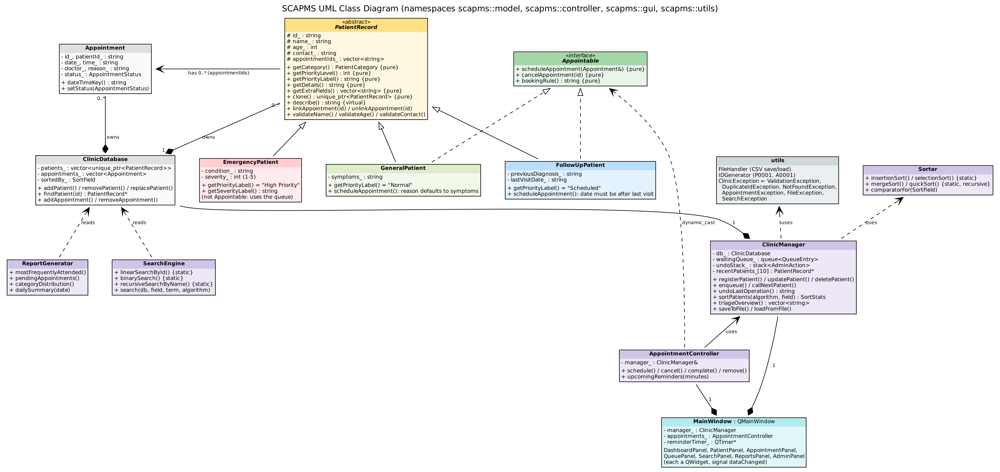
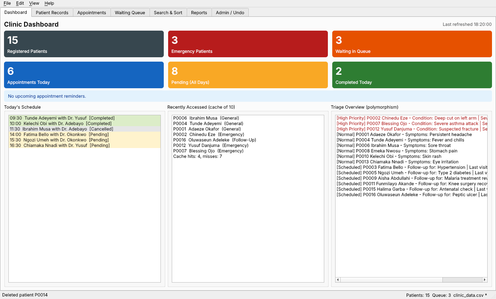
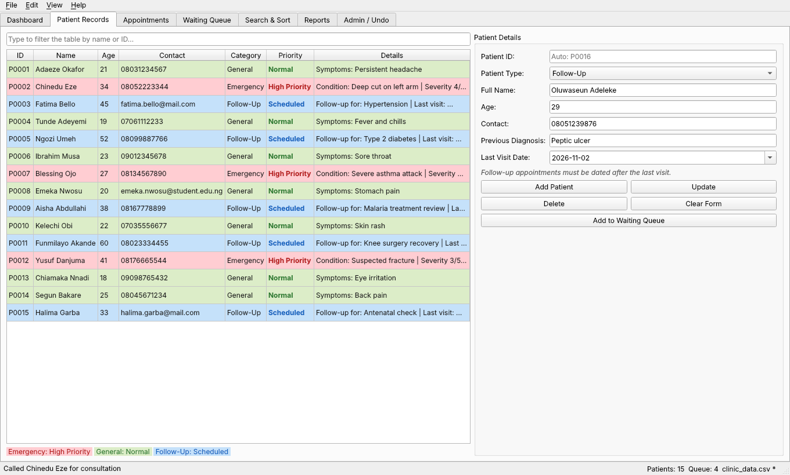
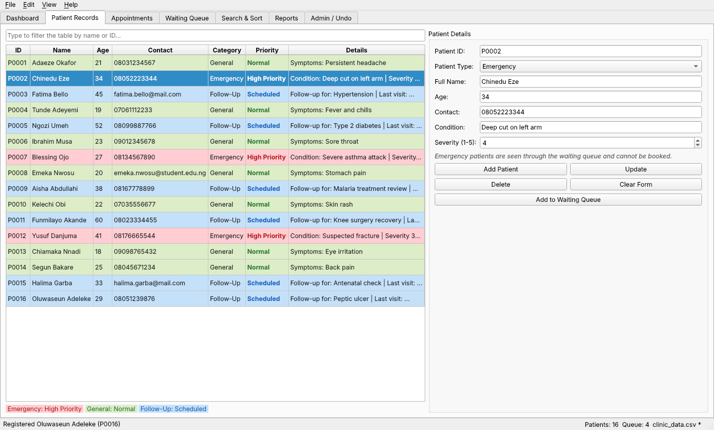
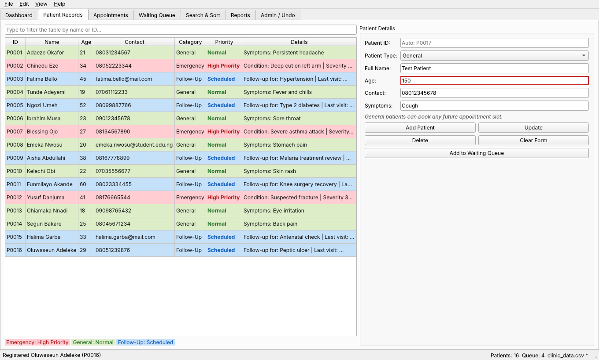
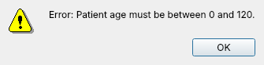
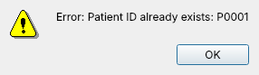
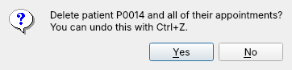
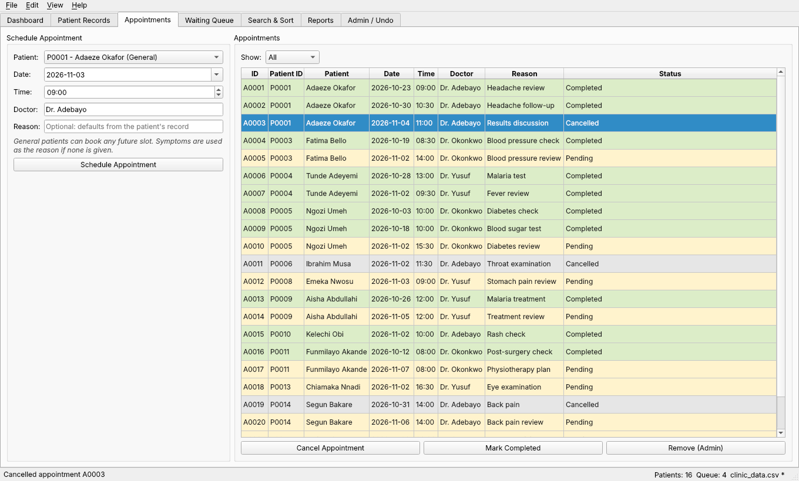
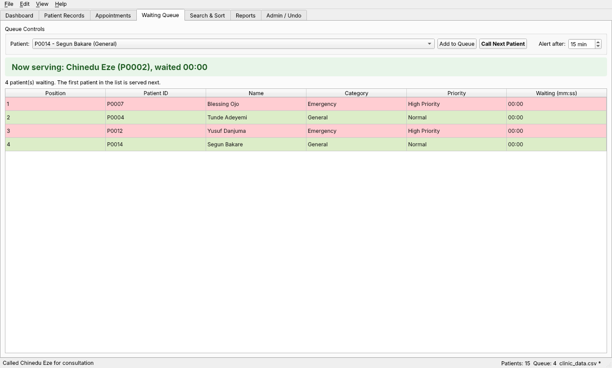
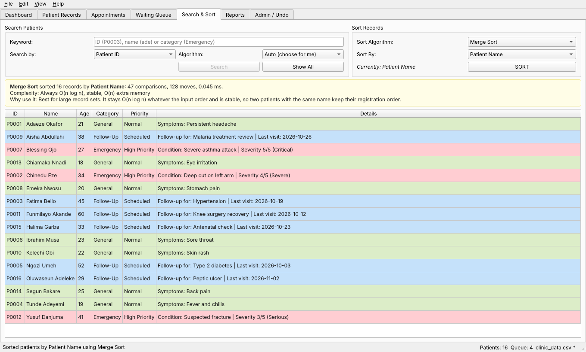
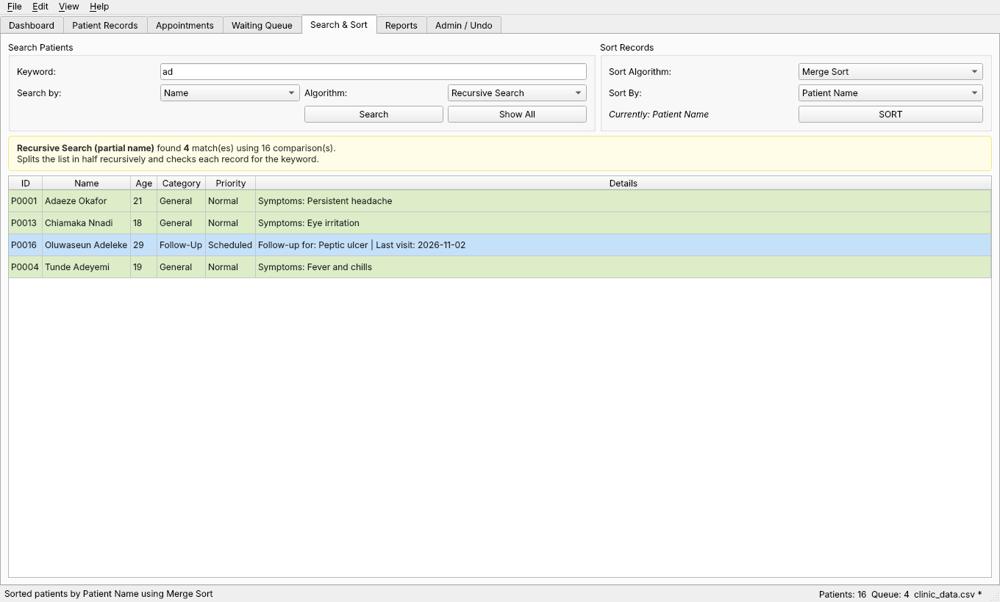
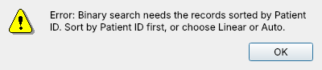
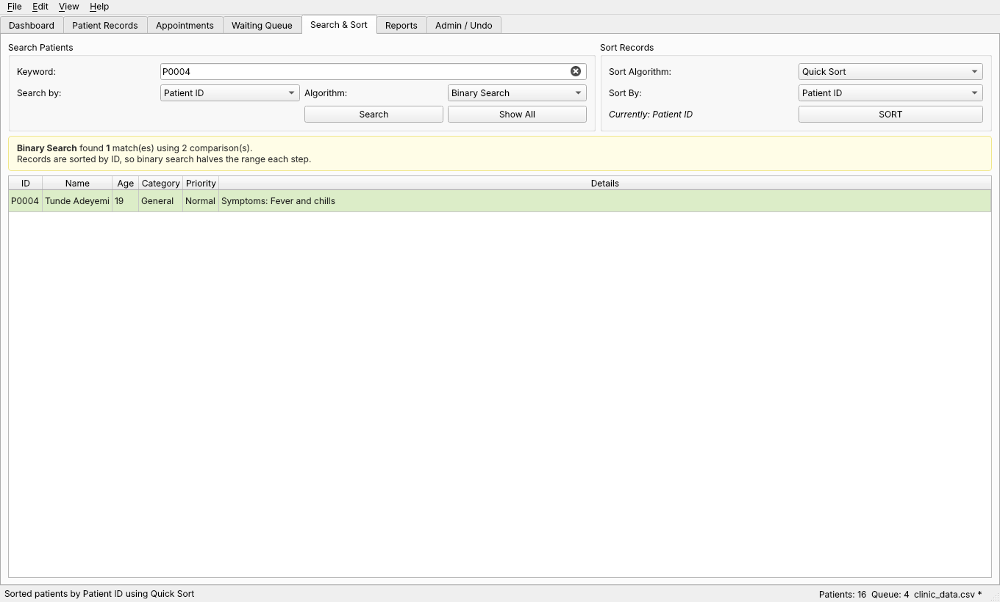
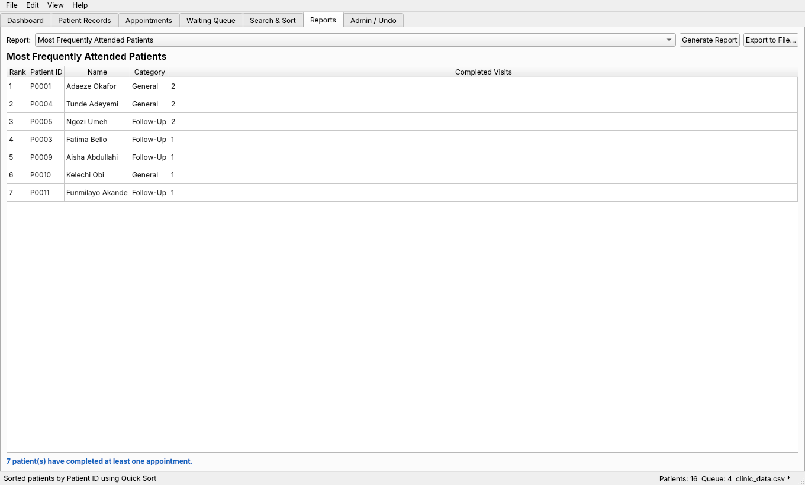
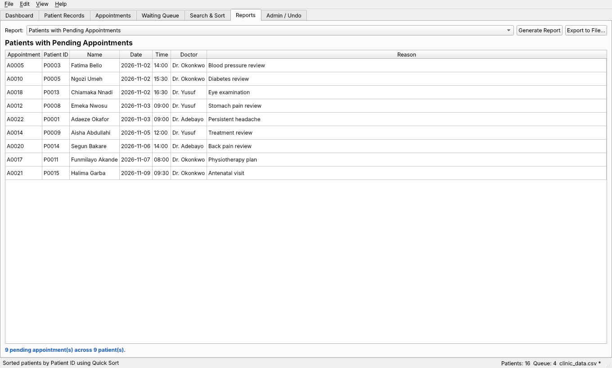
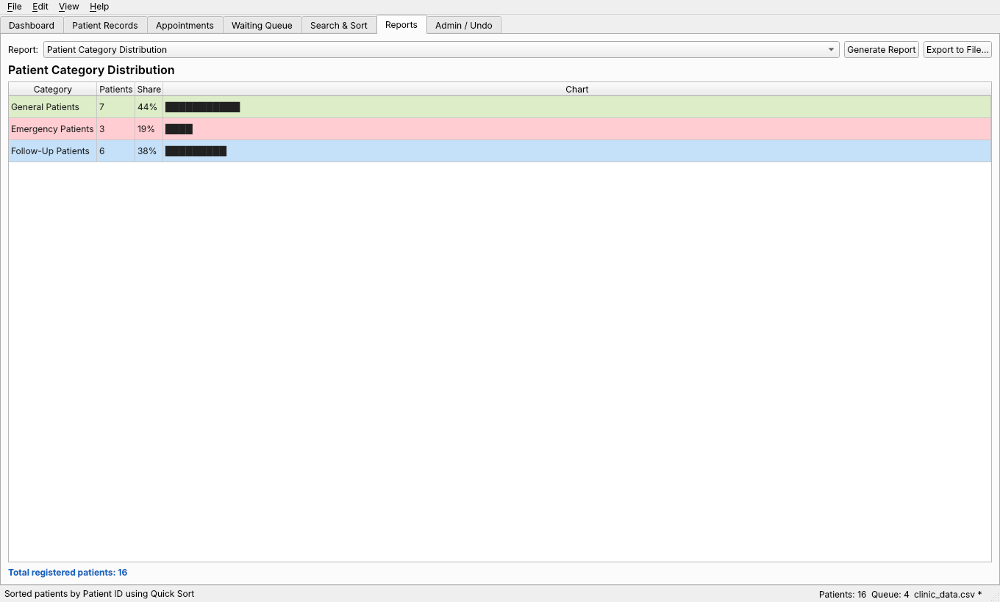
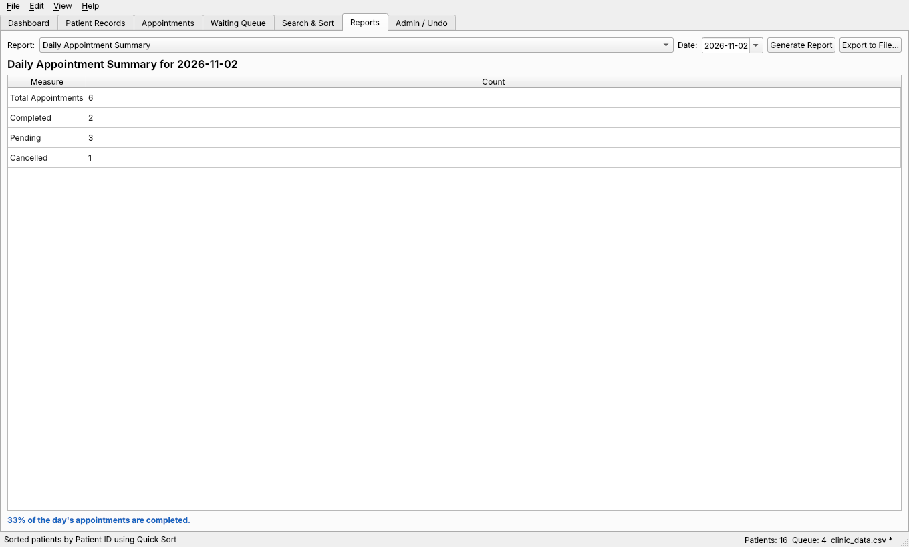
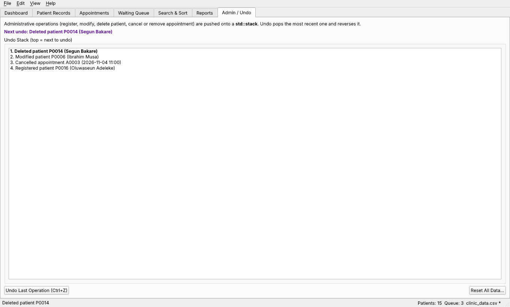
#pragma once
// Interface-like abstract class: only pure virtual functions, no data.
// Patient types that can be booked (General, Follow-Up) inherit from it.
// EmergencyPatient does not, because emergencies go through the waiting queue.
#include <string>
namespace scapms::model {
class Appointment;
class Appointable {
public:
virtual ~Appointable() = default;
// Applies type-specific booking rules, then links the appointment.
// Throws AppointmentException when a rule is broken.
virtual void scheduleAppointment(Appointment& appointment) = 0;
// Confirms the appointment belongs to this patient before it is cancelled.
virtual void cancelAppointment(const std::string& appointmentId) = 0;
// Short text shown in the GUI explaining this type's booking rule.
virtual std::string bookingRule() const = 0;
};
} // namespace scapms::model
#pragma once
// One clinic appointment. Linked to a patient through patientId.
#include <string>
namespace scapms::model {
enum class AppointmentStatus { Pending, Completed, Cancelled };
std::string statusToString(AppointmentStatus status);
AppointmentStatus statusFromString(const std::string& text);
class Appointment {
public:
Appointment(std::string id, std::string patientId, std::string date, std::string time,
std::string doctor, std::string reason,
AppointmentStatus status = AppointmentStatus::Pending);
const std::string& getId() const { return id_; }
const std::string& getPatientId() const { return patientId_; }
const std::string& getDate() const { return date_; }
const std::string& getTime() const { return time_; }
const std::string& getDoctor() const { return doctor_; }
const std::string& getReason() const { return reason_; }
AppointmentStatus getStatus() const { return status_; }
std::string getStatusName() const { return statusToString(status_); }
// "YYYY-MM-DD HH:MM" sorts chronologically as a plain string.
std::string dateTimeKey() const { return date_ + " " + time_; }
void setReason(const std::string& reason) { reason_ = reason; }
void setStatus(AppointmentStatus status) { status_ = status; }
private:
void validate() const;
std::string id_;
std::string patientId_;
std::string date_;
std::string time_;
std::string doctor_;
std::string reason_;
AppointmentStatus status_;
};
} // namespace scapms::model
#pragma once
// Composition: the database owns every patient record and appointment.
// Patients live in a std::vector of unique_ptr<PatientRecord>, so one
// container holds all three subclasses through the base-class pointer.
#include "model/Appointment.h"
#include "model/PatientRecord.h"
#include <memory>
#include <string>
#include <vector>
namespace scapms::model {
using PatientList = std::vector<std::unique_ptr<PatientRecord>>;
// Field the patient list is currently sorted by. Binary search checks this.
enum class SortField { None, Name, Id, Age, AppointmentDate };
std::string sortFieldToString(SortField field);
class ClinicDatabase {
public:
ClinicDatabase() = default;
ClinicDatabase(const ClinicDatabase&) = delete;
ClinicDatabase& operator=(const ClinicDatabase&) = delete;
ClinicDatabase(ClinicDatabase&&) = default;
ClinicDatabase& operator=(ClinicDatabase&&) = default;
// ---- patients ----
void addPatient(std::unique_ptr<PatientRecord> patient);
std::unique_ptr<PatientRecord> removePatient(const std::string& id);
void replacePatient(std::unique_ptr<PatientRecord> patient);
PatientRecord* findPatient(const std::string& id) const;
PatientList& patients() { return patients_; }
const PatientList& patients() const { return patients_; }
std::size_t patientCount() const { return patients_.size(); }
int countByCategory(PatientCategory category) const;
// ---- appointments ----
void addAppointment(const Appointment& appointment);
Appointment removeAppointment(const std::string& id);
Appointment* findAppointment(const std::string& id);
const Appointment* findAppointment(const std::string& id) const;
std::vector<Appointment>& appointments() { return appointments_; }
const std::vector<Appointment>& appointments() const { return appointments_; }
std::vector<Appointment> appointmentsFor(const std::string& patientId) const;
// ---- sort state ----
SortField sortedBy() const { return sortedBy_; }
void setSortedBy(SortField field) { sortedBy_ = field; }
void clear();
private:
PatientList patients_;
std::vector<Appointment> appointments_;
SortField sortedBy_ = SortField::None;
};
} // namespace scapms::model
#pragma once
// An urgent patient. Not Appointable: emergencies are seen through the
// waiting queue instead of booked slots.
#include "model/PatientRecord.h"
namespace scapms::model {
class EmergencyPatient : public PatientRecord {
public:
EmergencyPatient(std::string id, std::string name, int age, std::string contact,
std::string condition, int severity);
const std::string& getCondition() const { return condition_; }
int getSeverity() const { return severity_; }
std::string getSeverityLabel() const;
void setCondition(const std::string& condition);
void setSeverity(int severity);
PatientCategory getCategory() const override { return PatientCategory::Emergency; }
int getPriorityLevel() const override { return 1; }
std::string getPriorityLabel() const override { return "High Priority"; }
std::string getDetails() const override;
std::vector<std::string> getExtraFields() const override;
std::unique_ptr<PatientRecord> clone() const override;
private:
std::string condition_;
int severity_; // 1 (minor) to 5 (critical)
};
} // namespace scapms::model
#pragma once
// A returning patient who needs a check-up after an earlier visit.
#include "model/Appointable.h"
#include "model/PatientRecord.h"
namespace scapms::model {
class FollowUpPatient : public PatientRecord, public Appointable {
public:
FollowUpPatient(std::string id, std::string name, int age, std::string contact,
std::string previousDiagnosis, std::string lastVisitDate);
const std::string& getPreviousDiagnosis() const { return previousDiagnosis_; }
const std::string& getLastVisitDate() const { return lastVisitDate_; }
void setPreviousDiagnosis(const std::string& diagnosis);
void setLastVisitDate(const std::string& date);
PatientCategory getCategory() const override { return PatientCategory::FollowUp; }
int getPriorityLevel() const override { return 3; }
std::string getPriorityLabel() const override { return "Scheduled"; }
std::string getDetails() const override;
std::vector<std::string> getExtraFields() const override;
std::unique_ptr<PatientRecord> clone() const override;
void scheduleAppointment(Appointment& appointment) override;
void cancelAppointment(const std::string& appointmentId) override;
std::string bookingRule() const override;
private:
std::string previousDiagnosis_;
std::string lastVisitDate_; // YYYY-MM-DD
};
} // namespace scapms::model
#pragma once
// A walk-in or routine patient. Can be booked for appointments.
#include "model/Appointable.h"
#include "model/PatientRecord.h"
namespace scapms::model {
class GeneralPatient : public PatientRecord, public Appointable {
public:
GeneralPatient(std::string id, std::string name, int age, std::string contact,
std::string symptoms);
const std::string& getSymptoms() const { return symptoms_; }
void setSymptoms(const std::string& symptoms);
// PatientRecord overrides
PatientCategory getCategory() const override { return PatientCategory::General; }
int getPriorityLevel() const override { return 2; }
std::string getPriorityLabel() const override { return "Normal"; }
std::string getDetails() const override;
std::vector<std::string> getExtraFields() const override { return {symptoms_}; }
std::unique_ptr<PatientRecord> clone() const override;
// Appointable overrides
void scheduleAppointment(Appointment& appointment) override;
void cancelAppointment(const std::string& appointmentId) override;
std::string bookingRule() const override;
private:
std::string symptoms_;
};
} // namespace scapms::model
#pragma once
// Builds the right PatientRecord subclass from plain values.
// Used by the GUI forms and by the file loader.
#include "model/PatientRecord.h"
#include <memory>
#include <string>
#include <vector>
namespace scapms::model {
// extras holds the type-specific fields:
// General -> {symptoms}
// Emergency -> {condition, severity}
// Follow-Up -> {previous diagnosis, last visit date}
std::unique_ptr<PatientRecord> createPatient(PatientCategory category, const std::string& id,
const std::string& name, int age,
const std::string& contact,
const std::vector<std::string>& extras);
} // namespace scapms::model
#pragma once
// Abstract base class for every patient in the clinic.
// Holds the data all patients share and declares the behaviour each
// patient type must define (pure virtual functions).
#include <memory>
#include <string>
#include <vector>
namespace scapms::model {
enum class PatientCategory { General, Emergency, FollowUp };
std::string categoryToString(PatientCategory category);
PatientCategory categoryFromString(const std::string& text);
class PatientRecord {
public:
PatientRecord(std::string id, std::string name, int age, std::string contact);
virtual ~PatientRecord() = default;
// Encapsulated data: read through getters, changed through validating setters.
const std::string& getId() const { return id_; }
const std::string& getName() const { return name_; }
int getAge() const { return age_; }
const std::string& getContact() const { return contact_; }
void setName(const std::string& name);
void setAge(int age);
void setContact(const std::string& contact);
// ---- Pure virtual functions: every subclass must implement these ----
virtual PatientCategory getCategory() const = 0;
virtual int getPriorityLevel() const = 0; // 1 = most urgent
virtual std::string getPriorityLabel() const = 0; // e.g. "High Priority"
virtual std::string getDetails() const = 0; // type-specific summary
virtual std::vector<std::string> getExtraFields() const = 0; // for saving
virtual std::unique_ptr<PatientRecord> clone() const = 0; // for undo snapshots
// Non-pure virtual built from the pure virtual calls above.
virtual std::string describe() const;
std::string getCategoryName() const { return categoryToString(getCategory()); }
// Association with appointments (a patient can have many).
const std::vector<std::string>& getAppointmentIds() const { return appointmentIds_; }
void setAppointmentIds(const std::vector<std::string>& ids) { appointmentIds_ = ids; }
bool hasAppointment(const std::string& appointmentId) const;
void linkAppointment(const std::string& appointmentId);
void unlinkAppointment(const std::string& appointmentId);
// Shared validation rules; each throws ValidationException on failure.
static void validateId(const std::string& id);
static void validateName(const std::string& name);
static void validateAge(int age);
static void validateContact(const std::string& contact);
protected:
std::string id_;
std::string name_;
int age_;
std::string contact_;
std::vector<std::string> appointmentIds_;
};
} // namespace scapms::model
#pragma once
// Appointment business logic: booking, cancelling, completing, removing,
// and finding reminders. Uses ClinicManager for patients and the undo stack.
#include "controller/ClinicManager.h"
#include "model/Appointment.h"
#include <string>
#include <vector>
namespace scapms::controller {
class AppointmentController {
public:
explicit AppointmentController(ClinicManager& manager);
model::Appointment schedule(const std::string& patientId, const std::string& date,
const std::string& time, const std::string& doctor,
const std::string& reason);
void cancel(const std::string& appointmentId);
void complete(const std::string& appointmentId);
void remove(const std::string& appointmentId);
// Pending appointments today that start within the next `minutesAhead` minutes.
std::vector<model::Appointment> upcomingReminders(int minutesAhead) const;
std::vector<model::Appointment> appointmentsOn(const std::string& date) const;
std::string nextAppointmentFor(const std::string& patientId) const;
private:
model::Appointment& requireAppointment(const std::string& appointmentId);
std::string generateAppointmentId() const;
ClinicManager& manager_;
};
} // namespace scapms::controller
#pragma once
// Main business-logic controller. Owns the ClinicDatabase and the three
// supporting data structures the brief asks for:
// std::queue -> patients waiting for consultation (first in, first out)
// std::stack -> undo history for administrative operations
// fixed array -> cache of the 10 most recently accessed patient records
#include "controller/Sorter.h"
#include "model/ClinicDatabase.h"
#include <ctime>
#include <memory>
#include <queue>
#include <stack>
#include <string>
#include <vector>
namespace scapms::controller {
struct QueueEntry {
std::string patientId;
std::time_t joinedAt;
};
enum class ActionType { AddPatient, DeletePatient, ModifyPatient, RemoveAppointment, CancelAppointment };
// One entry on the undo stack: enough data to reverse the operation.
struct AdminAction {
ActionType type;
std::string targetId;
std::string description;
std::shared_ptr<const model::PatientRecord> patientSnapshot;
std::vector<model::Appointment> appointmentSnapshots;
std::time_t performedAt = 0;
};
class ClinicManager {
public:
static constexpr int CACHE_SIZE = 10;
ClinicManager();
model::ClinicDatabase& database() { return db_; }
const model::ClinicDatabase& database() const { return db_; }
// ---- patient operations ----
std::string generatePatientId() const;
model::PatientRecord& registerPatient(std::unique_ptr<model::PatientRecord> patient);
void updatePatient(std::unique_ptr<model::PatientRecord> updated);
void deletePatient(const std::string& id);
model::PatientRecord* getPatient(const std::string& id); // checks the cache first
// ---- waiting queue (std::queue) ----
void enqueue(const std::string& patientId);
QueueEntry callNextPatient();
std::vector<QueueEntry> queueSnapshot() const;
bool isQueued(const std::string& patientId) const;
std::size_t queueSize() const { return waitingQueue_.size(); }
// ---- undo (std::stack) ----
void recordAction(AdminAction action);
bool canUndo() const { return !undoStack_.empty(); }
std::string undoLastOperation();
std::vector<std::string> undoHistory() const; // newest first
// ---- recently accessed cache (fixed-size array) ----
std::vector<model::PatientRecord*> recentPatients() const;
int cacheHits() const { return cacheHits_; }
int cacheMisses() const { return cacheMisses_; }
// ---- sorting ----
SortStats sortPatients(SortAlgorithm algorithm, model::SortField field);
// ---- polymorphism demo ----
std::vector<std::string> triageOverview() const;
// ---- persistence ----
void saveToFile(const std::string& path) const;
void loadFromFile(const std::string& path);
void reset();
private:
void touchRecent(model::PatientRecord* patient);
void evictRecent(const model::PatientRecord* patient);
void clearRecent();
void removeFromQueue(const std::string& patientId);
void removePatientCompletely(const std::string& id);
model::ClinicDatabase db_;
std::queue<QueueEntry> waitingQueue_;
std::stack<AdminAction> undoStack_;
model::PatientRecord* recentPatients_[CACHE_SIZE]; // most recent at index 0
int recentCount_ = 0;
int cacheHits_ = 0;
int cacheMisses_ = 0;
};
// Processes any patient through a base-class reference (runtime polymorphism).
std::string triageLine(const model::PatientRecord& patient);
} // namespace scapms::controller
#pragma once
// Builds the clinic reports as plain tables, so the GUI can show them and
// FileHandler can export them as text.
#include "model/ClinicDatabase.h"
#include <string>
#include <vector>
namespace scapms::controller {
struct Report {
std::string title;
std::vector<std::string> headers;
std::vector<std::vector<std::string>> rows;
std::string summary;
};
class ReportGenerator {
public:
explicit ReportGenerator(const model::ClinicDatabase& db) : db_(db) {}
Report mostFrequentlyAttended(std::size_t limit = 10) const;
Report pendingAppointments() const;
Report categoryDistribution() const;
Report dailySummary(const std::string& date) const;
static std::string toText(const Report& report);
private:
const model::ClinicDatabase& db_;
};
} // namespace scapms::controller
#pragma once
// Fills the clinic with demonstration data, with dates relative to today so
// reminders, reports and the daily summary always have something to show.
#include "controller/ClinicManager.h"
namespace scapms::controller {
void loadSampleData(ClinicManager& manager);
} // namespace scapms::controller
#pragma once
// Hand-written searching algorithms: linear, binary and recursive.
// search() picks the right technique for the current state of the data.
#include "model/ClinicDatabase.h"
#include <string>
#include <vector>
namespace scapms::controller {
enum class SearchField { Id, Name, Category };
enum class SearchAlgorithm { Auto, Linear, Binary, Recursive };
struct SearchResult {
std::vector<model::PatientRecord*> matches;
std::string algorithmUsed;
long comparisons = 0;
std::string note;
};
class SearchEngine {
public:
// Linear search by exact patient ID. Works on unsorted data. O(n).
static int linearSearchById(const model::PatientList& list, const std::string& id,
long& comparisons);
// Linear scan for names containing the term. O(n).
static std::vector<model::PatientRecord*> linearSearchByName(const model::PatientList& list,
const std::string& term,
long& comparisons);
// Binary search. The list MUST be sorted by the same field. O(log n).
// field must be SortField::Id or SortField::Name.
static int binarySearch(const model::PatientList& list, const std::string& key,
model::SortField field, long& comparisons);
// Recursive divide-and-conquer search for names containing the term.
// Splits the range in half until one record remains (recursion depth log n).
static void recursiveSearchByName(const model::PatientList& list, const std::string& term,
long low, long high,
std::vector<model::PatientRecord*>& results,
long& comparisons);
static std::vector<model::PatientRecord*> searchByCategory(const model::PatientList& list,
model::PatientCategory category,
long& comparisons);
// Validates the input, chooses an algorithm and returns the matches.
static SearchResult search(const model::ClinicDatabase& db, SearchField field,
const std::string& term, SearchAlgorithm algorithm);
static std::string name(SearchAlgorithm algorithm);
};
} // namespace scapms::controller
#pragma once
// Hand-written sorting algorithms (no std::sort).
// They sort the database's vector of unique_ptr<PatientRecord> in place,
// moving pointers only, so the patient objects themselves never move.
#include "model/ClinicDatabase.h"
#include <functional>
#include <string>
namespace scapms::controller {
enum class SortAlgorithm { Insertion, Selection, Merge, Quick };
// Returns true when a should come before b.
using Comparator = std::function<bool(const model::PatientRecord& a, const model::PatientRecord& b)>;
struct SortStats {
long long comparisons = 0;
long long moves = 0;
double milliseconds = 0.0;
};
class Sorter {
public:
static SortStats sort(model::PatientList& list, SortAlgorithm algorithm,
const Comparator& less);
static void insertionSort(model::PatientList& list, const Comparator& less, SortStats& stats);
static void selectionSort(model::PatientList& list, const Comparator& less, SortStats& stats);
static void mergeSort(model::PatientList& list, const Comparator& less, SortStats& stats);
static void quickSort(model::PatientList& list, const Comparator& less, SortStats& stats);
static Comparator comparatorFor(model::SortField field, const model::ClinicDatabase& db);
static std::string name(SortAlgorithm algorithm);
static std::string complexity(SortAlgorithm algorithm);
static std::string explain(SortAlgorithm algorithm);
private:
static void mergeSortRange(model::PatientList& list, model::PatientList& buffer,
std::size_t low, std::size_t high, const Comparator& less,
SortStats& stats);
static void quickSortRange(model::PatientList& list, long low, long high,
const Comparator& less, SortStats& stats);
};
} // namespace scapms::controller
#pragma once
// Date and time helpers. Dates use the ISO format YYYY-MM-DD and times use
// HH:MM, so plain string comparison gives chronological order.
#include <cctype>
#include <cstdio>
#include <ctime>
#include <string>
namespace scapms::utils {
inline bool isLeapYear(int year) {
return (year % 4 == 0 && year % 100 != 0) || year % 400 == 0;
}
inline int daysInMonth(int year, int month) {
static const int days[] = {31, 28, 31, 30, 31, 30, 31, 31, 30, 31, 30, 31};
if (month == 2 && isLeapYear(year)) {
return 29;
}
return days[month - 1];
}
inline bool allDigits(const std::string& text, std::size_t from, std::size_t count) {
for (std::size_t i = from; i < from + count; ++i) {
if (!std::isdigit(static_cast<unsigned char>(text[i]))) {
return false;
}
}
return true;
}
inline bool isValidDate(const std::string& date) {
if (date.size() != 10 || date[4] != '-' || date[7] != '-') {
return false;
}
if (!allDigits(date, 0, 4) || !allDigits(date, 5, 2) || !allDigits(date, 8, 2)) {
return false;
}
const int year = std::stoi(date.substr(0, 4));
const int month = std::stoi(date.substr(5, 2));
const int day = std::stoi(date.substr(8, 2));
if (year < 1900 || year > 2100 || month < 1 || month > 12) {
return false;
}
return day >= 1 && day <= daysInMonth(year, month);
}
inline bool isValidTime(const std::string& time) {
if (time.size() != 5 || time[2] != ':' || !allDigits(time, 0, 2) || !allDigits(time, 3, 2)) {
return false;
}
const int hour = std::stoi(time.substr(0, 2));
const int minute = std::stoi(time.substr(3, 2));
return hour >= 0 && hour <= 23 && minute >= 0 && minute <= 59;
}
inline std::string formatTm(const std::tm& tm, const char* pattern) {
char buffer[32];
std::strftime(buffer, sizeof(buffer), pattern, &tm);
return buffer;
}
inline std::tm localNow() {
std::time_t now = std::time(nullptr);
return *std::localtime(&now);
}
inline std::string today() { return formatTm(localNow(), "%Y-%m-%d"); }
inline std::string currentTime() { return formatTm(localNow(), "%H:%M"); }
inline int minutesOfDay(const std::string& time) {
return std::stoi(time.substr(0, 2)) * 60 + std::stoi(time.substr(3, 2));
}
// Returns date shifted by the given number of days (negative moves back).
inline std::string addDays(const std::string& date, int days) {
std::tm tm{};
tm.tm_year = std::stoi(date.substr(0, 4)) - 1900;
tm.tm_mon = std::stoi(date.substr(5, 2)) - 1;
tm.tm_mday = std::stoi(date.substr(8, 2)) + days;
tm.tm_hour = 12; // midday avoids daylight-saving edge cases
std::mktime(&tm);
return formatTm(tm, "%Y-%m-%d");
}
} // namespace scapms::utils
#pragma once
// Custom exception hierarchy for SCAPMS.
// Every error the program reports derives from ClinicException, so the GUI
// can catch one base type and still show a specific dialog title.
#include <stdexcept>
#include <string>
namespace scapms::utils {
class ClinicException : public std::runtime_error {
public:
explicit ClinicException(const std::string& message)
: std::runtime_error(message) {}
virtual std::string title() const { return "Clinic Error"; }
};
// Bad user input: empty name, age outside 0-120, malformed date, etc.
class ValidationException : public ClinicException {
public:
using ClinicException::ClinicException;
std::string title() const override { return "Invalid Input"; }
};
// A patient ID that is already registered.
class DuplicateIdException : public ClinicException {
public:
explicit DuplicateIdException(const std::string& id)
: ClinicException("Patient ID already exists: " + id) {}
std::string title() const override { return "Duplicate Patient ID"; }
};
// A patient or appointment ID that does not exist.
class NotFoundException : public ClinicException {
public:
using ClinicException::ClinicException;
std::string title() const override { return "Record Not Found"; }
};
// Rule violations when booking or changing appointments.
class AppointmentException : public ClinicException {
public:
using ClinicException::ClinicException;
std::string title() const override { return "Appointment Error"; }
};
// Problems opening, reading, parsing or writing data files.
class FileException : public ClinicException {
public:
using ClinicException::ClinicException;
std::string title() const override { return "File Error"; }
};
// Empty keywords or a search algorithm used on data in the wrong state.
class SearchException : public ClinicException {
public:
using ClinicException::ClinicException;
std::string title() const override { return "Search Error"; }
};
} // namespace scapms::utils
#pragma once
// Saves and loads all clinic data in one CSV file.
//
// # SCAPMS data file v1
// PATIENT,<id>,<category>,<name>,<age>,<contact>,<extra1>,<extra2>
// APPT,<id>,<patientId>,<date>,<time>,<doctor>,<reason>,<status>
//
// Fields containing commas or quotes are wrapped in double quotes.
#include "model/ClinicDatabase.h"
#include <string>
#include <vector>
namespace scapms::utils {
class FileHandler {
public:
static void save(const std::string& path, const model::ClinicDatabase& db);
static void load(const std::string& path, model::ClinicDatabase& db);
static void writeText(const std::string& path, const std::string& text);
static std::string escapeCsv(const std::string& field);
static std::vector<std::string> parseCsvLine(const std::string& line);
};
} // namespace scapms::utils
#pragma once
// Generates sequential, zero-padded IDs such as P0001 and A0001.
// observe() keeps the counters ahead of IDs loaded from a file or typed by
// the user, so a generated ID never collides with an existing one.
#include <cctype>
#include <iomanip>
#include <sstream>
#include <string>
namespace scapms::utils {
class IDGenerator {
public:
static std::string nextPatientId() { return format('P', ++patientCounter_); }
static std::string nextAppointmentId() { return format('A', ++appointmentCounter_); }
static std::string peekNextPatientId() { return format('P', patientCounter_ + 1); }
static void observe(const std::string& id) {
if (id.size() < 2) {
return;
}
int number = 0;
for (std::size_t i = 1; i < id.size(); ++i) {
if (!std::isdigit(static_cast<unsigned char>(id[i]))) {
return;
}
number = number * 10 + (id[i] - '0');
}
if (id[0] == 'P' && number > patientCounter_) {
patientCounter_ = number;
} else if (id[0] == 'A' && number > appointmentCounter_) {
appointmentCounter_ = number;
}
}
static void reset() {
patientCounter_ = 0;
appointmentCounter_ = 0;
}
private:
static std::string format(char prefix, int number) {
std::ostringstream out;
out << prefix << std::setw(4) << std::setfill('0') << number;
return out.str();
}
static inline int patientCounter_ = 0;
static inline int appointmentCounter_ = 0;
};
} // namespace scapms::utils
#pragma once
// Small string helpers. Matching is written by hand so that the search
// module does not depend on library search functions.
#include <cctype>
#include <string>
namespace scapms::utils {
inline std::string toLower(std::string text) {
for (char& c : text) {
c = static_cast<char>(std::tolower(static_cast<unsigned char>(c)));
}
return text;
}
inline std::string toUpper(std::string text) {
for (char& c : text) {
c = static_cast<char>(std::toupper(static_cast<unsigned char>(c)));
}
return text;
}
inline std::string trim(const std::string& text) {
std::size_t start = 0;
while (start < text.size() && std::isspace(static_cast<unsigned char>(text[start]))) {
++start;
}
std::size_t end = text.size();
while (end > start && std::isspace(static_cast<unsigned char>(text[end - 1]))) {
--end;
}
return text.substr(start, end - start);
}
// Case-insensitive "does text contain term" written with two nested loops.
inline bool containsIgnoreCase(const std::string& text, const std::string& term) {
if (term.empty()) {
return true;
}
const std::string haystack = toLower(text);
const std::string needle = toLower(term);
if (needle.size() > haystack.size()) {
return false;
}
for (std::size_t i = 0; i + needle.size() <= haystack.size(); ++i) {
std::size_t j = 0;
while (j < needle.size() && haystack[i + j] == needle[j]) {
++j;
}
if (j == needle.size()) {
return true;
}
}
return false;
}
} // namespace scapms::utils
// SCAPMS - Smart Clinic Appointment & Patient Management System
// COS202 Programming II lab project. Entry point.
#include "gui/MainWindow.h"
#include <QApplication>
#include <QStyleFactory>
int main(int argc, char* argv[]) {
QApplication app(argc, argv);
QApplication::setApplicationName("SCAPMS");
QApplication::setStyle(QStyleFactory::create("Fusion")); // same look on every OS
scapms::gui::MainWindow window;
window.loadStartupData();
window.show();
return QApplication::exec();
}
#include "model/Appointment.h"
#include "utils/DateUtils.h"
#include "utils/Exceptions.h"
#include "utils/StringUtils.h"
namespace scapms::model {
using utils::ValidationException;
std::string statusToString(AppointmentStatus status) {
switch (status) {
case AppointmentStatus::Pending: return "Pending";
case AppointmentStatus::Completed: return "Completed";
case AppointmentStatus::Cancelled: return "Cancelled";
}
return "Unknown";
}
AppointmentStatus statusFromString(const std::string& text) {
const std::string key = utils::toLower(utils::trim(text));
if (key == "pending") {
return AppointmentStatus::Pending;
}
if (key == "completed") {
return AppointmentStatus::Completed;
}
if (key == "cancelled" || key == "canceled") {
return AppointmentStatus::Cancelled;
}
throw ValidationException("Unknown appointment status: " + text);
}
Appointment::Appointment(std::string id, std::string patientId, std::string date,
std::string time, std::string doctor, std::string reason,
AppointmentStatus status)
: id_(utils::trim(id)),
patientId_(utils::toUpper(utils::trim(patientId))),
date_(utils::trim(date)),
time_(utils::trim(time)),
doctor_(utils::trim(doctor)),
reason_(utils::trim(reason)),
status_(status) {
validate();
}
void Appointment::validate() const {
if (id_.empty()) {
throw ValidationException("Appointment ID is missing.");
}
if (patientId_.empty()) {
throw ValidationException("An appointment must belong to a patient.");
}
if (!utils::isValidDate(date_)) {
throw ValidationException("Invalid appointment date '" + date_ + "'. Use YYYY-MM-DD.");
}
if (!utils::isValidTime(time_)) {
throw ValidationException("Invalid appointment time '" + time_ + "'. Use HH:MM (24-hour).");
}
if (doctor_.size() < 2) {
throw ValidationException("Please enter the doctor's name for the appointment.");
}
}
} // namespace scapms::model
#include "model/ClinicDatabase.h"
#include "utils/Exceptions.h"
namespace scapms::model {
std::string sortFieldToString(SortField field) {
switch (field) {
case SortField::None: return "Unsorted";
case SortField::Name: return "Patient Name";
case SortField::Id: return "Patient ID";
case SortField::Age: return "Age";
case SortField::AppointmentDate: return "Next Appointment Date";
}
return "Unknown";
}
void ClinicDatabase::addPatient(std::unique_ptr<PatientRecord> patient) {
if (!patient) {
throw utils::ValidationException("Cannot add an empty patient record.");
}
if (findPatient(patient->getId()) != nullptr) {
throw utils::DuplicateIdException(patient->getId());
}
patients_.push_back(std::move(patient));
sortedBy_ = SortField::None; // appended at the end, so order is no longer guaranteed
}
std::unique_ptr<PatientRecord> ClinicDatabase::removePatient(const std::string& id) {
for (auto it = patients_.begin(); it != patients_.end(); ++it) {
if ((*it)->getId() == id) {
std::unique_ptr<PatientRecord> removed = std::move(*it);
patients_.erase(it); // erasing keeps the remaining order, so sortedBy_ stays valid
return removed;
}
}
throw utils::NotFoundException("No patient with ID " + id + ".");
}
void ClinicDatabase::replacePatient(std::unique_ptr<PatientRecord> patient) {
for (auto& slot : patients_) {
if (slot->getId() == patient->getId()) {
slot = std::move(patient);
sortedBy_ = SortField::None; // name or age may have changed
return;
}
}
throw utils::NotFoundException("No patient with ID " + patient->getId() + ".");
}
PatientRecord* ClinicDatabase::findPatient(const std::string& id) const {
for (const auto& patient : patients_) {
if (patient->getId() == id) {
return patient.get();
}
}
return nullptr;
}
int ClinicDatabase::countByCategory(PatientCategory category) const {
int count = 0;
for (const auto& patient : patients_) {
if (patient->getCategory() == category) {
++count;
}
}
return count;
}
void ClinicDatabase::addAppointment(const Appointment& appointment) {
if (findAppointment(appointment.getId()) != nullptr) {
throw utils::AppointmentException("Appointment ID already exists: " + appointment.getId());
}
appointments_.push_back(appointment);
}
Appointment ClinicDatabase::removeAppointment(const std::string& id) {
for (auto it = appointments_.begin(); it != appointments_.end(); ++it) {
if (it->getId() == id) {
Appointment removed = *it;
appointments_.erase(it);
return removed;
}
}
throw utils::NotFoundException("No appointment with ID " + id + ".");
}
Appointment* ClinicDatabase::findAppointment(const std::string& id) {
for (auto& appointment : appointments_) {
if (appointment.getId() == id) {
return &appointment;
}
}
return nullptr;
}
const Appointment* ClinicDatabase::findAppointment(const std::string& id) const {
for (const auto& appointment : appointments_) {
if (appointment.getId() == id) {
return &appointment;
}
}
return nullptr;
}
std::vector<Appointment> ClinicDatabase::appointmentsFor(const std::string& patientId) const {
std::vector<Appointment> result;
for (const auto& appointment : appointments_) {
if (appointment.getPatientId() == patientId) {
result.push_back(appointment);
}
}
return result;
}
void ClinicDatabase::clear() {
patients_.clear();
appointments_.clear();
sortedBy_ = SortField::None;
}
} // namespace scapms::model
#include "model/EmergencyPatient.h"
#include "utils/Exceptions.h"
#include "utils/StringUtils.h"
namespace scapms::model {
EmergencyPatient::EmergencyPatient(std::string id, std::string name, int age,
std::string contact, std::string condition, int severity)
: PatientRecord(std::move(id), std::move(name), age, std::move(contact)), severity_(1) {
setCondition(condition);
setSeverity(severity);
}
void EmergencyPatient::setCondition(const std::string& condition) {
const std::string cleaned = utils::trim(condition);
if (cleaned.empty()) {
throw utils::ValidationException("Please describe the emergency condition.");
}
condition_ = cleaned;
}
void EmergencyPatient::setSeverity(int severity) {
if (severity < 1 || severity > 5) {
throw utils::ValidationException("Emergency severity must be between 1 and 5.");
}
severity_ = severity;
}
std::string EmergencyPatient::getSeverityLabel() const {
static const char* labels[] = {"Minor", "Moderate", "Serious", "Severe", "Critical"};
return labels[severity_ - 1];
}
std::string EmergencyPatient::getDetails() const {
return "Condition: " + condition_ + " | Severity " + std::to_string(severity_) + "/5 (" +
getSeverityLabel() + ")";
}
std::vector<std::string> EmergencyPatient::getExtraFields() const {
return {condition_, std::to_string(severity_)};
}
std::unique_ptr<PatientRecord> EmergencyPatient::clone() const {
return std::make_unique<EmergencyPatient>(*this);
}
} // namespace scapms::model
#include "model/FollowUpPatient.h"
#include "model/Appointment.h"
#include "utils/DateUtils.h"
#include "utils/Exceptions.h"
#include "utils/StringUtils.h"
namespace scapms::model {
FollowUpPatient::FollowUpPatient(std::string id, std::string name, int age, std::string contact,
std::string previousDiagnosis, std::string lastVisitDate)
: PatientRecord(std::move(id), std::move(name), age, std::move(contact)) {
setPreviousDiagnosis(previousDiagnosis);
setLastVisitDate(lastVisitDate);
}
void FollowUpPatient::setPreviousDiagnosis(const std::string& diagnosis) {
const std::string cleaned = utils::trim(diagnosis);
if (cleaned.empty()) {
throw utils::ValidationException("Please enter the previous diagnosis for the follow-up.");
}
previousDiagnosis_ = cleaned;
}
void FollowUpPatient::setLastVisitDate(const std::string& date) {
const std::string cleaned = utils::trim(date);
if (!utils::isValidDate(cleaned)) {
throw utils::ValidationException("Last visit date must be a valid date (YYYY-MM-DD).");
}
lastVisitDate_ = cleaned;
}
std::string FollowUpPatient::getDetails() const {
return "Follow-up for: " + previousDiagnosis_ + " | Last visit: " + lastVisitDate_;
}
std::vector<std::string> FollowUpPatient::getExtraFields() const {
return {previousDiagnosis_, lastVisitDate_};
}
std::unique_ptr<PatientRecord> FollowUpPatient::clone() const {
return std::make_unique<FollowUpPatient>(*this);
}
void FollowUpPatient::scheduleAppointment(Appointment& appointment) {
if (appointment.getPatientId() != id_) {
throw utils::AppointmentException("Appointment " + appointment.getId() +
" does not belong to patient " + id_ + ".");
}
// Follow-up rule: the check-up must come after the last visit.
if (appointment.getDate() <= lastVisitDate_) {
throw utils::AppointmentException("A follow-up appointment must be after the last visit (" +
lastVisitDate_ + ").");
}
if (appointment.getReason().empty()) {
appointment.setReason("Follow-up: " + previousDiagnosis_);
}
linkAppointment(appointment.getId());
}
void FollowUpPatient::cancelAppointment(const std::string& appointmentId) {
if (!hasAppointment(appointmentId)) {
throw utils::AppointmentException("Appointment " + appointmentId +
" is not booked for " + name_ + ".");
}
}
std::string FollowUpPatient::bookingRule() const {
return "Follow-up appointments must be dated after the last visit (" + lastVisitDate_ + ").";
}
} // namespace scapms::model
#include "model/GeneralPatient.h"
#include "model/Appointment.h"
#include "utils/Exceptions.h"
#include "utils/StringUtils.h"
namespace scapms::model {
GeneralPatient::GeneralPatient(std::string id, std::string name, int age, std::string contact,
std::string symptoms)
: PatientRecord(std::move(id), std::move(name), age, std::move(contact)) {
setSymptoms(symptoms);
}
void GeneralPatient::setSymptoms(const std::string& symptoms) {
const std::string cleaned = utils::trim(symptoms);
if (cleaned.empty()) {
throw utils::ValidationException("Please describe the general patient's symptoms.");
}
symptoms_ = cleaned;
}
std::string GeneralPatient::getDetails() const {
return "Symptoms: " + symptoms_;
}
std::unique_ptr<PatientRecord> GeneralPatient::clone() const {
return std::make_unique<GeneralPatient>(*this);
}
void GeneralPatient::scheduleAppointment(Appointment& appointment) {
if (appointment.getPatientId() != id_) {
throw utils::AppointmentException("Appointment " + appointment.getId() +
" does not belong to patient " + id_ + ".");
}
// General rule: if no reason was typed, the recorded symptoms become the reason.
if (appointment.getReason().empty()) {
appointment.setReason(symptoms_);
}
linkAppointment(appointment.getId());
}
void GeneralPatient::cancelAppointment(const std::string& appointmentId) {
if (!hasAppointment(appointmentId)) {
throw utils::AppointmentException("Appointment " + appointmentId +
" is not booked for " + name_ + ".");
}
}
std::string GeneralPatient::bookingRule() const {
return "General patients can book any future slot. Symptoms are used as the reason if none is given.";
}
} // namespace scapms::model
#include "model/PatientFactory.h"
#include "model/EmergencyPatient.h"
#include "model/FollowUpPatient.h"
#include "model/GeneralPatient.h"
#include "utils/Exceptions.h"
namespace scapms::model {
namespace {
const std::string& extraAt(const std::vector<std::string>& extras, std::size_t index,
const std::string& what) {
if (index >= extras.size()) {
throw utils::ValidationException("Missing field: " + what + ".");
}
return extras[index];
}
} // namespace
std::unique_ptr<PatientRecord> createPatient(PatientCategory category, const std::string& id,
const std::string& name, int age,
const std::string& contact,
const std::vector<std::string>& extras) {
switch (category) {
case PatientCategory::General:
return std::make_unique<GeneralPatient>(id, name, age, contact,
extraAt(extras, 0, "symptoms"));
case PatientCategory::Emergency: {
int severity = 0;
try {
severity = std::stoi(extraAt(extras, 1, "severity"));
} catch (const std::invalid_argument&) {
throw utils::ValidationException("Emergency severity must be a number from 1 to 5.");
} catch (const std::out_of_range&) {
throw utils::ValidationException("Emergency severity must be a number from 1 to 5.");
}
return std::make_unique<EmergencyPatient>(id, name, age, contact,
extraAt(extras, 0, "condition"), severity);
}
case PatientCategory::FollowUp:
return std::make_unique<FollowUpPatient>(id, name, age, contact,
extraAt(extras, 0, "previous diagnosis"),
extraAt(extras, 1, "last visit date"));
}
throw utils::ValidationException("Unknown patient category.");
}
} // namespace scapms::model
#include "model/PatientRecord.h"
#include "utils/Exceptions.h"
#include "utils/StringUtils.h"
#include <cctype>
namespace scapms::model {
using utils::ValidationException;
std::string categoryToString(PatientCategory category) {
switch (category) {
case PatientCategory::General: return "General";
case PatientCategory::Emergency: return "Emergency";
case PatientCategory::FollowUp: return "Follow-Up";
}
return "Unknown";
}
PatientCategory categoryFromString(const std::string& text) {
const std::string key = utils::toLower(utils::trim(text));
if (key == "general") {
return PatientCategory::General;
}
if (key == "emergency") {
return PatientCategory::Emergency;
}
if (key == "follow-up" || key == "followup" || key == "follow up") {
return PatientCategory::FollowUp;
}
throw ValidationException("Unknown patient category: " + text);
}
PatientRecord::PatientRecord(std::string id, std::string name, int age, std::string contact)
: id_(utils::toUpper(utils::trim(id))),
name_(utils::trim(name)),
age_(age),
contact_(utils::trim(contact)) {
validateId(id_);
validateName(name_);
validateAge(age_);
validateContact(contact_);
}
void PatientRecord::setName(const std::string& name) {
const std::string cleaned = utils::trim(name);
validateName(cleaned);
name_ = cleaned;
}
void PatientRecord::setAge(int age) {
validateAge(age);
age_ = age;
}
void PatientRecord::setContact(const std::string& contact) {
const std::string cleaned = utils::trim(contact);
validateContact(cleaned);
contact_ = cleaned;
}
std::string PatientRecord::describe() const {
// Calls pure virtual functions, so the output depends on the real type.
return id_ + " | " + name_ + " (" + std::to_string(age_) + ") | " + getCategoryName() +
" | " + getPriorityLabel() + " | " + getDetails();
}
bool PatientRecord::hasAppointment(const std::string& appointmentId) const {
for (const std::string& id : appointmentIds_) {
if (id == appointmentId) {
return true;
}
}
return false;
}
void PatientRecord::linkAppointment(const std::string& appointmentId) {
if (!hasAppointment(appointmentId)) {
appointmentIds_.push_back(appointmentId);
}
}
void PatientRecord::unlinkAppointment(const std::string& appointmentId) {
for (std::size_t i = 0; i < appointmentIds_.size(); ++i) {
if (appointmentIds_[i] == appointmentId) {
appointmentIds_.erase(appointmentIds_.begin() + static_cast<long>(i));
return;
}
}
}
void PatientRecord::validateId(const std::string& id) {
bool valid = id.size() >= 2 && id.size() <= 7 && id[0] == 'P';
for (std::size_t i = 1; valid && i < id.size(); ++i) {
valid = std::isdigit(static_cast<unsigned char>(id[i])) != 0;
}
if (!valid) {
throw ValidationException("Patient ID must be the letter P followed by 1-6 digits (e.g. P0001).");
}
}
void PatientRecord::validateName(const std::string& name) {
if (name.size() < 2 || name.size() > 60) {
throw ValidationException("Patient name must be between 2 and 60 characters.");
}
bool hasLetter = false;
for (char c : name) {
const auto uc = static_cast<unsigned char>(c);
if (std::isalpha(uc)) {
hasLetter = true;
} else if (c != ' ' && c != '-' && c != '\'' && c != '.') {
throw ValidationException("Patient name may only contain letters, spaces, hyphens, apostrophes and full stops.");
}
}
if (!hasLetter) {
throw ValidationException("Patient name must contain letters.");
}
}
void PatientRecord::validateAge(int age) {
if (age < 0 || age > 120) {
throw ValidationException("Patient age must be between 0 and 120.");
}
}
void PatientRecord::validateContact(const std::string& contact) {
if (contact.empty()) {
throw ValidationException("Contact information is required.");
}
const std::size_t at = contact.find('@');
if (at != std::string::npos) {
const bool hasSpace = contact.find(' ') != std::string::npos;
const bool dotAfterAt = contact.find('.', at) != std::string::npos;
if (at == 0 || hasSpace || !dotAfterAt || contact.back() == '.') {
throw ValidationException("Contact email address is not valid.");
}
return;
}
int digits = 0;
for (char c : contact) {
if (std::isdigit(static_cast<unsigned char>(c))) {
++digits;
} else if (c != '+' && c != ' ' && c != '-' && c != '(' && c != ')') {
throw ValidationException("Contact must be a phone number (7-15 digits) or an email address.");
}
}
if (digits < 7 || digits > 15) {
throw ValidationException("Contact must be a phone number (7-15 digits) or an email address.");
}
}
} // namespace scapms::model
#include "controller/AppointmentController.h"
#include "model/Appointable.h"
#include "utils/DateUtils.h"
#include "utils/Exceptions.h"
#include "utils/IDGenerator.h"
#include "utils/StringUtils.h"
namespace scapms::controller {
using model::Appointment;
using model::AppointmentStatus;
using utils::AppointmentException;
AppointmentController::AppointmentController(ClinicManager& manager) : manager_(manager) {}
std::string AppointmentController::generateAppointmentId() const {
std::string id;
do {
id = utils::IDGenerator::nextAppointmentId();
} while (manager_.database().findAppointment(id) != nullptr);
return id;
}
Appointment& AppointmentController::requireAppointment(const std::string& appointmentId) {
Appointment* appointment = manager_.database().findAppointment(appointmentId);
if (appointment == nullptr) {
throw utils::NotFoundException("No appointment with ID " + appointmentId + ".");
}
return *appointment;
}
Appointment AppointmentController::schedule(const std::string& patientId, const std::string& date,
const std::string& time, const std::string& doctor,
const std::string& reason) {
model::PatientRecord* patient = manager_.getPatient(patientId);
if (patient == nullptr) {
throw utils::NotFoundException("Please choose a registered patient for the appointment.");
}
// Only types that implement the Appointable interface can be booked.
auto* appointable = dynamic_cast<model::Appointable*>(patient);
if (appointable == nullptr) {
throw AppointmentException(patient->getName() + " is an " + patient->getCategoryName() +
" patient. Emergency patients are seen through the waiting "
"queue and cannot be booked for appointments.");
}
if (!utils::isValidDate(date)) {
throw utils::ValidationException("Appointment date must be a valid date (YYYY-MM-DD).");
}
if (!utils::isValidTime(time)) {
throw utils::ValidationException("Appointment time must be a valid time (HH:MM).");
}
const std::string today = utils::today();
if (date < today) {
throw AppointmentException("Appointment date cannot be in the past.");
}
if (date == today && time < utils::currentTime()) {
throw AppointmentException("That time has already passed today. Choose a later time.");
}
const std::string doctorName = utils::trim(doctor);
if (doctorName.size() < 2) {
throw utils::ValidationException("Please enter the doctor's name.");
}
for (const Appointment& existing : manager_.database().appointments()) {
if (existing.getStatus() == AppointmentStatus::Pending && existing.getDate() == date &&
existing.getTime() == time &&
utils::toLower(existing.getDoctor()) == utils::toLower(doctorName)) {
throw AppointmentException(doctorName + " already has an appointment on " + date +
" at " + time + ".");
}
}
Appointment appointment(generateAppointmentId(), patient->getId(), date, time, doctorName,
reason);
appointable->scheduleAppointment(appointment); // subclass rules, may throw
manager_.database().addAppointment(appointment);
return appointment;
}
void AppointmentController::cancel(const std::string& appointmentId) {
Appointment& appointment = requireAppointment(appointmentId);
if (appointment.getStatus() != AppointmentStatus::Pending) {
throw AppointmentException("Only pending appointments can be cancelled. This one is " +
appointment.getStatusName() + ".");
}
model::PatientRecord* patient = manager_.database().findPatient(appointment.getPatientId());
if (auto* appointable = dynamic_cast<model::Appointable*>(patient)) {
appointable->cancelAppointment(appointmentId);
}
AdminAction action;
action.type = ActionType::CancelAppointment;
action.targetId = appointmentId;
action.description = "Cancelled appointment " + appointmentId + " (" +
appointment.getDate() + " " + appointment.getTime() + ")";
action.appointmentSnapshots.push_back(appointment);
appointment.setStatus(AppointmentStatus::Cancelled);
manager_.recordAction(std::move(action));
}
void AppointmentController::complete(const std::string& appointmentId) {
Appointment& appointment = requireAppointment(appointmentId);
if (appointment.getStatus() != AppointmentStatus::Pending) {
throw AppointmentException("Only pending appointments can be marked as completed.");
}
appointment.setStatus(AppointmentStatus::Completed);
}
void AppointmentController::remove(const std::string& appointmentId) {
const Appointment snapshot = requireAppointment(appointmentId);
AdminAction action;
action.type = ActionType::RemoveAppointment;
action.targetId = appointmentId;
action.description = "Removed appointment " + appointmentId + " for patient " +
snapshot.getPatientId();
action.appointmentSnapshots.push_back(snapshot);
if (model::PatientRecord* patient = manager_.database().findPatient(snapshot.getPatientId())) {
patient->unlinkAppointment(appointmentId);
}
manager_.database().removeAppointment(appointmentId);
manager_.recordAction(std::move(action));
}
std::vector<Appointment> AppointmentController::upcomingReminders(int minutesAhead) const {
std::vector<Appointment> due;
const std::string today = utils::today();
const int now = utils::minutesOfDay(utils::currentTime());
for (const Appointment& appointment : manager_.database().appointments()) {
if (appointment.getStatus() != AppointmentStatus::Pending || appointment.getDate() != today) {
continue;
}
const int start = utils::minutesOfDay(appointment.getTime());
if (start >= now && start - now <= minutesAhead) {
due.push_back(appointment);
}
}
return due;
}
std::vector<Appointment> AppointmentController::appointmentsOn(const std::string& date) const {
std::vector<Appointment> result;
for (const Appointment& appointment : manager_.database().appointments()) {
if (appointment.getDate() == date) {
result.push_back(appointment);
}
}
// Order by time with a small insertion sort.
for (std::size_t i = 1; i < result.size(); ++i) {
Appointment key = result[i];
std::size_t j = i;
while (j > 0 && result[j - 1].getTime() > key.getTime()) {
result[j] = result[j - 1];
--j;
}
result[j] = key;
}
return result;
}
std::string AppointmentController::nextAppointmentFor(const std::string& patientId) const {
std::string best;
for (const Appointment& appointment : manager_.database().appointments()) {
if (appointment.getPatientId() == patientId &&
appointment.getStatus() == AppointmentStatus::Pending &&
(best.empty() || appointment.dateTimeKey() < best)) {
best = appointment.dateTimeKey();
}
}
return best;
}
} // namespace scapms::controller
#include "controller/ClinicManager.h"
#include "utils/Exceptions.h"
#include "utils/FileHandler.h"
#include "utils/IDGenerator.h"
namespace scapms::controller {
using model::Appointment;
using model::PatientRecord;
using utils::ClinicException;
using utils::NotFoundException;
std::string triageLine(const PatientRecord& patient) {
// Every call below is virtual: the actual subclass decides the output.
return "[" + patient.getPriorityLabel() + "] " + patient.getId() + " " + patient.getName() +
" - " + patient.getDetails();
}
ClinicManager::ClinicManager() {
clearRecent();
}
// ===================== patients =====================
std::string ClinicManager::generatePatientId() const {
std::string id;
do {
id = utils::IDGenerator::nextPatientId();
} while (db_.findPatient(id) != nullptr);
return id;
}
PatientRecord& ClinicManager::registerPatient(std::unique_ptr<PatientRecord> patient) {
if (!patient) {
throw utils::ValidationException("Cannot register an empty patient record.");
}
const std::string id = patient->getId();
db_.addPatient(std::move(patient)); // throws DuplicateIdException
utils::IDGenerator::observe(id);
PatientRecord* added = db_.findPatient(id);
touchRecent(added);
AdminAction action;
action.type = ActionType::AddPatient;
action.targetId = id;
action.description = "Registered patient " + id + " (" + added->getName() + ")";
recordAction(std::move(action));
return *added;
}
void ClinicManager::updatePatient(std::unique_ptr<PatientRecord> updated) {
if (!updated) {
throw utils::ValidationException("Cannot save an empty patient record.");
}
const std::string id = updated->getId();
PatientRecord* existing = db_.findPatient(id);
if (existing == nullptr) {
throw NotFoundException("No patient with ID " + id + ". Select a patient before updating.");
}
AdminAction action;
action.type = ActionType::ModifyPatient;
action.targetId = id;
action.description = "Modified patient " + id + " (" + existing->getName() + ")";
action.patientSnapshot = existing->clone();
updated->setAppointmentIds(existing->getAppointmentIds()); // keep the association
evictRecent(existing); // old object is about to be destroyed
db_.replacePatient(std::move(updated));
touchRecent(db_.findPatient(id));
recordAction(std::move(action));
}
void ClinicManager::deletePatient(const std::string& id) {
PatientRecord* existing = db_.findPatient(id);
if (existing == nullptr) {
throw NotFoundException("No patient with ID " + id + ".");
}
AdminAction action;
action.type = ActionType::DeletePatient;
action.targetId = id;
action.description = "Deleted patient " + id + " (" + existing->getName() + ")";
action.patientSnapshot = existing->clone();
action.appointmentSnapshots = db_.appointmentsFor(id);
removePatientCompletely(id);
recordAction(std::move(action));
}
void ClinicManager::removePatientCompletely(const std::string& id) {
for (const Appointment& appointment : db_.appointmentsFor(id)) {
db_.removeAppointment(appointment.getId());
}
evictRecent(db_.findPatient(id));
removeFromQueue(id);
db_.removePatient(id);
}
PatientRecord* ClinicManager::getPatient(const std::string& id) {
// 1. Look in the small cache first (at most 10 checks).
for (int i = 0; i < recentCount_; ++i) {
if (recentPatients_[i]->getId() == id) {
PatientRecord* found = recentPatients_[i];
++cacheHits_;
touchRecent(found);
return found;
}
}
// 2. Fall back to the full database.
++cacheMisses_;
PatientRecord* found = db_.findPatient(id);
touchRecent(found);
return found;
}
// ===================== waiting queue =====================
void ClinicManager::enqueue(const std::string& patientId) {
PatientRecord* patient = getPatient(patientId);
if (patient == nullptr) {
throw NotFoundException("No patient with ID " + patientId + ".");
}
if (isQueued(patientId)) {
throw utils::ValidationException(patient->getName() + " is already in the waiting queue.");
}
waitingQueue_.push({patientId, std::time(nullptr)});
}
QueueEntry ClinicManager::callNextPatient() {
if (waitingQueue_.empty()) {
throw ClinicException("The waiting queue is empty.");
}
QueueEntry next = waitingQueue_.front(); // first in ...
waitingQueue_.pop(); // ... first out
return next;
}
std::vector<QueueEntry> ClinicManager::queueSnapshot() const {
std::vector<QueueEntry> entries;
std::queue<QueueEntry> copy = waitingQueue_; // std::queue has no iterators
while (!copy.empty()) {
entries.push_back(copy.front());
copy.pop();
}
return entries;
}
bool ClinicManager::isQueued(const std::string& patientId) const {
for (const QueueEntry& entry : queueSnapshot()) {
if (entry.patientId == patientId) {
return true;
}
}
return false;
}
void ClinicManager::removeFromQueue(const std::string& patientId) {
std::queue<QueueEntry> kept;
while (!waitingQueue_.empty()) {
if (waitingQueue_.front().patientId != patientId) {
kept.push(waitingQueue_.front());
}
waitingQueue_.pop();
}
waitingQueue_ = kept;
}
// ===================== undo stack =====================
void ClinicManager::recordAction(AdminAction action) {
action.performedAt = std::time(nullptr);
undoStack_.push(std::move(action));
}
std::string ClinicManager::undoLastOperation() {
if (undoStack_.empty()) {
throw ClinicException("There is nothing to undo.");
}
AdminAction action = undoStack_.top(); // most recent operation
undoStack_.pop();
switch (action.type) {
case ActionType::AddPatient:
if (db_.findPatient(action.targetId) != nullptr) {
removePatientCompletely(action.targetId);
}
break;
case ActionType::DeletePatient: {
db_.addPatient(action.patientSnapshot->clone());
for (const Appointment& appointment : action.appointmentSnapshots) {
db_.addAppointment(appointment);
}
touchRecent(db_.findPatient(action.targetId));
break;
}
case ActionType::ModifyPatient: {
PatientRecord* current = db_.findPatient(action.targetId);
if (current == nullptr) {
throw NotFoundException("Cannot undo: patient " + action.targetId + " no longer exists.");
}
std::unique_ptr<PatientRecord> restored = action.patientSnapshot->clone();
restored->setAppointmentIds(current->getAppointmentIds());
evictRecent(current);
db_.replacePatient(std::move(restored));
touchRecent(db_.findPatient(action.targetId));
break;
}
case ActionType::RemoveAppointment: {
const Appointment& appointment = action.appointmentSnapshots.front();
db_.addAppointment(appointment);
if (PatientRecord* patient = db_.findPatient(appointment.getPatientId())) {
patient->linkAppointment(appointment.getId());
}
break;
}
case ActionType::CancelAppointment: {
Appointment* current = db_.findAppointment(action.targetId);
if (current == nullptr) {
throw NotFoundException("Cannot undo: appointment " + action.targetId + " no longer exists.");
}
current->setStatus(action.appointmentSnapshots.front().getStatus());
break;
}
}
return "Undone: " + action.description;
}
std::vector<std::string> ClinicManager::undoHistory() const {
std::vector<std::string> history;
std::stack<AdminAction> copy = undoStack_;
while (!copy.empty()) {
history.push_back(copy.top().description);
copy.pop();
}
return history;
}
// ===================== recent-patient cache =====================
void ClinicManager::touchRecent(PatientRecord* patient) {
if (patient == nullptr) {
return;
}
int position = -1;
for (int i = 0; i < recentCount_; ++i) {
if (recentPatients_[i] == patient) {
position = i;
break;
}
}
if (position == -1) {
// New entry: grow, or drop the least recently used one (last slot).
position = recentCount_ < CACHE_SIZE ? recentCount_++ : CACHE_SIZE - 1;
}
for (int i = position; i > 0; --i) {
recentPatients_[i] = recentPatients_[i - 1];
}
recentPatients_[0] = patient;
}
void ClinicManager::evictRecent(const PatientRecord* patient) {
for (int i = 0; i < recentCount_; ++i) {
if (recentPatients_[i] == patient) {
for (int j = i; j < recentCount_ - 1; ++j) {
recentPatients_[j] = recentPatients_[j + 1];
}
--recentCount_;
recentPatients_[recentCount_] = nullptr;
return;
}
}
}
void ClinicManager::clearRecent() {
for (int i = 0; i < CACHE_SIZE; ++i) {
recentPatients_[i] = nullptr;
}
recentCount_ = 0;
}
std::vector<PatientRecord*> ClinicManager::recentPatients() const {
return std::vector<PatientRecord*>(recentPatients_, recentPatients_ + recentCount_);
}
// ===================== sorting =====================
SortStats ClinicManager::sortPatients(SortAlgorithm algorithm, model::SortField field) {
const Comparator less = Sorter::comparatorFor(field, db_);
SortStats stats = Sorter::sort(db_.patients(), algorithm, less);
db_.setSortedBy(field);
return stats;
}
// ===================== polymorphism =====================
std::vector<std::string> ClinicManager::triageOverview() const {
// Collect base-class pointers, order by priority (insertion sort, stable).
std::vector<const PatientRecord*> ordered;
for (const auto& patient : db_.patients()) {
ordered.push_back(patient.get());
}
for (std::size_t i = 1; i < ordered.size(); ++i) {
const PatientRecord* key = ordered[i];
std::size_t j = i;
while (j > 0 && ordered[j - 1]->getPriorityLevel() > key->getPriorityLevel()) {
ordered[j] = ordered[j - 1];
--j;
}
ordered[j] = key;
}
std::vector<std::string> lines;
for (const PatientRecord* patient : ordered) {
lines.push_back(triageLine(*patient));
}
return lines;
}
// ===================== persistence =====================
void ClinicManager::saveToFile(const std::string& path) const {
utils::FileHandler::save(path, db_);
}
void ClinicManager::loadFromFile(const std::string& path) {
model::ClinicDatabase loaded;
utils::FileHandler::load(path, loaded); // throws FileException; current data untouched
reset();
db_ = std::move(loaded);
for (const auto& patient : db_.patients()) {
utils::IDGenerator::observe(patient->getId());
}
for (const auto& appointment : db_.appointments()) {
utils::IDGenerator::observe(appointment.getId());
}
}
void ClinicManager::reset() {
clearRecent();
db_.clear();
waitingQueue_ = std::queue<QueueEntry>();
undoStack_ = std::stack<AdminAction>();
cacheHits_ = 0;
cacheMisses_ = 0;
utils::IDGenerator::reset();
}
} // namespace scapms::controller
#include "controller/ReportGenerator.h"
#include "utils/DateUtils.h"
#include "utils/Exceptions.h"
#include <sstream>
namespace scapms::controller {
using model::AppointmentStatus;
Report ReportGenerator::mostFrequentlyAttended(std::size_t limit) const {
Report report;
report.title = "Most Frequently Attended Patients";
report.headers = {"Rank", "Patient ID", "Name", "Category", "Completed Visits"};
struct Entry {
const model::PatientRecord* patient;
int completed;
};
std::vector<Entry> entries;
for (const auto& patient : db_.patients()) {
int completed = 0;
for (const auto& appointment : db_.appointments()) {
if (appointment.getPatientId() == patient->getId() &&
appointment.getStatus() == AppointmentStatus::Completed) {
++completed;
}
}
if (completed > 0) {
entries.push_back({patient.get(), completed});
}
}
// Insertion sort, highest count first (stable, small list).
for (std::size_t i = 1; i < entries.size(); ++i) {
Entry key = entries[i];
std::size_t j = i;
while (j > 0 && entries[j - 1].completed < key.completed) {
entries[j] = entries[j - 1];
--j;
}
entries[j] = key;
}
for (std::size_t i = 0; i < entries.size() && i < limit; ++i) {
report.rows.push_back({std::to_string(i + 1), entries[i].patient->getId(),
entries[i].patient->getName(), entries[i].patient->getCategoryName(),
std::to_string(entries[i].completed)});
}
report.summary = entries.empty() ? "No completed appointments yet."
: std::to_string(entries.size()) +
" patient(s) have completed at least one appointment.";
return report;
}
Report ReportGenerator::pendingAppointments() const {
Report report;
report.title = "Patients with Pending Appointments";
report.headers = {"Appointment", "Patient ID", "Name", "Date", "Time", "Doctor", "Reason"};
std::vector<const model::Appointment*> pending;
for (const auto& appointment : db_.appointments()) {
if (appointment.getStatus() == AppointmentStatus::Pending) {
pending.push_back(&appointment);
}
}
// Order by date and time (insertion sort).
for (std::size_t i = 1; i < pending.size(); ++i) {
const model::Appointment* key = pending[i];
std::size_t j = i;
while (j > 0 && pending[j - 1]->dateTimeKey() > key->dateTimeKey()) {
pending[j] = pending[j - 1];
--j;
}
pending[j] = key;
}
int distinctPatients = 0;
std::vector<std::string> seen;
for (const model::Appointment* appointment : pending) {
const model::PatientRecord* patient = db_.findPatient(appointment->getPatientId());
report.rows.push_back({appointment->getId(), appointment->getPatientId(),
patient ? patient->getName() : "(deleted)", appointment->getDate(),
appointment->getTime(), appointment->getDoctor(),
appointment->getReason()});
bool already = false;
for (const std::string& id : seen) {
already = already || id == appointment->getPatientId();
}
if (!already) {
seen.push_back(appointment->getPatientId());
++distinctPatients;
}
}
report.summary = std::to_string(pending.size()) + " pending appointment(s) across " +
std::to_string(distinctPatients) + " patient(s).";
return report;
}
Report ReportGenerator::categoryDistribution() const {
Report report;
report.title = "Patient Category Distribution";
report.headers = {"Category", "Patients", "Share", "Chart"};
const int total = static_cast<int>(db_.patientCount());
const model::PatientCategory categories[] = {model::PatientCategory::General,
model::PatientCategory::Emergency,
model::PatientCategory::FollowUp};
for (model::PatientCategory category : categories) {
const int count = db_.countByCategory(category);
const int percent = total == 0 ? 0 : (count * 100 + total / 2) / total;
std::string bar;
for (int i = 0; i < percent / 4; ++i) {
bar += "#";
}
report.rows.push_back({model::categoryToString(category) + " Patients",
std::to_string(count), std::to_string(percent) + "%", bar});
}
report.summary = "Total registered patients: " + std::to_string(total);
return report;
}
Report ReportGenerator::dailySummary(const std::string& date) const {
if (!utils::isValidDate(date)) {
throw utils::ValidationException("Report date must be a valid date (YYYY-MM-DD).");
}
Report report;
report.title = "Daily Appointment Summary for " + date;
report.headers = {"Measure", "Count"};
int total = 0;
int completed = 0;
int pending = 0;
int cancelled = 0;
for (const auto& appointment : db_.appointments()) {
if (appointment.getDate() != date) {
continue;
}
++total;
switch (appointment.getStatus()) {
case AppointmentStatus::Completed: ++completed; break;
case AppointmentStatus::Pending: ++pending; break;
case AppointmentStatus::Cancelled: ++cancelled; break;
}
}
report.rows = {{"Total Appointments", std::to_string(total)},
{"Completed", std::to_string(completed)},
{"Pending", std::to_string(pending)},
{"Cancelled", std::to_string(cancelled)}};
report.summary = total == 0 ? "No appointments on this date."
: std::to_string(completed * 100 / total) + "% of the day's appointments are completed.";
return report;
}
std::string ReportGenerator::toText(const Report& report) {
// Work out column widths so the export lines up in a text editor.
std::vector<std::size_t> widths(report.headers.size(), 0);
for (std::size_t c = 0; c < report.headers.size(); ++c) {
widths[c] = report.headers[c].size();
}
for (const auto& row : report.rows) {
for (std::size_t c = 0; c < row.size() && c < widths.size(); ++c) {
if (row[c].size() > widths[c]) {
widths[c] = row[c].size();
}
}
}
std::ostringstream out;
out << "SCAPMS Report: " << report.title << "\n";
out << "Generated: " << utils::today() << " " << utils::currentTime() << "\n\n";
const auto writeRow = [&](const std::vector<std::string>& cells) {
for (std::size_t c = 0; c < cells.size() && c < widths.size(); ++c) {
out << cells[c] << std::string(widths[c] - cells[c].size() + 2, ' ');
}
out << "\n";
};
writeRow(report.headers);
std::size_t lineLength = 0;
for (std::size_t width : widths) {
lineLength += width + 2;
}
out << std::string(lineLength, '-') << "\n";
for (const auto& row : report.rows) {
writeRow(row);
}
out << "\n" << report.summary << "\n";
return out.str();
}
} // namespace scapms::controller
#include "controller/SampleData.h"
#include "model/PatientFactory.h"
#include "utils/DateUtils.h"
#include "utils/IDGenerator.h"
namespace scapms::controller {
using model::AppointmentStatus;
using model::PatientCategory;
void loadSampleData(ClinicManager& manager) {
manager.reset();
model::ClinicDatabase& db = manager.database();
const std::string today = utils::today();
struct PatientSeed {
PatientCategory category;
const char* name;
int age;
const char* contact;
std::string extra1;
std::string extra2;
};
const PatientSeed patients[] = {
{PatientCategory::General, "Adaeze Okafor", 21, "08031234567", "Persistent headache", ""},
{PatientCategory::Emergency, "Chinedu Eze", 34, "08052223344", "Deep cut on left arm", "4"},
{PatientCategory::FollowUp, "Fatima Bello", 45, "fatima.bello@mail.com", "Hypertension", utils::addDays(today, -14)},
{PatientCategory::General, "Tunde Adeyemi", 19, "07061112233", "Fever and chills", ""},
{PatientCategory::FollowUp, "Ngozi Umeh", 52, "08099887766", "Type 2 diabetes", utils::addDays(today, -30)},
{PatientCategory::General, "Ibrahim Musa", 23, "09012345678", "Sore throat", ""},
{PatientCategory::Emergency, "Blessing Ojo", 27, "08134567890", "Severe asthma attack", "5"},
{PatientCategory::General, "Emeka Nwosu", 20, "emeka.nwosu@student.edu.ng", "Stomach pain", ""},
{PatientCategory::FollowUp, "Aisha Abdullahi", 38, "08167778899", "Malaria treatment review", utils::addDays(today, -7)},
{PatientCategory::General, "Kelechi Obi", 22, "07035556677", "Skin rash", ""},
{PatientCategory::FollowUp, "Funmilayo Akande", 60, "08023334455", "Knee surgery recovery", utils::addDays(today, -21)},
{PatientCategory::Emergency, "Yusuf Danjuma", 41, "08176665544", "Suspected fracture", "3"},
{PatientCategory::General, "Chiamaka Nnadi", 18, "09098765432", "Eye irritation", ""},
{PatientCategory::General, "Segun Bakare", 25, "08045671234", "Back pain", ""},
{PatientCategory::FollowUp, "Halima Garba", 33, "halima.garba@mail.com", "Antenatal check", utils::addDays(today, -10)},
};
for (const PatientSeed& seed : patients) {
std::vector<std::string> extras = {seed.extra1};
if (seed.category != PatientCategory::General) {
extras.push_back(seed.extra2);
}
db.addPatient(model::createPatient(seed.category, manager.generatePatientId(), seed.name,
seed.age, seed.contact, extras));
}
struct AppointmentSeed {
int patientIndex;
int dayOffset;
const char* time;
const char* doctor;
const char* reason;
AppointmentStatus status;
};
const AppointmentSeed appointments[] = {
{0, -10, "09:00", "Dr. Adebayo", "Headache review", AppointmentStatus::Completed},
{0, -3, "10:30", "Dr. Adebayo", "Headache follow-up", AppointmentStatus::Completed},
{0, 2, "11:00", "Dr. Adebayo", "Results discussion", AppointmentStatus::Pending},
{2, -14, "08:30", "Dr. Okonkwo", "Blood pressure check", AppointmentStatus::Completed},
{2, 0, "14:00", "Dr. Okonkwo", "Blood pressure review", AppointmentStatus::Pending},
{3, -5, "13:00", "Dr. Yusuf", "Malaria test", AppointmentStatus::Completed},
{3, 0, "09:30", "Dr. Yusuf", "Fever review", AppointmentStatus::Completed},
{4, -30, "10:00", "Dr. Okonkwo", "Diabetes check", AppointmentStatus::Completed},
{4, -15, "10:00", "Dr. Okonkwo", "Blood sugar test", AppointmentStatus::Completed},
{4, 0, "15:30", "Dr. Okonkwo", "Diabetes review", AppointmentStatus::Pending},
{5, 0, "11:30", "Dr. Adebayo", "Throat examination", AppointmentStatus::Cancelled},
{7, 1, "09:00", "Dr. Yusuf", "Stomach pain review", AppointmentStatus::Pending},
{8, -7, "12:00", "Dr. Yusuf", "Malaria treatment", AppointmentStatus::Completed},
{8, 3, "12:00", "Dr. Yusuf", "Treatment review", AppointmentStatus::Pending},
{9, 0, "10:00", "Dr. Adebayo", "Rash check", AppointmentStatus::Completed},
{10, -21, "08:00", "Dr. Okonkwo", "Post-surgery check", AppointmentStatus::Completed},
{10, 5, "08:00", "Dr. Okonkwo", "Physiotherapy plan", AppointmentStatus::Pending},
{12, 0, "16:30", "Dr. Yusuf", "Eye examination", AppointmentStatus::Pending},
{13, -2, "14:00", "Dr. Adebayo", "Back pain", AppointmentStatus::Cancelled},
{13, 4, "14:00", "Dr. Adebayo", "Back pain review", AppointmentStatus::Pending},
{14, 7, "09:30", "Dr. Okonkwo", "Antenatal visit", AppointmentStatus::Pending},
};
for (const AppointmentSeed& seed : appointments) {
model::PatientRecord* patient = db.patients()[static_cast<std::size_t>(seed.patientIndex)].get();
model::Appointment appointment(utils::IDGenerator::nextAppointmentId(), patient->getId(),
utils::addDays(today, seed.dayOffset), seed.time,
seed.doctor, seed.reason, seed.status);
db.addAppointment(appointment);
patient->linkAppointment(appointment.getId());
}
}
} // namespace scapms::controller
#include "controller/SearchEngine.h"
#include "utils/Exceptions.h"
#include "utils/StringUtils.h"
namespace scapms::controller {
using model::PatientList;
using model::PatientRecord;
using model::SortField;
using utils::SearchException;
int SearchEngine::linearSearchById(const PatientList& list, const std::string& id,
long& comparisons) {
for (std::size_t i = 0; i < list.size(); ++i) {
++comparisons;
if (list[i]->getId() == id) {
return static_cast<int>(i);
}
}
return -1;
}
std::vector<PatientRecord*> SearchEngine::linearSearchByName(const PatientList& list,
const std::string& term,
long& comparisons) {
std::vector<PatientRecord*> results;
for (const auto& patient : list) {
++comparisons;
if (utils::containsIgnoreCase(patient->getName(), term)) {
results.push_back(patient.get());
}
}
return results;
}
namespace {
std::string keyOf(const PatientRecord& patient, SortField field) {
return field == SortField::Name ? utils::toLower(patient.getName()) : patient.getId();
}
} // namespace
int SearchEngine::binarySearch(const PatientList& list, const std::string& key, SortField field,
long& comparisons) {
const std::string target = field == SortField::Name ? utils::toLower(key) : key;
long low = 0;
long high = static_cast<long>(list.size()) - 1;
while (low <= high) {
const long mid = low + (high - low) / 2; // avoids overflow of (low + high)
const std::string value = keyOf(*list[static_cast<std::size_t>(mid)], field);
++comparisons;
if (value == target) {
return static_cast<int>(mid);
}
if (value < target) {
low = mid + 1; // target is in the right half
} else {
high = mid - 1; // target is in the left half
}
}
return -1;
}
void SearchEngine::recursiveSearchByName(const PatientList& list, const std::string& term,
long low, long high,
std::vector<PatientRecord*>& results,
long& comparisons) {
if (low > high) {
return; // base case 1: empty range
}
if (low == high) {
// base case 2: a single record, check it
++comparisons;
PatientRecord* patient = list[static_cast<std::size_t>(low)].get();
if (utils::containsIgnoreCase(patient->getName(), term)) {
results.push_back(patient);
}
return;
}
const long mid = low + (high - low) / 2;
recursiveSearchByName(list, term, low, mid, results, comparisons); // left half
recursiveSearchByName(list, term, mid + 1, high, results, comparisons); // right half
}
std::vector<PatientRecord*> SearchEngine::searchByCategory(const PatientList& list,
model::PatientCategory category,
long& comparisons) {
std::vector<PatientRecord*> results;
for (const auto& patient : list) {
++comparisons;
if (patient->getCategory() == category) {
results.push_back(patient.get());
}
}
return results;
}
SearchResult SearchEngine::search(const model::ClinicDatabase& db, SearchField field,
const std::string& rawTerm, SearchAlgorithm algorithm) {
const std::string term = utils::trim(rawTerm);
if (term.empty()) {
throw SearchException("Please enter a search keyword.");
}
const PatientList& list = db.patients();
SearchResult result;
if (field == SearchField::Id) {
const std::string id = utils::toUpper(term);
try {
PatientRecord::validateId(id);
} catch (const utils::ValidationException&) {
throw SearchException("'" + term + "' is not a valid patient ID. IDs look like P0001.");
}
if (algorithm == SearchAlgorithm::Recursive) {
throw SearchException("Recursive search works on patient names. Choose 'Name' as the search field.");
}
const bool sortedById = db.sortedBy() == SortField::Id;
if (algorithm == SearchAlgorithm::Binary && !sortedById) {
throw SearchException("Binary search needs the records sorted by Patient ID. "
"Sort by Patient ID first, or choose Linear or Auto.");
}
int index = -1;
if (algorithm == SearchAlgorithm::Binary ||
(algorithm == SearchAlgorithm::Auto && sortedById)) {
index = binarySearch(list, id, SortField::Id, result.comparisons);
result.algorithmUsed = "Binary Search";
result.note = "Records are sorted by ID, so binary search halves the range each step.";
} else {
index = linearSearchById(list, id, result.comparisons);
result.algorithmUsed = "Linear Search";
result.note = "Records are not sorted by ID, so every record is checked in turn.";
}
if (index >= 0) {
result.matches.push_back(list[static_cast<std::size_t>(index)].get());
}
return result;
}
if (field == SearchField::Name) {
const bool sortedByName = db.sortedBy() == SortField::Name;
if (algorithm == SearchAlgorithm::Binary && !sortedByName) {
throw SearchException("Binary search needs the records sorted by Patient Name. "
"Sort by Patient Name first, or choose Linear, Recursive or Auto.");
}
if (algorithm == SearchAlgorithm::Binary ||
(algorithm == SearchAlgorithm::Auto && sortedByName)) {
const int index = binarySearch(list, term, SortField::Name, result.comparisons);
result.algorithmUsed = "Binary Search (exact name)";
if (index >= 0) {
// Equal names sit next to each other in sorted data: collect neighbours.
const std::string target = utils::toLower(term);
long start = index;
while (start > 0 && utils::toLower(list[static_cast<std::size_t>(start - 1)]->getName()) == target) {
--start;
++result.comparisons;
}
for (std::size_t i = static_cast<std::size_t>(start); i < list.size(); ++i) {
++result.comparisons;
if (utils::toLower(list[i]->getName()) != target) {
break;
}
result.matches.push_back(list[i].get());
}
result.note = "Records are sorted by name, so binary search found the exact name.";
return result;
}
if (algorithm == SearchAlgorithm::Binary) {
result.note = "Binary search matches full names only. Try Recursive for partial names.";
return result;
}
// Auto: no exact match, fall back to a partial-name recursive search.
result.note = "No exact name match, so Auto switched to recursive partial matching.";
}
if (algorithm == SearchAlgorithm::Linear) {
result.matches = linearSearchByName(list, term, result.comparisons);
result.algorithmUsed = "Linear Search (partial name)";
result.note = "Checks every record for names containing the keyword.";
return result;
}
recursiveSearchByName(list, term, 0, static_cast<long>(list.size()) - 1, result.matches,
result.comparisons);
result.algorithmUsed = "Recursive Search (partial name)";
if (result.note.empty()) {
result.note = "Splits the list in half recursively and checks each record for the keyword.";
}
return result;
}
// Category search
if (algorithm == SearchAlgorithm::Binary || algorithm == SearchAlgorithm::Recursive) {
throw SearchException("Category search uses linear search. Choose Linear or Auto.");
}
model::PatientCategory category;
try {
category = model::categoryFromString(term);
} catch (const utils::ValidationException&) {
throw SearchException("Category must be General, Emergency or Follow-Up.");
}
result.matches = searchByCategory(list, category, result.comparisons);
result.algorithmUsed = "Linear Search (category)";
result.note = "Many patients share a category, so every record is checked.";
return result;
}
std::string SearchEngine::name(SearchAlgorithm algorithm) {
switch (algorithm) {
case SearchAlgorithm::Auto: return "Auto (choose for me)";
case SearchAlgorithm::Linear: return "Linear Search";
case SearchAlgorithm::Binary: return "Binary Search";
case SearchAlgorithm::Recursive: return "Recursive Search";
}
return "Unknown";
}
} // namespace scapms::controller
#include "controller/Sorter.h"
#include "utils/Exceptions.h"
#include "utils/StringUtils.h"
#include <chrono>
#include <map>
#include <utility>
namespace scapms::controller {
using model::PatientList;
using model::PatientRecord;
SortStats Sorter::sort(PatientList& list, SortAlgorithm algorithm, const Comparator& less) {
SortStats stats;
const auto start = std::chrono::steady_clock::now();
switch (algorithm) {
case SortAlgorithm::Insertion: insertionSort(list, less, stats); break;
case SortAlgorithm::Selection: selectionSort(list, less, stats); break;
case SortAlgorithm::Merge: mergeSort(list, less, stats); break;
case SortAlgorithm::Quick: quickSort(list, less, stats); break;
}
const auto end = std::chrono::steady_clock::now();
stats.milliseconds = std::chrono::duration<double, std::milli>(end - start).count();
return stats;
}
// ---------------------------------------------------------------------------
// Insertion sort: take each record and slide it left until it is in place.
// O(n) on nearly sorted data, O(n^2) worst case, stable, in place.
// ---------------------------------------------------------------------------
void Sorter::insertionSort(PatientList& list, const Comparator& less, SortStats& stats) {
for (std::size_t i = 1; i < list.size(); ++i) {
std::unique_ptr<PatientRecord> key = std::move(list[i]);
++stats.moves;
std::size_t j = i;
while (j > 0) {
++stats.comparisons;
if (!less(*key, *list[j - 1])) {
break;
}
list[j] = std::move(list[j - 1]);
++stats.moves;
--j;
}
list[j] = std::move(key);
++stats.moves;
}
}
// ---------------------------------------------------------------------------
// Selection sort: find the smallest remaining record and swap it forward.
// Always O(n^2) comparisons but at most n-1 swaps. Not stable.
// ---------------------------------------------------------------------------
void Sorter::selectionSort(PatientList& list, const Comparator& less, SortStats& stats) {
for (std::size_t i = 0; i + 1 < list.size(); ++i) {
std::size_t smallest = i;
for (std::size_t j = i + 1; j < list.size(); ++j) {
++stats.comparisons;
if (less(*list[j], *list[smallest])) {
smallest = j;
}
}
if (smallest != i) {
std::swap(list[i], list[smallest]);
stats.moves += 3;
}
}
}
// ---------------------------------------------------------------------------
// Merge sort (recursive): split in half, sort each half, merge them.
// O(n log n) in every case, stable, needs an O(n) buffer.
// ---------------------------------------------------------------------------
void Sorter::mergeSort(PatientList& list, const Comparator& less, SortStats& stats) {
PatientList buffer(list.size());
mergeSortRange(list, buffer, 0, list.size(), less, stats);
}
void Sorter::mergeSortRange(PatientList& list, PatientList& buffer, std::size_t low,
std::size_t high, const Comparator& less, SortStats& stats) {
if (high - low < 2) {
return; // base case: 0 or 1 record is already sorted
}
const std::size_t mid = low + (high - low) / 2;
mergeSortRange(list, buffer, low, mid, less, stats); // recursive call: left half
mergeSortRange(list, buffer, mid, high, less, stats); // recursive call: right half
std::size_t left = low;
std::size_t right = mid;
std::size_t out = low;
while (left < mid && right < high) {
++stats.comparisons;
// "<" on the right element keeps equal keys in original order (stable).
if (less(*list[right], *list[left])) {
buffer[out++] = std::move(list[right++]);
} else {
buffer[out++] = std::move(list[left++]);
}
++stats.moves;
}
while (left < mid) {
buffer[out++] = std::move(list[left++]);
++stats.moves;
}
while (right < high) {
buffer[out++] = std::move(list[right++]);
++stats.moves;
}
for (std::size_t k = low; k < high; ++k) {
list[k] = std::move(buffer[k]);
++stats.moves;
}
}
// ---------------------------------------------------------------------------
// Quick sort (recursive): partition around a pivot, then sort each side.
// Middle element as pivot avoids the O(n^2) case on already sorted lists.
// ---------------------------------------------------------------------------
void Sorter::quickSort(PatientList& list, const Comparator& less, SortStats& stats) {
if (!list.empty()) {
quickSortRange(list, 0, static_cast<long>(list.size()) - 1, less, stats);
}
}
void Sorter::quickSortRange(PatientList& list, long low, long high, const Comparator& less,
SortStats& stats) {
if (low >= high) {
return;
}
const long mid = low + (high - low) / 2;
std::swap(list[mid], list[high]); // move pivot to the end
stats.moves += 3;
const PatientRecord& pivot = *list[high];
long boundary = low;
for (long j = low; j < high; ++j) {
++stats.comparisons;
if (less(*list[j], pivot)) {
if (boundary != j) {
std::swap(list[boundary], list[j]);
stats.moves += 3;
}
++boundary;
}
}
std::swap(list[boundary], list[high]); // pivot into its final place
stats.moves += 3;
quickSortRange(list, low, boundary - 1, less, stats);
quickSortRange(list, boundary + 1, high, less, stats);
}
// ---------------------------------------------------------------------------
// Comparators. Ties fall back to the patient ID so every algorithm gives the
// same final order.
// ---------------------------------------------------------------------------
Comparator Sorter::comparatorFor(model::SortField field, const model::ClinicDatabase& db) {
switch (field) {
case model::SortField::Name:
return [](const PatientRecord& a, const PatientRecord& b) {
const std::string nameA = utils::toLower(a.getName());
const std::string nameB = utils::toLower(b.getName());
if (nameA != nameB) {
return nameA < nameB;
}
return a.getId() < b.getId();
};
case model::SortField::Id:
return [](const PatientRecord& a, const PatientRecord& b) {
return a.getId() < b.getId();
};
case model::SortField::Age:
return [](const PatientRecord& a, const PatientRecord& b) {
if (a.getAge() != b.getAge()) {
return a.getAge() < b.getAge();
}
return a.getId() < b.getId();
};
case model::SortField::AppointmentDate: {
// Pre-compute each patient's next pending appointment once.
std::map<std::string, std::string> nextAppointment;
for (const auto& appointment : db.appointments()) {
if (appointment.getStatus() != model::AppointmentStatus::Pending) {
continue;
}
const std::string key = appointment.dateTimeKey();
auto found = nextAppointment.find(appointment.getPatientId());
if (found == nextAppointment.end() || key < found->second) {
nextAppointment[appointment.getPatientId()] = key;
}
}
return [nextAppointment](const PatientRecord& a, const PatientRecord& b) {
const auto lookup = [&nextAppointment](const std::string& id) {
auto found = nextAppointment.find(id);
return found == nextAppointment.end() ? std::string("9999") : found->second;
};
const std::string keyA = lookup(a.getId());
const std::string keyB = lookup(b.getId());
if (keyA != keyB) {
return keyA < keyB;
}
return a.getId() < b.getId();
};
}
case model::SortField::None:
break;
}
throw utils::ValidationException("Please choose a field to sort by.");
}
std::string Sorter::name(SortAlgorithm algorithm) {
switch (algorithm) {
case SortAlgorithm::Insertion: return "Insertion Sort";
case SortAlgorithm::Selection: return "Selection Sort";
case SortAlgorithm::Merge: return "Merge Sort";
case SortAlgorithm::Quick: return "Quick Sort";
}
return "Unknown";
}
std::string Sorter::complexity(SortAlgorithm algorithm) {
switch (algorithm) {
case SortAlgorithm::Insertion: return "Best O(n), worst O(n^2), stable, in place";
case SortAlgorithm::Selection: return "Always O(n^2), at most n-1 swaps, not stable";
case SortAlgorithm::Merge: return "Always O(n log n), stable, O(n) extra memory";
case SortAlgorithm::Quick: return "Average O(n log n), worst O(n^2), in place, not stable";
}
return "";
}
std::string Sorter::explain(SortAlgorithm algorithm) {
switch (algorithm) {
case SortAlgorithm::Insertion:
return "Good for the clinic's day-to-day list. Staff add patients one at a time, so the "
"list is usually almost sorted and insertion sort finishes in close to one pass.";
case SortAlgorithm::Selection:
return "Makes the fewest swaps (at most n-1). Simple and predictable, but it always "
"compares every pair, so keep it for small lists.";
case SortAlgorithm::Merge:
return "Best for large record sets. It stays O(n log n) whatever the input order and is "
"stable, so two patients with the same name keep their registration order.";
case SortAlgorithm::Quick:
return "Usually the fastest on large, randomly ordered lists and needs no extra buffer. "
"The middle pivot protects it from already sorted input.";
}
return "";
}
} // namespace scapms::controller
#include "utils/FileHandler.h"
#include "model/PatientFactory.h"
#include "utils/Exceptions.h"
#include "utils/StringUtils.h"
#include <fstream>
namespace scapms::utils {
std::string FileHandler::escapeCsv(const std::string& field) {
bool needsQuotes = false;
for (char c : field) {
needsQuotes = needsQuotes || c == ',' || c == '"' || c == '\n';
}
if (!needsQuotes) {
return field;
}
std::string out = "\"";
for (char c : field) {
if (c == '"') {
out += "\"\""; // CSV doubles quotes inside a quoted field
} else if (c != '\n') {
out += c;
}
}
return out + "\"";
}
std::vector<std::string> FileHandler::parseCsvLine(const std::string& line) {
std::vector<std::string> fields;
std::string current;
bool inQuotes = false;
for (std::size_t i = 0; i < line.size(); ++i) {
const char c = line[i];
if (inQuotes) {
if (c == '"' && i + 1 < line.size() && line[i + 1] == '"') {
current += '"';
++i;
} else if (c == '"') {
inQuotes = false;
} else {
current += c;
}
} else if (c == '"') {
inQuotes = true;
} else if (c == ',') {
fields.push_back(current);
current.clear();
} else if (c != '\r') {
current += c;
}
}
if (inQuotes) {
throw FileException("Unclosed quote in line: " + line);
}
fields.push_back(current);
return fields;
}
void FileHandler::save(const std::string& path, const model::ClinicDatabase& db) {
std::ofstream out(path);
if (!out) {
throw FileException("Could not open '" + path + "' for writing.");
}
out << "# SCAPMS data file v1\n";
for (const auto& patient : db.patients()) {
out << "PATIENT," << escapeCsv(patient->getId()) << ','
<< escapeCsv(patient->getCategoryName()) << ',' << escapeCsv(patient->getName()) << ','
<< patient->getAge() << ',' << escapeCsv(patient->getContact());
for (const std::string& extra : patient->getExtraFields()) {
out << ',' << escapeCsv(extra);
}
out << '\n';
}
for (const auto& appointment : db.appointments()) {
out << "APPT," << escapeCsv(appointment.getId()) << ','
<< escapeCsv(appointment.getPatientId()) << ',' << appointment.getDate() << ','
<< appointment.getTime() << ',' << escapeCsv(appointment.getDoctor()) << ','
<< escapeCsv(appointment.getReason()) << ',' << appointment.getStatusName() << '\n';
}
if (!out) {
throw FileException("Writing to '" + path + "' failed. Check disk space and permissions.");
}
}
void FileHandler::load(const std::string& path, model::ClinicDatabase& db) {
std::ifstream in(path);
if (!in) {
throw FileException("Could not open '" + path + "'. Check the file exists and is readable.");
}
std::string line;
int lineNumber = 0;
while (std::getline(in, line)) {
++lineNumber;
const std::string trimmed = trim(line);
if (trimmed.empty() || trimmed[0] == '#') {
continue;
}
try {
const std::vector<std::string> f = parseCsvLine(trimmed);
if (f[0] == "PATIENT") {
if (f.size() < 7) {
throw FileException("patient record has too few fields");
}
int age = 0;
try {
age = std::stoi(f[4]);
} catch (const std::exception&) {
throw ValidationException("age '" + f[4] + "' is not a number");
}
const std::vector<std::string> extras(f.begin() + 6, f.end());
db.addPatient(model::createPatient(model::categoryFromString(f[2]), f[1], f[3],
age, f[5], extras));
} else if (f[0] == "APPT") {
if (f.size() < 8) {
throw FileException("appointment record has too few fields");
}
model::Appointment appointment(f[1], f[2], f[3], f[4], f[5], f[6],
model::statusFromString(f[7]));
model::PatientRecord* patient = db.findPatient(appointment.getPatientId());
if (patient == nullptr) {
throw FileException("appointment refers to unknown patient " +
appointment.getPatientId());
}
db.addAppointment(appointment);
patient->linkAppointment(appointment.getId());
} else {
throw FileException("unknown record type '" + f[0] + "'");
}
} catch (const ClinicException& error) {
throw FileException("Could not load '" + path + "'.\nLine " +
std::to_string(lineNumber) + ": " + error.what());
}
}
}
void FileHandler::writeText(const std::string& path, const std::string& text) {
std::ofstream out(path);
if (!out) {
throw FileException("Could not open '" + path + "' for writing.");
}
out << text;
}
} // namespace scapms::utils
#pragma once
// Admin tab: shows the undo stack (newest on top) and the Undo button.
#include "controller/ClinicManager.h"
#include <QWidget>
class QLabel;
class QListWidget;
class QPushButton;
namespace scapms::gui {
class AdminPanel : public QWidget {
Q_OBJECT
public:
explicit AdminPanel(controller::ClinicManager& manager, QWidget* parent = nullptr);
signals:
void undoRequested();
void resetRequested();
public slots:
void refresh();
private:
controller::ClinicManager& manager_;
QListWidget* historyList_;
QPushButton* undoButton_;
QLabel* topLabel_;
};
} // namespace scapms::gui
#pragma once
// Appointments tab: schedule, cancel, complete and remove appointments.
#include "controller/AppointmentController.h"
#include "controller/ClinicManager.h"
#include <QWidget>
class QComboBox;
class QDateEdit;
class QLabel;
class QLineEdit;
class QPushButton;
class QTableWidget;
class QTimeEdit;
namespace scapms::gui {
class AppointmentPanel : public QWidget {
Q_OBJECT
public:
AppointmentPanel(controller::ClinicManager& manager,
controller::AppointmentController& appointments, QWidget* parent = nullptr);
signals:
void dataChanged(const QString& message);
public slots:
void refresh();
private slots:
void onSchedule();
void onCancel();
void onComplete();
void onRemove();
void onPatientChanged(int index);
void onFormEdited();
private:
std::string selectedAppointmentId() const;
void populatePatients();
void populateTable();
controller::ClinicManager& manager_;
controller::AppointmentController& appointments_;
QComboBox* patientCombo_;
QDateEdit* dateEdit_;
QTimeEdit* timeEdit_;
QLineEdit* doctorEdit_;
QLineEdit* reasonEdit_;
QLabel* ruleLabel_;
QPushButton* scheduleButton_;
QComboBox* statusFilter_;
QTableWidget* table_;
QPushButton* cancelButton_;
QPushButton* completeButton_;
QPushButton* removeButton_;
};
} // namespace scapms::gui
#pragma once
// Home tab: live statistics, reminders, recently accessed patients (cache)
// and a triage list built through base-class pointers.
#include "controller/AppointmentController.h"
#include "controller/ClinicManager.h"
#include <QWidget>
class QGridLayout;
class QLabel;
class QListWidget;
class QTimer;
namespace scapms::gui {
class DashboardPanel : public QWidget {
Q_OBJECT
public:
DashboardPanel(controller::ClinicManager& manager,
controller::AppointmentController& appointments, QWidget* parent = nullptr);
public slots:
void refresh();
void showReminder(const QString& message);
private:
QLabel* addCard(QGridLayout* grid, int row, int column, const QString& title,
const QString& colour, const QString& tooltip);
controller::ClinicManager& manager_;
controller::AppointmentController& appointments_;
QLabel* totalLabel_;
QLabel* emergencyLabel_;
QLabel* queueLabel_;
QLabel* todayLabel_;
QLabel* pendingLabel_;
QLabel* completedLabel_;
QLabel* reminderLabel_;
QLabel* refreshedLabel_;
QListWidget* todayList_;
QListWidget* recentList_;
QListWidget* triageList_;
QTimer* refreshTimer_;
};
} // namespace scapms::gui
#pragma once
// Shared GUI helpers: string conversion, error dialogs and colour coding.
#include "model/Appointment.h"
#include "model/PatientRecord.h"
#include "utils/Exceptions.h"
#include <QColor>
#include <QMessageBox>
#include <QString>
#include <QTableWidgetItem>
#include <QWidget>
#include <exception>
#include <string>
namespace scapms::gui {
inline QString toQ(const std::string& text) { return QString::fromStdString(text); }
inline std::string fromQ(const QString& text) { return text.trimmed().toStdString(); }
// Shows a warning dialog. ClinicException subclasses supply their own title.
inline void showError(QWidget* parent, const std::exception& error) {
QString title = "Error";
if (const auto* clinicError = dynamic_cast<const utils::ClinicException*>(&error)) {
title = toQ(clinicError->title());
}
QMessageBox::warning(parent, title, "Error: " + QString::fromStdString(error.what()));
}
inline QColor categoryBackground(model::PatientCategory category) {
switch (category) {
case model::PatientCategory::Emergency: return QColor(255, 205, 210);
case model::PatientCategory::General: return QColor(220, 237, 200);
case model::PatientCategory::FollowUp: return QColor(197, 225, 250);
}
return Qt::white;
}
inline QColor categoryAccent(model::PatientCategory category) {
switch (category) {
case model::PatientCategory::Emergency: return QColor(183, 28, 28);
case model::PatientCategory::General: return QColor(46, 125, 50);
case model::PatientCategory::FollowUp: return QColor(21, 101, 192);
}
return Qt::black;
}
inline QColor statusBackground(model::AppointmentStatus status) {
switch (status) {
case model::AppointmentStatus::Pending: return QColor(255, 243, 205);
case model::AppointmentStatus::Completed: return QColor(220, 237, 200);
case model::AppointmentStatus::Cancelled: return QColor(230, 230, 230);
}
return Qt::white;
}
// Read-only table cell with fixed colours so text stays readable in any theme.
inline QTableWidgetItem* makeItem(const QString& text, const QColor& background = Qt::white) {
auto* item = new QTableWidgetItem(text);
item->setFlags(item->flags() & ~Qt::ItemIsEditable);
item->setBackground(background);
item->setForeground(QColor(33, 33, 33));
return item;
}
} // namespace scapms::gui
#pragma once
// Main application window: menus, tabs, status bar, shortcuts and the
// appointment reminder timer. It wires the panels to the controllers.
#include "controller/AppointmentController.h"
#include "controller/ClinicManager.h"
#include <QMainWindow>
#include <set>
#include <string>
class QLabel;
class QTabWidget;
class QTimer;
namespace scapms::gui {
class DashboardPanel;
class PatientPanel;
class AppointmentPanel;
class QueuePanel;
class SearchPanel;
class ReportsPanel;
class AdminPanel;
class MainWindow : public QMainWindow {
Q_OBJECT
public:
explicit MainWindow(QWidget* parent = nullptr);
void loadStartupData();
protected:
void closeEvent(QCloseEvent* event) override;
private slots:
void onNew();
void onOpen();
bool onSave();
bool onSaveAs();
void onUndo();
void onLoadSampleData();
void onAbout();
void onFind();
void onDataChanged(const QString& message);
void onReminderTimer();
void refreshAll();
private:
void buildMenus();
void buildStatusBar();
bool confirmDiscard();
void loadFile(const QString& path);
void setCurrentFile(const QString& path);
controller::ClinicManager manager_;
controller::AppointmentController appointments_;
QTabWidget* tabs_;
DashboardPanel* dashboard_;
PatientPanel* patientPanel_;
AppointmentPanel* appointmentPanel_;
QueuePanel* queuePanel_;
SearchPanel* searchPanel_;
ReportsPanel* reportsPanel_;
AdminPanel* adminPanel_;
QLabel* patientsStatus_;
QLabel* queueStatus_;
QLabel* fileStatus_;
QTimer* reminderTimer_;
QString currentFile_;
bool dirty_ = false;
std::set<std::string> reminded_;
};
} // namespace scapms::gui
#pragma once
// Patient Records tab: view, add, edit and delete patients.
// The form adds and removes type-specific fields when the patient type changes.
#include "controller/ClinicManager.h"
#include <QWidget>
#include <memory>
class QComboBox;
class QDateEdit;
class QFormLayout;
class QLabel;
class QLineEdit;
class QPushButton;
class QSpinBox;
class QTableWidget;
namespace scapms::gui {
class PatientPanel : public QWidget {
Q_OBJECT
public:
explicit PatientPanel(controller::ClinicManager& manager, QWidget* parent = nullptr);
signals:
void dataChanged(const QString& message);
public slots:
void refresh();
private slots:
void onTypeChanged(int index);
void onSelectionChanged();
void onAdd();
void onUpdate();
void onDelete();
void onClear();
void onAddToQueue();
void onFilterChanged(const QString& text);
void validateNameLive(const QString& text);
void validateAgeLive(const QString& text);
private:
void rebuildDynamicFields(model::PatientCategory category);
std::unique_ptr<model::PatientRecord> buildFromForm(const std::string& id) const;
std::string selectedPatientId() const;
void markField(QLineEdit* field, bool valid, const QString& tip);
controller::ClinicManager& manager_;
QLineEdit* filterEdit_;
QTableWidget* table_;
QFormLayout* form_;
int baseRowCount_ = 0;
QLineEdit* idEdit_;
QComboBox* typeCombo_;
QLineEdit* nameEdit_;
QLineEdit* ageEdit_;
QLineEdit* contactEdit_;
QLabel* ruleLabel_;
// Dynamic fields: created and destroyed by rebuildDynamicFields().
QLineEdit* symptomsEdit_ = nullptr;
QLineEdit* conditionEdit_ = nullptr;
QSpinBox* severitySpin_ = nullptr;
QLineEdit* diagnosisEdit_ = nullptr;
QDateEdit* lastVisitEdit_ = nullptr;
QPushButton* addButton_;
QPushButton* updateButton_;
QPushButton* deleteButton_;
QPushButton* clearButton_;
QPushButton* queueButton_;
};
} // namespace scapms::gui
#pragma once
// Waiting Queue tab: patients wait in a std::queue (first in, first out).
// A one-second timer updates waiting times and raises long-wait alerts.
#include "controller/ClinicManager.h"
#include <QWidget>
#include <set>
#include <string>
class QComboBox;
class QLabel;
class QPushButton;
class QSpinBox;
class QTableWidget;
class QTimer;
namespace scapms::gui {
class QueuePanel : public QWidget {
Q_OBJECT
public:
explicit QueuePanel(controller::ClinicManager& manager, QWidget* parent = nullptr);
signals:
void dataChanged(const QString& message);
void waitingAlert(const QString& message);
public slots:
void refresh();
private slots:
void onAddToQueue();
void onCallNext();
void updateWaitingTimes();
private:
controller::ClinicManager& manager_;
QComboBox* patientCombo_;
QPushButton* addButton_;
QPushButton* callButton_;
QSpinBox* alertMinutes_;
QLabel* servingLabel_;
QLabel* countLabel_;
QTableWidget* table_;
QTimer* waitTimer_;
std::set<std::string> alerted_;
};
} // namespace scapms::gui
#pragma once
// Reports tab: four clinic reports, shown as tables and exportable to text.
#include "controller/ClinicManager.h"
#include "controller/ReportGenerator.h"
#include <QWidget>
class QComboBox;
class QDateEdit;
class QLabel;
class QPushButton;
class QTableWidget;
namespace scapms::gui {
class ReportsPanel : public QWidget {
Q_OBJECT
public:
explicit ReportsPanel(controller::ClinicManager& manager, QWidget* parent = nullptr);
signals:
void dataChanged(const QString& message);
public slots:
void refresh();
private slots:
void onGenerate();
void onExport();
void onReportTypeChanged(int index);
private:
controller::Report buildReport() const;
controller::ClinicManager& manager_;
QComboBox* reportCombo_;
QDateEdit* dateEdit_;
QLabel* dateLabel_;
QPushButton* generateButton_;
QPushButton* exportButton_;
QLabel* titleLabel_;
QLabel* summaryLabel_;
QTableWidget* table_;
};
} // namespace scapms::gui
#pragma once
// Search & Sort tab: pick a search algorithm and a sorting algorithm from
// combo boxes and see the result, the comparison count and the reasoning.
#include "controller/ClinicManager.h"
#include <QWidget>
#include <vector>
class QComboBox;
class QLabel;
class QLineEdit;
class QPushButton;
class QTableWidget;
namespace scapms::gui {
class SearchPanel : public QWidget {
Q_OBJECT
public:
explicit SearchPanel(controller::ClinicManager& manager, QWidget* parent = nullptr);
signals:
void dataChanged(const QString& message);
public slots:
void refresh();
void focusSearch();
private slots:
void onSearch();
void onSort();
void onShowAll();
void onFieldChanged(int index);
void onSortAlgorithmChanged(int index);
private:
void showPatients(const std::vector<model::PatientRecord*>& patients);
void updateSortState();
controller::ClinicManager& manager_;
QLineEdit* keywordEdit_;
QComboBox* fieldCombo_;
QComboBox* searchAlgorithmCombo_;
QPushButton* searchButton_;
QComboBox* sortAlgorithmCombo_;
QComboBox* sortFieldCombo_;
QPushButton* sortButton_;
QLabel* sortStateLabel_;
QLabel* infoLabel_;
QTableWidget* table_;
};
} // namespace scapms::gui
#include "gui/AdminPanel.h"
#include "gui/GuiUtils.h"
#include <QGroupBox>
#include <QHBoxLayout>
#include <QLabel>
#include <QListWidget>
#include <QPushButton>
#include <QVBoxLayout>
namespace scapms::gui {
AdminPanel::AdminPanel(controller::ClinicManager& manager, QWidget* parent)
: QWidget(parent), manager_(manager) {
auto* layout = new QVBoxLayout(this);
auto* intro = new QLabel(
"Administrative operations (register, modify, delete patient, cancel or remove appointment) "
"are pushed onto a <b>std::stack</b>. Undo pops the most recent one and reverses it.");
intro->setWordWrap(true);
layout->addWidget(intro);
topLabel_ = new QLabel();
topLabel_->setStyleSheet("font-weight:bold; color:#6a1b9a;");
layout->addWidget(topLabel_);
auto* box = new QGroupBox("Undo Stack (top = next to undo)");
auto* boxLayout = new QVBoxLayout(box);
historyList_ = new QListWidget();
historyList_->setObjectName("undoList");
historyList_->setToolTip("Every entry here can be reversed, newest first");
boxLayout->addWidget(historyList_);
layout->addWidget(box, 1);
auto* buttons = new QHBoxLayout();
undoButton_ = new QPushButton("Undo Last Operation (Ctrl+Z)");
undoButton_->setToolTip("Reverse the operation at the top of the stack");
auto* resetButton = new QPushButton("Reset All Data...");
resetButton->setToolTip("Clear every patient, appointment and queue entry (File > New)");
buttons->addWidget(undoButton_);
buttons->addStretch();
buttons->addWidget(resetButton);
layout->addLayout(buttons);
connect(undoButton_, &QPushButton::clicked, this, &AdminPanel::undoRequested);
connect(resetButton, &QPushButton::clicked, this, &AdminPanel::resetRequested);
refresh();
}
void AdminPanel::refresh() {
historyList_->clear();
const auto history = manager_.undoHistory();
for (std::size_t i = 0; i < history.size(); ++i) {
auto* item = new QListWidgetItem(QString("%1. %2").arg(i + 1).arg(toQ(history[i])));
if (i == 0) {
QFont bold = item->font();
bold.setBold(true);
item->setFont(bold);
}
historyList_->addItem(item);
}
undoButton_->setEnabled(!history.empty());
topLabel_->setText(history.empty() ? "Nothing to undo."
: "Next undo: " + toQ(history.front()));
}
} // namespace scapms::gui
#include "gui/AppointmentPanel.h"
#include "gui/GuiUtils.h"
#include "model/Appointable.h"
#include <QComboBox>
#include <QDate>
#include <QDateEdit>
#include <QFormLayout>
#include <QGroupBox>
#include <QHBoxLayout>
#include <QHeaderView>
#include <QLabel>
#include <QLineEdit>
#include <QMessageBox>
#include <QPushButton>
#include <QTableWidget>
#include <QTime>
#include <QTimeEdit>
#include <QVBoxLayout>
namespace scapms::gui {
AppointmentPanel::AppointmentPanel(controller::ClinicManager& manager,
controller::AppointmentController& appointments,
QWidget* parent)
: QWidget(parent), manager_(manager), appointments_(appointments) {
auto* layout = new QHBoxLayout(this);
// ---------- booking form (QFormLayout) ----------
auto* formBox = new QGroupBox("Schedule Appointment");
auto* formBoxLayout = new QVBoxLayout(formBox);
auto* form = new QFormLayout();
patientCombo_ = new QComboBox();
patientCombo_->setObjectName("apptPatientCombo");
patientCombo_->setToolTip("Only General and Follow-Up patients implement Appointable");
dateEdit_ = new QDateEdit(QDate::currentDate().addDays(1));
dateEdit_->setCalendarPopup(true);
dateEdit_->setDisplayFormat("yyyy-MM-dd");
dateEdit_->setToolTip("Appointments cannot be booked in the past");
timeEdit_ = new QTimeEdit(QTime(9, 0));
timeEdit_->setDisplayFormat("HH:mm");
doctorEdit_ = new QLineEdit();
doctorEdit_->setObjectName("doctorEdit");
doctorEdit_->setPlaceholderText("e.g. Dr. Adebayo");
reasonEdit_ = new QLineEdit();
reasonEdit_->setPlaceholderText("Optional: defaults from the patient's record");
form->addRow("Patient:", patientCombo_);
form->addRow("Date:", dateEdit_);
form->addRow("Time:", timeEdit_);
form->addRow("Doctor:", doctorEdit_);
form->addRow("Reason:", reasonEdit_);
formBoxLayout->addLayout(form);
ruleLabel_ = new QLabel();
ruleLabel_->setWordWrap(true);
ruleLabel_->setStyleSheet("color:#555; font-style:italic;");
formBoxLayout->addWidget(ruleLabel_);
scheduleButton_ = new QPushButton("Schedule Appointment");
scheduleButton_->setObjectName("scheduleButton");
scheduleButton_->setToolTip("Book the appointment (needs a patient and a doctor)");
scheduleButton_->setEnabled(false);
formBoxLayout->addWidget(scheduleButton_);
formBoxLayout->addStretch();
layout->addWidget(formBox, 2);
// ---------- appointment list ----------
auto* listBox = new QGroupBox("Appointments");
auto* listLayout = new QVBoxLayout(listBox);
auto* filterRow = new QHBoxLayout();
filterRow->addWidget(new QLabel("Show:"));
statusFilter_ = new QComboBox();
statusFilter_->addItems({"All", "Pending", "Completed", "Cancelled"});
statusFilter_->setToolTip("Filter the list by appointment status");
filterRow->addWidget(statusFilter_);
filterRow->addStretch();
listLayout->addLayout(filterRow);
table_ = new QTableWidget(0, 8);
table_->setObjectName("appointmentTable");
table_->setHorizontalHeaderLabels({"ID", "Patient ID", "Patient", "Date", "Time", "Doctor", "Reason", "Status"});
table_->setSelectionBehavior(QAbstractItemView::SelectRows);
table_->setSelectionMode(QAbstractItemView::SingleSelection);
table_->verticalHeader()->setVisible(false);
table_->horizontalHeader()->setSectionResizeMode(QHeaderView::ResizeToContents);
table_->horizontalHeader()->setStretchLastSection(true);
listLayout->addWidget(table_);
auto* actions = new QHBoxLayout();
cancelButton_ = new QPushButton("Cancel Appointment");
cancelButton_->setObjectName("cancelApptButton");
cancelButton_->setToolTip("Mark the selected pending appointment as cancelled (can be undone)");
completeButton_ = new QPushButton("Mark Completed");
completeButton_->setToolTip("Record that the patient attended");
removeButton_ = new QPushButton("Remove (Admin)");
removeButton_->setToolTip("Delete the appointment record completely (can be undone)");
actions->addWidget(cancelButton_);
actions->addWidget(completeButton_);
actions->addWidget(removeButton_);
listLayout->addLayout(actions);
layout->addWidget(listBox, 5);
connect(scheduleButton_, &QPushButton::clicked, this, &AppointmentPanel::onSchedule);
connect(cancelButton_, &QPushButton::clicked, this, &AppointmentPanel::onCancel);
connect(completeButton_, &QPushButton::clicked, this, &AppointmentPanel::onComplete);
connect(removeButton_, &QPushButton::clicked, this, &AppointmentPanel::onRemove);
connect(statusFilter_, &QComboBox::currentIndexChanged, this, &AppointmentPanel::populateTable);
connect(patientCombo_, &QComboBox::currentIndexChanged, this, &AppointmentPanel::onPatientChanged);
connect(doctorEdit_, &QLineEdit::textChanged, this, &AppointmentPanel::onFormEdited);
refresh();
}
void AppointmentPanel::refresh() {
populatePatients();
populateTable();
}
void AppointmentPanel::populatePatients() {
const QString keep = patientCombo_->currentData().toString();
patientCombo_->blockSignals(true);
patientCombo_->clear();
for (const auto& patient : manager_.database().patients()) {
if (dynamic_cast<const model::Appointable*>(patient.get()) == nullptr) {
continue; // emergency patients cannot be booked
}
patientCombo_->addItem(toQ(patient->getId() + " - " + patient->getName() + " (" +
patient->getCategoryName() + ")"),
toQ(patient->getId()));
}
const int index = patientCombo_->findData(keep);
patientCombo_->setCurrentIndex(index >= 0 ? index : 0);
patientCombo_->blockSignals(false);
onPatientChanged(patientCombo_->currentIndex());
}
void AppointmentPanel::populateTable() {
const QString filter = statusFilter_->currentText();
const auto& db = manager_.database();
table_->setRowCount(0);
for (const auto& appointment : db.appointments()) {
if (filter != "All" && toQ(appointment.getStatusName()) != filter) {
continue;
}
const int row = table_->rowCount();
table_->insertRow(row);
const QColor background = statusBackground(appointment.getStatus());
const model::PatientRecord* patient = db.findPatient(appointment.getPatientId());
const QStringList cells = {toQ(appointment.getId()), toQ(appointment.getPatientId()),
patient ? toQ(patient->getName()) : "(deleted)",
toQ(appointment.getDate()), toQ(appointment.getTime()),
toQ(appointment.getDoctor()), toQ(appointment.getReason()),
toQ(appointment.getStatusName())};
for (int column = 0; column < cells.size(); ++column) {
table_->setItem(row, column, makeItem(cells[column], background));
}
}
}
void AppointmentPanel::onPatientChanged(int) {
const std::string id = fromQ(patientCombo_->currentData().toString());
const model::PatientRecord* patient = manager_.database().findPatient(id);
if (const auto* appointable = dynamic_cast<const model::Appointable*>(patient)) {
ruleLabel_->setText(toQ(appointable->bookingRule()));
} else {
ruleLabel_->setText("Register a General or Follow-Up patient to book appointments.");
}
onFormEdited();
}
void AppointmentPanel::onFormEdited() {
scheduleButton_->setEnabled(patientCombo_->count() > 0 && doctorEdit_->text().trimmed().size() >= 2);
}
std::string AppointmentPanel::selectedAppointmentId() const {
const auto selected = table_->selectionModel()->selectedRows();
if (selected.isEmpty()) {
throw utils::ValidationException("Select an appointment in the table first.");
}
return fromQ(table_->item(selected.first().row(), 0)->text());
}
void AppointmentPanel::onSchedule() {
try {
const auto appointment = appointments_.schedule(
fromQ(patientCombo_->currentData().toString()),
fromQ(dateEdit_->date().toString("yyyy-MM-dd")),
fromQ(timeEdit_->time().toString("HH:mm")), fromQ(doctorEdit_->text()),
fromQ(reasonEdit_->text()));
reasonEdit_->clear();
emit dataChanged(QString("Scheduled %1 on %2 at %3")
.arg(toQ(appointment.getId()), toQ(appointment.getDate()),
toQ(appointment.getTime())));
} catch (const std::exception& error) {
showError(this, error);
}
}
void AppointmentPanel::onCancel() {
try {
const std::string id = selectedAppointmentId();
appointments_.cancel(id);
emit dataChanged(QString("Cancelled appointment %1").arg(toQ(id)));
} catch (const std::exception& error) {
showError(this, error);
}
}
void AppointmentPanel::onComplete() {
try {
const std::string id = selectedAppointmentId();
appointments_.complete(id);
emit dataChanged(QString("Appointment %1 marked as completed").arg(toQ(id)));
} catch (const std::exception& error) {
showError(this, error);
}
}
void AppointmentPanel::onRemove() {
try {
const std::string id = selectedAppointmentId();
if (QMessageBox::question(this, "Remove Appointment",
QString("Remove appointment %1 permanently?\nYou can undo this with Ctrl+Z.")
.arg(toQ(id))) != QMessageBox::Yes) {
return;
}
appointments_.remove(id);
emit dataChanged(QString("Removed appointment %1").arg(toQ(id)));
} catch (const std::exception& error) {
showError(this, error);
}
}
} // namespace scapms::gui
#include "gui/DashboardPanel.h"
#include "gui/GuiUtils.h"
#include "utils/DateUtils.h"
#include <QDateTime>
#include <QFrame>
#include <QGridLayout>
#include <QGroupBox>
#include <QHBoxLayout>
#include <QLabel>
#include <QListWidget>
#include <QTimer>
#include <QVBoxLayout>
namespace scapms::gui {
DashboardPanel::DashboardPanel(controller::ClinicManager& manager,
controller::AppointmentController& appointments, QWidget* parent)
: QWidget(parent), manager_(manager), appointments_(appointments) {
auto* layout = new QVBoxLayout(this);
auto* header = new QHBoxLayout();
auto* title = new QLabel("<h2 style='margin:0'>Clinic Dashboard</h2>");
refreshedLabel_ = new QLabel();
refreshedLabel_->setStyleSheet("color: #666;");
header->addWidget(title);
header->addStretch();
header->addWidget(refreshedLabel_);
layout->addLayout(header);
// Statistic cards in a grid (QGridLayout).
auto* grid = new QGridLayout();
grid->setSpacing(12);
totalLabel_ = addCard(grid, 0, 0, "Registered Patients", "#37474f", "All patients in the database");
emergencyLabel_ = addCard(grid, 0, 1, "Emergency Patients", "#b71c1c", "Patients with High Priority");
queueLabel_ = addCard(grid, 0, 2, "Waiting in Queue", "#e65100", "Patients waiting for consultation");
todayLabel_ = addCard(grid, 1, 0, "Appointments Today", "#1565c0", "All appointments dated today");
pendingLabel_ = addCard(grid, 1, 1, "Pending (All Days)", "#f9a825", "Appointments not yet completed");
completedLabel_ = addCard(grid, 1, 2, "Completed Today", "#2e7d32", "Appointments completed today");
layout->addLayout(grid);
reminderLabel_ = new QLabel("No upcoming appointment reminders.");
reminderLabel_->setObjectName("reminderLabel");
reminderLabel_->setWordWrap(true);
reminderLabel_->setStyleSheet("background:#e3f2fd; color:#0d47a1; padding:8px; border-radius:4px;");
layout->addWidget(reminderLabel_);
// Three lists side by side (QHBoxLayout).
auto* lists = new QHBoxLayout();
const auto makeList = [&lists](const QString& heading, const QString& tooltip) {
auto* box = new QGroupBox(heading);
auto* boxLayout = new QVBoxLayout(box);
auto* list = new QListWidget();
list->setToolTip(tooltip);
boxLayout->addWidget(list);
lists->addWidget(box);
return list;
};
todayList_ = makeList("Today's Schedule", "Appointments for today, ordered by time");
recentList_ = makeList("Recently Accessed (cache of 10)",
"Fixed-size array cache: the most recently opened patient is on top");
triageList_ = makeList("Triage Overview (polymorphism)",
"Built by calling virtual functions through PatientRecord pointers");
layout->addLayout(lists, 1);
// Timer event: refresh the statistics every 5 seconds.
refreshTimer_ = new QTimer(this);
connect(refreshTimer_, &QTimer::timeout, this, &DashboardPanel::refresh);
refreshTimer_->start(5000);
refresh();
}
QLabel* DashboardPanel::addCard(QGridLayout* grid, int row, int column, const QString& title,
const QString& colour, const QString& tooltip) {
auto* card = new QFrame();
card->setToolTip(tooltip);
card->setStyleSheet(QString("QFrame { background:%1; border-radius:6px; }"
"QLabel { color:white; background:transparent; }").arg(colour));
auto* cardLayout = new QVBoxLayout(card);
auto* value = new QLabel("0");
value->setStyleSheet("font-size:28px; font-weight:bold;");
auto* caption = new QLabel(title);
cardLayout->addWidget(value);
cardLayout->addWidget(caption);
grid->addWidget(card, row, column);
return value;
}
void DashboardPanel::refresh() {
const auto& db = manager_.database();
const std::string today = utils::today();
int todayCount = 0;
int pending = 0;
int completedToday = 0;
for (const auto& appointment : db.appointments()) {
const bool isToday = appointment.getDate() == today;
todayCount += isToday ? 1 : 0;
pending += appointment.getStatus() == model::AppointmentStatus::Pending ? 1 : 0;
completedToday += isToday && appointment.getStatus() == model::AppointmentStatus::Completed ? 1 : 0;
}
totalLabel_->setText(QString::number(db.patientCount()));
emergencyLabel_->setText(QString::number(db.countByCategory(model::PatientCategory::Emergency)));
queueLabel_->setText(QString::number(manager_.queueSize()));
todayLabel_->setText(QString::number(todayCount));
pendingLabel_->setText(QString::number(pending));
completedLabel_->setText(QString::number(completedToday));
todayList_->clear();
for (const auto& appointment : appointments_.appointmentsOn(today)) {
const model::PatientRecord* patient = db.findPatient(appointment.getPatientId());
auto* item = new QListWidgetItem(
QString("%1 %2 with %3 [%4]")
.arg(toQ(appointment.getTime()),
patient ? toQ(patient->getName()) : toQ(appointment.getPatientId()),
toQ(appointment.getDoctor()), toQ(appointment.getStatusName())));
item->setBackground(statusBackground(appointment.getStatus()));
item->setForeground(QColor(33, 33, 33));
todayList_->addItem(item);
}
if (todayList_->count() == 0) {
todayList_->addItem("No appointments today.");
}
recentList_->clear();
for (const model::PatientRecord* patient : manager_.recentPatients()) {
recentList_->addItem(toQ(patient->getId() + " " + patient->getName() + " (" +
patient->getCategoryName() + ")"));
}
recentList_->addItem(QString("Cache hits: %1, misses: %2")
.arg(manager_.cacheHits())
.arg(manager_.cacheMisses()));
triageList_->clear();
for (const std::string& line : manager_.triageOverview()) {
auto* item = new QListWidgetItem(toQ(line));
if (line.rfind("[High Priority]", 0) == 0) {
item->setForeground(QColor(183, 28, 28));
}
triageList_->addItem(item);
}
refreshedLabel_->setText("Last refreshed " + QDateTime::currentDateTime().toString("hh:mm:ss"));
}
void DashboardPanel::showReminder(const QString& message) {
reminderLabel_->setText(message);
}
} // namespace scapms::gui
#include "gui/MainWindow.h"
#include "controller/SampleData.h"
#include "gui/AdminPanel.h"
#include "gui/AppointmentPanel.h"
#include "gui/DashboardPanel.h"
#include "gui/GuiUtils.h"
#include "gui/PatientPanel.h"
#include "gui/QueuePanel.h"
#include "gui/ReportsPanel.h"
#include "gui/SearchPanel.h"
#include <QAction>
#include <QApplication>
#include <QCloseEvent>
#include <QDir>
#include <QFileDialog>
#include <QFileInfo>
#include <QKeySequence>
#include <QLabel>
#include <QMenuBar>
#include <QMessageBox>
#include <QStatusBar>
#include <QTabWidget>
#include <QTimer>
namespace scapms::gui {
MainWindow::MainWindow(QWidget* parent)
: QMainWindow(parent), appointments_(manager_) {
setWindowTitle("SCAPMS - Smart Clinic Appointment & Patient Management System");
resize(1280, 780);
tabs_ = new QTabWidget();
tabs_->setObjectName("mainTabs");
dashboard_ = new DashboardPanel(manager_, appointments_);
patientPanel_ = new PatientPanel(manager_);
appointmentPanel_ = new AppointmentPanel(manager_, appointments_);
queuePanel_ = new QueuePanel(manager_);
searchPanel_ = new SearchPanel(manager_);
reportsPanel_ = new ReportsPanel(manager_);
adminPanel_ = new AdminPanel(manager_);
tabs_->addTab(dashboard_, "Dashboard");
tabs_->addTab(patientPanel_, "Patient Records");
tabs_->addTab(appointmentPanel_, "Appointments");
tabs_->addTab(queuePanel_, "Waiting Queue");
tabs_->addTab(searchPanel_, "Search && Sort");
tabs_->addTab(reportsPanel_, "Reports");
tabs_->addTab(adminPanel_, "Admin / Undo");
setCentralWidget(tabs_);
buildMenus();
buildStatusBar();
// Every panel reports changes through the same signal.
connect(patientPanel_, &PatientPanel::dataChanged, this, &MainWindow::onDataChanged);
connect(appointmentPanel_, &AppointmentPanel::dataChanged, this, &MainWindow::onDataChanged);
connect(queuePanel_, &QueuePanel::dataChanged, this, &MainWindow::onDataChanged);
connect(searchPanel_, &SearchPanel::dataChanged, this, &MainWindow::onDataChanged);
connect(reportsPanel_, &ReportsPanel::dataChanged, this,
[this](const QString& message) { statusBar()->showMessage(message, 6000); });
connect(queuePanel_, &QueuePanel::waitingAlert, this, [this](const QString& message) {
statusBar()->showMessage("Waiting alert: " + message, 10000);
dashboard_->showReminder("Waiting alert: " + message);
});
connect(adminPanel_, &AdminPanel::undoRequested, this, &MainWindow::onUndo);
connect(adminPanel_, &AdminPanel::resetRequested, this, &MainWindow::onNew);
connect(tabs_, &QTabWidget::currentChanged, this, [this](int) { dashboard_->refresh(); });
// Timer event: check for appointments starting within 30 minutes.
reminderTimer_ = new QTimer(this);
connect(reminderTimer_, &QTimer::timeout, this, &MainWindow::onReminderTimer);
reminderTimer_->start(30000);
}
void MainWindow::buildMenus() {
QMenu* fileMenu = menuBar()->addMenu("&File");
QAction* newAction = fileMenu->addAction("&New", this, &MainWindow::onNew);
newAction->setShortcut(QKeySequence::New);
newAction->setToolTip("Start with an empty clinic");
QAction* openAction = fileMenu->addAction("&Load...", this, &MainWindow::onOpen);
openAction->setShortcut(QKeySequence::Open);
QAction* saveAction = fileMenu->addAction("&Save", this, &MainWindow::onSave);
saveAction->setShortcut(QKeySequence(Qt::CTRL | Qt::Key_S));
QAction* saveAsAction = fileMenu->addAction("Save &As...", this, &MainWindow::onSaveAs);
saveAsAction->setShortcut(QKeySequence(Qt::CTRL | Qt::SHIFT | Qt::Key_S));
fileMenu->addSeparator();
QAction* exitAction = fileMenu->addAction("E&xit", this, &QWidget::close);
exitAction->setShortcut(QKeySequence(Qt::CTRL | Qt::Key_Q));
QMenu* editMenu = menuBar()->addMenu("&Edit");
QAction* undoAction = editMenu->addAction("&Undo Last Operation", this, &MainWindow::onUndo);
undoAction->setShortcut(QKeySequence(Qt::CTRL | Qt::Key_Z));
QAction* findAction = editMenu->addAction("&Find Patient...", this, &MainWindow::onFind);
findAction->setShortcut(QKeySequence(Qt::CTRL | Qt::Key_F));
QMenu* viewMenu = menuBar()->addMenu("&View");
const QStringList tabNames = {"Dashboard", "Patient Records", "Appointments", "Waiting Queue",
"Search && Sort", "Reports", "Admin / Undo"};
for (int i = 0; i < tabNames.size(); ++i) {
QAction* action = viewMenu->addAction(tabNames[i], this, [this, i] { tabs_->setCurrentIndex(i); });
action->setShortcut(QKeySequence(Qt::ALT | static_cast<Qt::Key>(Qt::Key_1 + i)));
}
QMenu* helpMenu = menuBar()->addMenu("&Help");
helpMenu->addAction("Load &Demo Data", this, &MainWindow::onLoadSampleData);
helpMenu->addAction("&About SCAPMS", this, &MainWindow::onAbout);
}
void MainWindow::buildStatusBar() {
patientsStatus_ = new QLabel();
queueStatus_ = new QLabel();
fileStatus_ = new QLabel();
statusBar()->addPermanentWidget(patientsStatus_);
statusBar()->addPermanentWidget(queueStatus_);
statusBar()->addPermanentWidget(fileStatus_);
statusBar()->showMessage("Ready");
}
void MainWindow::loadStartupData() {
// Look for data/clinic_data.csv next to the program, then in the working folder.
const QStringList candidates = {
QCoreApplication::applicationDirPath() + "/data/clinic_data.csv",
QDir::currentPath() + "/data/clinic_data.csv"};
for (const QString& path : candidates) {
if (QFileInfo::exists(path)) {
loadFile(path);
return;
}
}
controller::loadSampleData(manager_);
setCurrentFile("");
refreshAll();
statusBar()->showMessage("No data file found, loaded demo data.", 8000);
}
void MainWindow::loadFile(const QString& path) {
try {
manager_.loadFromFile(fromQ(path));
setCurrentFile(path);
reminded_.clear();
refreshAll();
statusBar()->showMessage("Loaded " + QFileInfo(path).fileName(), 6000);
} catch (const std::exception& error) {
showError(this, error); // old data is kept when loading fails
}
}
void MainWindow::setCurrentFile(const QString& path) {
currentFile_ = path;
dirty_ = false;
fileStatus_->setText(path.isEmpty() ? "Unsaved data" : QFileInfo(path).fileName());
}
void MainWindow::refreshAll() {
dashboard_->refresh();
patientPanel_->refresh();
appointmentPanel_->refresh();
queuePanel_->refresh();
searchPanel_->refresh();
reportsPanel_->refresh();
adminPanel_->refresh();
patientsStatus_->setText(QString("Patients: %1").arg(manager_.database().patientCount()));
queueStatus_->setText(QString("Queue: %1").arg(manager_.queueSize()));
fileStatus_->setText((currentFile_.isEmpty() ? QString("Unsaved data") : QFileInfo(currentFile_).fileName()) +
(dirty_ ? " *" : ""));
}
void MainWindow::onDataChanged(const QString& message) {
dirty_ = true;
refreshAll();
statusBar()->showMessage(message, 6000);
}
bool MainWindow::confirmDiscard() {
if (!dirty_) {
return true;
}
const auto answer = QMessageBox::question(this, "Unsaved Changes", "Save changes before continuing?",
QMessageBox::Save | QMessageBox::Discard | QMessageBox::Cancel);
if (answer == QMessageBox::Save) {
return onSave();
}
return answer == QMessageBox::Discard;
}
void MainWindow::onNew() {
if (!confirmDiscard()) {
return;
}
manager_.reset();
setCurrentFile("");
refreshAll();
statusBar()->showMessage("Started a new, empty clinic.", 6000);
}
void MainWindow::onOpen() {
if (!confirmDiscard()) {
return;
}
const QString path = QFileDialog::getOpenFileName(this, "Load Clinic Data", QDir::currentPath(),
"Clinic data (*.csv *.txt);;All files (*)");
if (!path.isEmpty()) {
loadFile(path);
}
}
bool MainWindow::onSave() {
if (currentFile_.isEmpty()) {
return onSaveAs();
}
try {
manager_.saveToFile(fromQ(currentFile_));
setCurrentFile(currentFile_);
refreshAll();
statusBar()->showMessage("Saved to " + QFileInfo(currentFile_).fileName(), 6000);
return true;
} catch (const std::exception& error) {
showError(this, error);
return false;
}
}
bool MainWindow::onSaveAs() {
const QString path = QFileDialog::getSaveFileName(this, "Save Clinic Data", "clinic_data.csv",
"Clinic data (*.csv);;All files (*)");
if (path.isEmpty()) {
return false;
}
currentFile_ = path;
return onSave();
}
void MainWindow::onUndo() {
try {
const std::string message = manager_.undoLastOperation();
onDataChanged(toQ(message));
} catch (const std::exception& error) {
showError(this, error);
}
}
void MainWindow::onLoadSampleData() {
if (!confirmDiscard()) {
return;
}
controller::loadSampleData(manager_);
setCurrentFile("");
dirty_ = true;
reminded_.clear();
refreshAll();
statusBar()->showMessage("Loaded demo data with dates relative to today.", 6000);
}
void MainWindow::onFind() {
tabs_->setCurrentWidget(searchPanel_);
searchPanel_->focusSearch();
}
void MainWindow::onReminderTimer() {
QStringList messages;
for (const auto& appointment : appointments_.upcomingReminders(30)) {
if (!reminded_.insert(appointment.getId()).second) {
continue; // remind once per appointment
}
const model::PatientRecord* patient = manager_.database().findPatient(appointment.getPatientId());
messages << QString("%1 with %2 at %3")
.arg(patient ? toQ(patient->getName()) : toQ(appointment.getPatientId()),
toQ(appointment.getDoctor()), toQ(appointment.getTime()));
}
if (!messages.isEmpty()) {
const QString text = "Reminder: upcoming appointment(s) - " + messages.join("; ");
statusBar()->showMessage(text, 15000);
dashboard_->showReminder(text);
}
}
void MainWindow::onAbout() {
QMessageBox::about(this, "About SCAPMS",
"<h3>Smart Clinic Appointment & Patient Management System</h3>"
"<p>COS202 Programming II lab project, written in C++17 with Qt 6.</p>"
"<p>Shortcuts: Ctrl+S save, Ctrl+O load, Ctrl+F search, Ctrl+Z undo, Ctrl+Q exit.</p>");
}
void MainWindow::closeEvent(QCloseEvent* event) {
if (confirmDiscard()) {
event->accept();
} else {
event->ignore();
}
}
} // namespace scapms::gui
#include "gui/PatientPanel.h"
#include "gui/GuiUtils.h"
#include "model/EmergencyPatient.h"
#include "model/FollowUpPatient.h"
#include "model/GeneralPatient.h"
#include "model/PatientFactory.h"
#include "utils/IDGenerator.h"
#include "utils/StringUtils.h"
#include <QComboBox>
#include <QDate>
#include <QDateEdit>
#include <QFormLayout>
#include <QGridLayout>
#include <QGroupBox>
#include <QHBoxLayout>
#include <QHeaderView>
#include <QLabel>
#include <QLineEdit>
#include <QMessageBox>
#include <QPushButton>
#include <QSpinBox>
#include <QTableWidget>
#include <QVBoxLayout>
namespace scapms::gui {
using model::PatientCategory;
PatientPanel::PatientPanel(controller::ClinicManager& manager, QWidget* parent)
: QWidget(parent), manager_(manager) {
auto* layout = new QHBoxLayout(this); // table on the left, form on the right
// ---------- left: filter + table ----------
auto* left = new QVBoxLayout();
filterEdit_ = new QLineEdit();
filterEdit_->setPlaceholderText("Type to filter the table by name or ID...");
filterEdit_->setToolTip("Filters the rows as you type (text field event)");
filterEdit_->setClearButtonEnabled(true);
left->addWidget(filterEdit_);
table_ = new QTableWidget(0, 7);
table_->setObjectName("patientTable");
table_->setHorizontalHeaderLabels({"ID", "Name", "Age", "Contact", "Category", "Priority", "Details"});
table_->setSelectionBehavior(QAbstractItemView::SelectRows);
table_->setSelectionMode(QAbstractItemView::SingleSelection);
table_->verticalHeader()->setVisible(false);
table_->horizontalHeader()->setSectionResizeMode(QHeaderView::ResizeToContents);
table_->horizontalHeader()->setStretchLastSection(true);
table_->setToolTip("Click a row to load the patient into the form");
left->addWidget(table_);
auto* legend = new QLabel(
"<span style='background:#ffcdd2;color:#b71c1c'> Emergency: High Priority </span> "
"<span style='background:#dcedc8;color:#2e7d32'> General: Normal </span> "
"<span style='background:#c5e1fa;color:#1565c0'> Follow-Up: Scheduled </span>");
left->addWidget(legend);
layout->addLayout(left, 3);
// ---------- right: form (QFormLayout) + buttons (QGridLayout) ----------
auto* formBox = new QGroupBox("Patient Details");
auto* formBoxLayout = new QVBoxLayout(formBox);
form_ = new QFormLayout();
idEdit_ = new QLineEdit();
idEdit_->setObjectName("idEdit");
idEdit_->setToolTip("Leave blank to generate the next ID automatically (e.g. P0016)");
typeCombo_ = new QComboBox();
typeCombo_->setObjectName("typeCombo");
typeCombo_->addItems({"General", "Emergency", "Follow-Up"});
typeCombo_->setToolTip("Changing the type adds or removes the matching fields below");
nameEdit_ = new QLineEdit();
nameEdit_->setObjectName("nameEdit");
nameEdit_->setPlaceholderText("e.g. Adaeze Okafor");
ageEdit_ = new QLineEdit();
ageEdit_->setObjectName("ageEdit");
ageEdit_->setPlaceholderText("0 - 120");
contactEdit_ = new QLineEdit();
contactEdit_->setObjectName("contactEdit");
contactEdit_->setPlaceholderText("Phone number or email");
form_->addRow("Patient ID:", idEdit_);
form_->addRow("Patient Type:", typeCombo_);
form_->addRow("Full Name:", nameEdit_);
form_->addRow("Age:", ageEdit_);
form_->addRow("Contact:", contactEdit_);
baseRowCount_ = form_->rowCount();
formBoxLayout->addLayout(form_);
ruleLabel_ = new QLabel();
ruleLabel_->setWordWrap(true);
ruleLabel_->setStyleSheet("color:#555; font-style:italic;");
formBoxLayout->addWidget(ruleLabel_);
auto* buttons = new QGridLayout();
addButton_ = new QPushButton("Add Patient");
addButton_->setObjectName("addPatientButton");
addButton_->setToolTip("Register a new patient from the form");
updateButton_ = new QPushButton("Update");
updateButton_->setToolTip("Save changes to the selected patient (can be undone)");
deleteButton_ = new QPushButton("Delete");
deleteButton_->setToolTip("Delete the selected patient and their appointments (can be undone)");
clearButton_ = new QPushButton("Clear Form");
clearButton_->setToolTip("Empty the form to register a new patient");
queueButton_ = new QPushButton("Add to Waiting Queue");
queueButton_->setToolTip("Put the selected patient at the back of the waiting queue");
buttons->addWidget(addButton_, 0, 0);
buttons->addWidget(updateButton_, 0, 1);
buttons->addWidget(deleteButton_, 1, 0);
buttons->addWidget(clearButton_, 1, 1);
buttons->addWidget(queueButton_, 2, 0, 1, 2);
formBoxLayout->addLayout(buttons);
formBoxLayout->addStretch();
layout->addWidget(formBox, 2);
// ---------- events ----------
connect(typeCombo_, &QComboBox::currentIndexChanged, this, &PatientPanel::onTypeChanged);
connect(table_, &QTableWidget::itemSelectionChanged, this, &PatientPanel::onSelectionChanged);
connect(addButton_, &QPushButton::clicked, this, &PatientPanel::onAdd);
connect(updateButton_, &QPushButton::clicked, this, &PatientPanel::onUpdate);
connect(deleteButton_, &QPushButton::clicked, this, &PatientPanel::onDelete);
connect(clearButton_, &QPushButton::clicked, this, &PatientPanel::onClear);
connect(queueButton_, &QPushButton::clicked, this, &PatientPanel::onAddToQueue);
connect(filterEdit_, &QLineEdit::textChanged, this, &PatientPanel::onFilterChanged);
connect(nameEdit_, &QLineEdit::textChanged, this, &PatientPanel::validateNameLive);
connect(ageEdit_, &QLineEdit::textChanged, this, &PatientPanel::validateAgeLive);
rebuildDynamicFields(PatientCategory::General);
onClear();
refresh();
}
void PatientPanel::refresh() {
const QString keepId = toQ(selectedPatientId());
table_->blockSignals(true);
table_->setRowCount(0);
for (const auto& patient : manager_.database().patients()) {
const int row = table_->rowCount();
table_->insertRow(row);
const QColor background = categoryBackground(patient->getCategory());
table_->setItem(row, 0, makeItem(toQ(patient->getId()), background));
table_->setItem(row, 1, makeItem(toQ(patient->getName()), background));
table_->setItem(row, 2, makeItem(QString::number(patient->getAge()), background));
table_->setItem(row, 3, makeItem(toQ(patient->getContact()), background));
table_->setItem(row, 4, makeItem(toQ(patient->getCategoryName()), background));
auto* priority = makeItem(toQ(patient->getPriorityLabel()), background);
QFont bold = priority->font();
bold.setBold(true);
priority->setFont(bold);
priority->setForeground(categoryAccent(patient->getCategory()));
table_->setItem(row, 5, priority);
table_->setItem(row, 6, makeItem(toQ(patient->getDetails()), background));
if (toQ(patient->getId()) == keepId) {
table_->selectRow(row);
}
}
table_->blockSignals(false);
onFilterChanged(filterEdit_->text());
if (idEdit_->text().isEmpty() || selectedPatientId().empty()) {
idEdit_->setPlaceholderText("Auto: " + toQ(utils::IDGenerator::peekNextPatientId()));
}
}
// Dynamic components: remove the old type-specific rows and add new ones.
void PatientPanel::rebuildDynamicFields(PatientCategory category) {
while (form_->rowCount() > baseRowCount_) {
form_->removeRow(form_->rowCount() - 1); // deletes the label and the widget
}
symptomsEdit_ = nullptr;
conditionEdit_ = nullptr;
severitySpin_ = nullptr;
diagnosisEdit_ = nullptr;
lastVisitEdit_ = nullptr;
switch (category) {
case PatientCategory::General:
symptomsEdit_ = new QLineEdit();
symptomsEdit_->setObjectName("symptomsEdit");
symptomsEdit_->setPlaceholderText("e.g. Fever and headache");
form_->addRow("Symptoms:", symptomsEdit_);
ruleLabel_->setText("General patients can book any future appointment slot.");
break;
case PatientCategory::Emergency:
conditionEdit_ = new QLineEdit();
conditionEdit_->setObjectName("conditionEdit");
conditionEdit_->setPlaceholderText("e.g. Severe bleeding");
severitySpin_ = new QSpinBox();
severitySpin_->setRange(1, 5);
severitySpin_->setValue(3);
severitySpin_->setToolTip("1 = Minor, 5 = Critical");
form_->addRow("Condition:", conditionEdit_);
form_->addRow("Severity (1-5):", severitySpin_);
ruleLabel_->setText("Emergency patients are seen through the waiting queue and cannot be booked.");
break;
case PatientCategory::FollowUp:
diagnosisEdit_ = new QLineEdit();
diagnosisEdit_->setPlaceholderText("e.g. Hypertension");
lastVisitEdit_ = new QDateEdit(QDate::currentDate());
lastVisitEdit_->setCalendarPopup(true);
lastVisitEdit_->setDisplayFormat("yyyy-MM-dd");
form_->addRow("Previous Diagnosis:", diagnosisEdit_);
form_->addRow("Last Visit Date:", lastVisitEdit_);
ruleLabel_->setText("Follow-up appointments must be dated after the last visit.");
break;
}
}
void PatientPanel::onTypeChanged(int index) {
rebuildDynamicFields(static_cast<PatientCategory>(index));
}
std::string PatientPanel::selectedPatientId() const {
const auto selected = table_->selectionModel()->selectedRows();
if (selected.isEmpty()) {
return "";
}
return fromQ(table_->item(selected.first().row(), 0)->text());
}
void PatientPanel::onSelectionChanged() {
const std::string id = selectedPatientId();
if (id.empty()) {
return;
}
model::PatientRecord* patient = manager_.getPatient(id); // goes through the cache
if (patient == nullptr) {
return;
}
idEdit_->setText(toQ(patient->getId()));
idEdit_->setReadOnly(true);
typeCombo_->setCurrentIndex(static_cast<int>(patient->getCategory())); // rebuilds fields
nameEdit_->setText(toQ(patient->getName()));
ageEdit_->setText(QString::number(patient->getAge()));
contactEdit_->setText(toQ(patient->getContact()));
// dynamic_cast picks the subclass to fill the type-specific fields.
if (auto* general = dynamic_cast<model::GeneralPatient*>(patient)) {
symptomsEdit_->setText(toQ(general->getSymptoms()));
ruleLabel_->setText(toQ(general->bookingRule()));
} else if (auto* emergency = dynamic_cast<model::EmergencyPatient*>(patient)) {
conditionEdit_->setText(toQ(emergency->getCondition()));
severitySpin_->setValue(emergency->getSeverity());
} else if (auto* followUp = dynamic_cast<model::FollowUpPatient*>(patient)) {
diagnosisEdit_->setText(toQ(followUp->getPreviousDiagnosis()));
lastVisitEdit_->setDate(QDate::fromString(toQ(followUp->getLastVisitDate()), "yyyy-MM-dd"));
ruleLabel_->setText(toQ(followUp->bookingRule()));
}
}
std::unique_ptr<model::PatientRecord> PatientPanel::buildFromForm(const std::string& id) const {
bool ok = false;
const int age = ageEdit_->text().trimmed().toInt(&ok);
if (!ok) {
throw utils::ValidationException("Patient age must be a whole number between 0 and 120.");
}
const auto category = static_cast<PatientCategory>(typeCombo_->currentIndex());
std::vector<std::string> extras;
switch (category) {
case PatientCategory::General:
extras = {fromQ(symptomsEdit_->text())};
break;
case PatientCategory::Emergency:
extras = {fromQ(conditionEdit_->text()), std::to_string(severitySpin_->value())};
break;
case PatientCategory::FollowUp:
extras = {fromQ(diagnosisEdit_->text()), fromQ(lastVisitEdit_->date().toString("yyyy-MM-dd"))};
break;
}
return model::createPatient(category, id, fromQ(nameEdit_->text()), age,
fromQ(contactEdit_->text()), extras);
}
void PatientPanel::onAdd() {
try {
std::string id = utils::toUpper(fromQ(idEdit_->text()));
if (idEdit_->isReadOnly()) {
id.clear(); // a patient is selected: Add creates a new record instead
}
if (id.empty()) {
id = manager_.generatePatientId();
}
auto patient = buildFromForm(id); // throws ValidationException on bad input
const QString name = toQ(patient->getName());
manager_.registerPatient(std::move(patient)); // throws DuplicateIdException
onClear();
emit dataChanged(QString("Registered %1 (%2)").arg(name, toQ(id)));
} catch (const std::exception& error) {
showError(this, error);
}
}
void PatientPanel::onUpdate() {
try {
const std::string id = selectedPatientId();
if (id.empty()) {
throw utils::ValidationException("Select a patient in the table before updating.");
}
manager_.updatePatient(buildFromForm(id));
emit dataChanged(QString("Updated patient %1").arg(toQ(id)));
} catch (const std::exception& error) {
showError(this, error);
}
}
void PatientPanel::onDelete() {
try {
const std::string id = selectedPatientId();
if (id.empty()) {
throw utils::ValidationException("Select a patient in the table before deleting.");
}
const auto answer = QMessageBox::question(
this, "Delete Patient",
QString("Delete patient %1 and all of their appointments?\nYou can undo this with Ctrl+Z.")
.arg(toQ(id)));
if (answer != QMessageBox::Yes) {
return;
}
manager_.deletePatient(id);
onClear();
emit dataChanged(QString("Deleted patient %1").arg(toQ(id)));
} catch (const std::exception& error) {
showError(this, error);
}
}
void PatientPanel::onClear() {
table_->clearSelection();
idEdit_->clear();
idEdit_->setReadOnly(false);
idEdit_->setPlaceholderText("Auto: " + toQ(utils::IDGenerator::peekNextPatientId()));
nameEdit_->clear();
ageEdit_->clear();
contactEdit_->clear();
typeCombo_->setCurrentIndex(0);
rebuildDynamicFields(PatientCategory::General);
nameEdit_->setStyleSheet("");
ageEdit_->setStyleSheet("");
}
void PatientPanel::onAddToQueue() {
try {
const std::string id = selectedPatientId();
if (id.empty()) {
throw utils::ValidationException("Select a patient in the table to add to the queue.");
}
manager_.enqueue(id);
emit dataChanged(QString("Added %1 to the waiting queue").arg(toQ(id)));
} catch (const std::exception& error) {
showError(this, error);
}
}
void PatientPanel::onFilterChanged(const QString& text) {
const QString term = text.trimmed();
for (int row = 0; row < table_->rowCount(); ++row) {
const bool match = term.isEmpty() ||
table_->item(row, 0)->text().contains(term, Qt::CaseInsensitive) ||
table_->item(row, 1)->text().contains(term, Qt::CaseInsensitive);
table_->setRowHidden(row, !match);
}
}
void PatientPanel::markField(QLineEdit* field, bool valid, const QString& tip) {
field->setStyleSheet(valid ? "" : "border: 2px solid #c62828;");
field->setToolTip(tip);
}
void PatientPanel::validateNameLive(const QString& text) {
if (text.isEmpty()) {
markField(nameEdit_, true, "");
return;
}
try {
model::PatientRecord::validateName(fromQ(text));
markField(nameEdit_, true, "Name looks good");
} catch (const utils::ValidationException& error) {
markField(nameEdit_, false, error.what());
}
}
void PatientPanel::validateAgeLive(const QString& text) {
if (text.isEmpty()) {
markField(ageEdit_, true, "");
return;
}
bool ok = false;
const int age = text.trimmed().toInt(&ok);
const bool valid = ok && age >= 0 && age <= 120;
markField(ageEdit_, valid, valid ? "Age looks good" : "Patient age must be between 0 and 120.");
}
} // namespace scapms::gui
#include "gui/QueuePanel.h"
#include "gui/GuiUtils.h"
#include <QComboBox>
#include <QDateTime>
#include <QGroupBox>
#include <QHBoxLayout>
#include <QHeaderView>
#include <QLabel>
#include <QPushButton>
#include <QSpinBox>
#include <QTableWidget>
#include <QTimer>
#include <QVBoxLayout>
#include <ctime>
namespace scapms::gui {
namespace {
QString formatWait(std::time_t joinedAt) {
const long seconds = static_cast<long>(std::difftime(std::time(nullptr), joinedAt));
return QString("%1:%2").arg(seconds / 60, 2, 10, QChar('0')).arg(seconds % 60, 2, 10, QChar('0'));
}
} // namespace
QueuePanel::QueuePanel(controller::ClinicManager& manager, QWidget* parent)
: QWidget(parent), manager_(manager) {
auto* layout = new QVBoxLayout(this);
auto* controls = new QGroupBox("Queue Controls");
auto* controlsLayout = new QHBoxLayout(controls);
patientCombo_ = new QComboBox();
patientCombo_->setObjectName("queuePatientCombo");
patientCombo_->setMinimumWidth(280);
patientCombo_->setToolTip("Choose a registered patient to join the queue");
addButton_ = new QPushButton("Add to Queue");
addButton_->setObjectName("queueAddButton");
addButton_->setToolTip("Patient joins at the back of the queue");
callButton_ = new QPushButton("Call Next Patient");
callButton_->setObjectName("callNextButton");
callButton_->setToolTip("Serve the patient at the front of the queue (first in, first out)");
callButton_->setStyleSheet("font-weight:bold;");
alertMinutes_ = new QSpinBox();
alertMinutes_->setRange(1, 240);
alertMinutes_->setValue(15);
alertMinutes_->setSuffix(" min");
alertMinutes_->setToolTip("Alert staff when a patient waits longer than this");
controlsLayout->addWidget(new QLabel("Patient:"));
controlsLayout->addWidget(patientCombo_, 1);
controlsLayout->addWidget(addButton_);
controlsLayout->addWidget(callButton_);
controlsLayout->addSpacing(20);
controlsLayout->addWidget(new QLabel("Alert after:"));
controlsLayout->addWidget(alertMinutes_);
layout->addWidget(controls);
servingLabel_ = new QLabel("Now serving: nobody");
servingLabel_->setObjectName("servingLabel");
servingLabel_->setStyleSheet("font-size:18px; font-weight:bold; color:#1b5e20; "
"background:#e8f5e9; padding:10px; border-radius:4px;");
layout->addWidget(servingLabel_);
countLabel_ = new QLabel();
layout->addWidget(countLabel_);
table_ = new QTableWidget(0, 6);
table_->setObjectName("queueTable");
table_->setHorizontalHeaderLabels({"Position", "Patient ID", "Name", "Category", "Priority", "Waiting (mm:ss)"});
table_->setSelectionMode(QAbstractItemView::NoSelection);
table_->verticalHeader()->setVisible(false);
table_->horizontalHeader()->setSectionResizeMode(QHeaderView::Stretch);
layout->addWidget(table_, 1);
connect(addButton_, &QPushButton::clicked, this, &QueuePanel::onAddToQueue);
connect(callButton_, &QPushButton::clicked, this, &QueuePanel::onCallNext);
// Timer event: update waiting times every second.
waitTimer_ = new QTimer(this);
connect(waitTimer_, &QTimer::timeout, this, &QueuePanel::updateWaitingTimes);
waitTimer_->start(1000);
refresh();
}
void QueuePanel::refresh() {
const QString keep = patientCombo_->currentData().toString();
patientCombo_->clear();
for (const auto& patient : manager_.database().patients()) {
patientCombo_->addItem(toQ(patient->getId() + " - " + patient->getName() + " (" +
patient->getCategoryName() + ")"),
toQ(patient->getId()));
}
const int index = patientCombo_->findData(keep);
if (index >= 0) {
patientCombo_->setCurrentIndex(index);
}
const auto entries = manager_.queueSnapshot();
table_->setRowCount(0);
for (std::size_t i = 0; i < entries.size(); ++i) {
const model::PatientRecord* patient = manager_.database().findPatient(entries[i].patientId);
if (patient == nullptr) {
continue;
}
const int row = table_->rowCount();
table_->insertRow(row);
const QColor background = categoryBackground(patient->getCategory());
table_->setItem(row, 0, makeItem(QString::number(i + 1), background));
table_->setItem(row, 1, makeItem(toQ(patient->getId()), background));
table_->setItem(row, 2, makeItem(toQ(patient->getName()), background));
table_->setItem(row, 3, makeItem(toQ(patient->getCategoryName()), background));
table_->setItem(row, 4, makeItem(toQ(patient->getPriorityLabel()), background));
table_->setItem(row, 5, makeItem(formatWait(entries[i].joinedAt), background));
}
countLabel_->setText(QString("%1 patient(s) waiting. The first patient in the list is served next.")
.arg(entries.size()));
callButton_->setEnabled(!entries.empty());
}
void QueuePanel::updateWaitingTimes() {
const auto entries = manager_.queueSnapshot();
if (static_cast<int>(entries.size()) != table_->rowCount()) {
refresh();
return;
}
const long limitSeconds = alertMinutes_->value() * 60L;
for (int row = 0; row < table_->rowCount(); ++row) {
const auto& entry = entries[static_cast<std::size_t>(row)];
const long waited = static_cast<long>(std::difftime(std::time(nullptr), entry.joinedAt));
QTableWidgetItem* waitItem = table_->item(row, 5);
waitItem->setText(formatWait(entry.joinedAt));
if (waited >= limitSeconds) {
waitItem->setBackground(QColor(239, 83, 80));
waitItem->setForeground(Qt::white);
if (alerted_.insert(entry.patientId).second) {
emit waitingAlert(QString("%1 has waited over %2 minutes")
.arg(table_->item(row, 2)->text())
.arg(alertMinutes_->value()));
}
}
}
}
void QueuePanel::onAddToQueue() {
try {
if (patientCombo_->count() == 0) {
throw utils::ValidationException("Register a patient before adding to the queue.");
}
const std::string id = fromQ(patientCombo_->currentData().toString());
manager_.enqueue(id);
emit dataChanged(QString("Added %1 to the waiting queue").arg(toQ(id)));
} catch (const std::exception& error) {
showError(this, error);
}
}
void QueuePanel::onCallNext() {
try {
const controller::QueueEntry next = manager_.callNextPatient();
alerted_.erase(next.patientId);
const model::PatientRecord* patient = manager_.getPatient(next.patientId);
const QString name = patient ? toQ(patient->getName()) : toQ(next.patientId);
servingLabel_->setText(QString("Now serving: %1 (%2), waited %3")
.arg(name, toQ(next.patientId), formatWait(next.joinedAt)));
emit dataChanged(QString("Called %1 for consultation").arg(name));
} catch (const std::exception& error) {
showError(this, error);
}
}
} // namespace scapms::gui
#include "gui/ReportsPanel.h"
#include "gui/GuiUtils.h"
#include "utils/FileHandler.h"
#include <QComboBox>
#include <QDate>
#include <QDateEdit>
#include <QFileDialog>
#include <QHBoxLayout>
#include <QHeaderView>
#include <QLabel>
#include <QPushButton>
#include <QTableWidget>
#include <QVBoxLayout>
namespace scapms::gui {
ReportsPanel::ReportsPanel(controller::ClinicManager& manager, QWidget* parent)
: QWidget(parent), manager_(manager) {
auto* layout = new QVBoxLayout(this);
auto* controls = new QHBoxLayout();
reportCombo_ = new QComboBox();
reportCombo_->setObjectName("reportCombo");
reportCombo_->addItems({"Most Frequently Attended Patients", "Patients with Pending Appointments",
"Patient Category Distribution", "Daily Appointment Summary"});
reportCombo_->setToolTip("Choose which report to generate");
dateLabel_ = new QLabel("Date:");
dateEdit_ = new QDateEdit(QDate::currentDate());
dateEdit_->setCalendarPopup(true);
dateEdit_->setDisplayFormat("yyyy-MM-dd");
dateEdit_->setToolTip("Day to summarise");
generateButton_ = new QPushButton("Generate Report");
generateButton_->setToolTip("Build the selected report from the current data");
exportButton_ = new QPushButton("Export to File...");
exportButton_->setToolTip("Save the report as a text file (file chooser)");
controls->addWidget(new QLabel("Report:"));
controls->addWidget(reportCombo_, 1);
controls->addWidget(dateLabel_);
controls->addWidget(dateEdit_);
controls->addWidget(generateButton_);
controls->addWidget(exportButton_);
layout->addLayout(controls);
titleLabel_ = new QLabel();
titleLabel_->setStyleSheet("font-size:16px; font-weight:bold;");
layout->addWidget(titleLabel_);
table_ = new QTableWidget();
table_->setObjectName("reportTable");
table_->verticalHeader()->setVisible(false);
table_->setSelectionMode(QAbstractItemView::NoSelection);
layout->addWidget(table_, 1);
summaryLabel_ = new QLabel();
summaryLabel_->setStyleSheet("color:#1565c0; font-weight:bold;");
layout->addWidget(summaryLabel_);
connect(generateButton_, &QPushButton::clicked, this, &ReportsPanel::onGenerate);
connect(exportButton_, &QPushButton::clicked, this, &ReportsPanel::onExport);
connect(reportCombo_, &QComboBox::currentIndexChanged, this, &ReportsPanel::onReportTypeChanged);
connect(dateEdit_, &QDateEdit::dateChanged, this, &ReportsPanel::onGenerate);
onReportTypeChanged(0);
}
void ReportsPanel::refresh() {
onGenerate();
}
void ReportsPanel::onReportTypeChanged(int index) {
const bool daily = index == 3;
dateLabel_->setVisible(daily);
dateEdit_->setVisible(daily);
onGenerate();
}
controller::Report ReportsPanel::buildReport() const {
controller::ReportGenerator generator(manager_.database());
switch (reportCombo_->currentIndex()) {
case 0: return generator.mostFrequentlyAttended();
case 1: return generator.pendingAppointments();
case 2: return generator.categoryDistribution();
default: return generator.dailySummary(fromQ(dateEdit_->date().toString("yyyy-MM-dd")));
}
}
void ReportsPanel::onGenerate() {
try {
const controller::Report report = buildReport();
titleLabel_->setText(toQ(report.title));
summaryLabel_->setText(toQ(report.summary));
table_->clear();
table_->setColumnCount(static_cast<int>(report.headers.size()));
table_->setRowCount(static_cast<int>(report.rows.size()));
QStringList headers;
for (const std::string& header : report.headers) {
headers << toQ(header);
}
table_->setHorizontalHeaderLabels(headers);
for (int row = 0; row < static_cast<int>(report.rows.size()); ++row) {
const auto& cells = report.rows[static_cast<std::size_t>(row)];
for (int column = 0; column < static_cast<int>(cells.size()); ++column) {
QString text = toQ(cells[static_cast<std::size_t>(column)]);
if (report.headers[static_cast<std::size_t>(column)] == "Chart") {
text.replace('#', QChar(0x2588)); // draw a solid bar
}
QColor background = Qt::white;
if (reportCombo_->currentIndex() == 2) {
background = categoryBackground(static_cast<model::PatientCategory>(row));
}
table_->setItem(row, column, makeItem(text, background));
}
}
table_->horizontalHeader()->setSectionResizeMode(QHeaderView::ResizeToContents);
table_->horizontalHeader()->setStretchLastSection(true);
} catch (const std::exception& error) {
showError(this, error);
}
}
void ReportsPanel::onExport() {
try {
const controller::Report report = buildReport();
const QString path = QFileDialog::getSaveFileName(this, "Export Report", "report.txt",
"Text files (*.txt);;All files (*)");
if (path.isEmpty()) {
return; // user cancelled the dialog
}
utils::FileHandler::writeText(fromQ(path), controller::ReportGenerator::toText(report));
emit dataChanged("Exported report to " + path);
} catch (const std::exception& error) {
showError(this, error);
}
}
} // namespace scapms::gui
#include "gui/SearchPanel.h"
#include "controller/SearchEngine.h"
#include "controller/Sorter.h"
#include "gui/GuiUtils.h"
#include <QComboBox>
#include <QGridLayout>
#include <QGroupBox>
#include <QHBoxLayout>
#include <QHeaderView>
#include <QLabel>
#include <QLineEdit>
#include <QPushButton>
#include <QStandardItemModel>
#include <QTableWidget>
#include <QVBoxLayout>
namespace scapms::gui {
using controller::SearchAlgorithm;
using controller::SearchField;
using controller::SortAlgorithm;
using model::SortField;
namespace {
// Combo box index -> SortField
const SortField kSortFields[] = {SortField::Name, SortField::Id, SortField::Age, SortField::AppointmentDate};
} // namespace
SearchPanel::SearchPanel(controller::ClinicManager& manager, QWidget* parent)
: QWidget(parent), manager_(manager) {
auto* layout = new QVBoxLayout(this);
auto* top = new QHBoxLayout();
// ---------- search controls (QGridLayout) ----------
auto* searchBox = new QGroupBox("Search Patients");
auto* searchGrid = new QGridLayout(searchBox);
keywordEdit_ = new QLineEdit();
keywordEdit_->setObjectName("keywordEdit");
keywordEdit_->setPlaceholderText("ID (P0003), name (ade) or category (Emergency)");
keywordEdit_->setToolTip("Press Enter to search (Ctrl+F jumps here)");
keywordEdit_->setClearButtonEnabled(true);
fieldCombo_ = new QComboBox();
fieldCombo_->setObjectName("fieldCombo");
fieldCombo_->addItems({"Patient ID", "Name", "Category"});
fieldCombo_->setToolTip("Which field to search");
searchAlgorithmCombo_ = new QComboBox();
searchAlgorithmCombo_->setObjectName("searchAlgorithmCombo");
searchAlgorithmCombo_->addItems({"Auto (choose for me)", "Linear Search", "Binary Search", "Recursive Search"});
searchAlgorithmCombo_->setToolTip("Auto uses binary search when the data is sorted by the searched field");
searchButton_ = new QPushButton("Search");
searchButton_->setObjectName("searchButton");
searchButton_->setToolTip("Run the selected search algorithm (Enter)");
searchButton_->setEnabled(false);
auto* showAllButton = new QPushButton("Show All");
showAllButton->setToolTip("List every patient in the current stored order");
searchGrid->addWidget(new QLabel("Keyword:"), 0, 0);
searchGrid->addWidget(keywordEdit_, 0, 1, 1, 3);
searchGrid->addWidget(new QLabel("Search by:"), 1, 0);
searchGrid->addWidget(fieldCombo_, 1, 1);
searchGrid->addWidget(new QLabel("Algorithm:"), 1, 2);
searchGrid->addWidget(searchAlgorithmCombo_, 1, 3);
searchGrid->addWidget(searchButton_, 2, 2);
searchGrid->addWidget(showAllButton, 2, 3);
top->addWidget(searchBox, 3);
// ---------- sort controls ----------
auto* sortBox = new QGroupBox("Sort Records");
auto* sortGrid = new QGridLayout(sortBox);
sortAlgorithmCombo_ = new QComboBox();
sortAlgorithmCombo_->setObjectName("sortAlgorithmCombo");
sortAlgorithmCombo_->addItems({"Insertion Sort", "Selection Sort", "Merge Sort", "Quick Sort"});
sortAlgorithmCombo_->setToolTip("All four algorithms are written by hand (no std::sort)");
sortFieldCombo_ = new QComboBox();
sortFieldCombo_->setObjectName("sortFieldCombo");
sortFieldCombo_->addItems({"Patient Name", "Patient ID", "Age", "Next Appointment Date"});
sortButton_ = new QPushButton("SORT");
sortButton_->setObjectName("sortButton");
sortButton_->setToolTip("Sort the stored patient list. Binary search then works on that field.");
sortStateLabel_ = new QLabel();
sortGrid->addWidget(new QLabel("Sort Algorithm:"), 0, 0);
sortGrid->addWidget(sortAlgorithmCombo_, 0, 1);
sortGrid->addWidget(new QLabel("Sort By:"), 1, 0);
sortGrid->addWidget(sortFieldCombo_, 1, 1);
sortGrid->addWidget(sortButton_, 2, 1);
sortGrid->addWidget(sortStateLabel_, 2, 0);
top->addWidget(sortBox, 2);
layout->addLayout(top);
infoLabel_ = new QLabel();
infoLabel_->setObjectName("algorithmInfo");
infoLabel_->setWordWrap(true);
infoLabel_->setTextFormat(Qt::RichText);
infoLabel_->setStyleSheet("background:#fffde7; color:#333; padding:8px; border:1px solid #f0e68c; border-radius:4px;");
layout->addWidget(infoLabel_);
table_ = new QTableWidget(0, 6);
table_->setObjectName("searchTable");
table_->setHorizontalHeaderLabels({"ID", "Name", "Age", "Category", "Priority", "Details"});
table_->setSelectionBehavior(QAbstractItemView::SelectRows);
table_->verticalHeader()->setVisible(false);
table_->horizontalHeader()->setSectionResizeMode(QHeaderView::ResizeToContents);
table_->horizontalHeader()->setStretchLastSection(true);
layout->addWidget(table_, 1);
connect(searchButton_, &QPushButton::clicked, this, &SearchPanel::onSearch);
connect(keywordEdit_, &QLineEdit::returnPressed, this, &SearchPanel::onSearch);
connect(keywordEdit_, &QLineEdit::textChanged, this,
[this](const QString& text) { searchButton_->setEnabled(!text.trimmed().isEmpty()); });
connect(showAllButton, &QPushButton::clicked, this, &SearchPanel::onShowAll);
connect(sortButton_, &QPushButton::clicked, this, &SearchPanel::onSort);
connect(fieldCombo_, &QComboBox::currentIndexChanged, this, &SearchPanel::onFieldChanged);
connect(sortAlgorithmCombo_, &QComboBox::currentIndexChanged, this, &SearchPanel::onSortAlgorithmChanged);
onSortAlgorithmChanged(0);
refresh();
}
void SearchPanel::refresh() {
updateSortState();
std::vector<model::PatientRecord*> all;
for (const auto& patient : manager_.database().patients()) {
all.push_back(patient.get());
}
showPatients(all);
}
void SearchPanel::focusSearch() {
keywordEdit_->setFocus();
keywordEdit_->selectAll();
}
void SearchPanel::updateSortState() {
sortStateLabel_->setText("<i>Currently: " + toQ(model::sortFieldToString(manager_.database().sortedBy())) + "</i>");
}
void SearchPanel::showPatients(const std::vector<model::PatientRecord*>& patients) {
table_->setRowCount(0);
for (const model::PatientRecord* patient : patients) {
const int row = table_->rowCount();
table_->insertRow(row);
const QColor background = categoryBackground(patient->getCategory());
table_->setItem(row, 0, makeItem(toQ(patient->getId()), background));
table_->setItem(row, 1, makeItem(toQ(patient->getName()), background));
table_->setItem(row, 2, makeItem(QString::number(patient->getAge()), background));
table_->setItem(row, 3, makeItem(toQ(patient->getCategoryName()), background));
table_->setItem(row, 4, makeItem(toQ(patient->getPriorityLabel()), background));
table_->setItem(row, 5, makeItem(toQ(patient->getDetails()), background));
}
}
// Text and combo events: Recursive only makes sense for names, and
// category search is always linear, so unavailable choices are disabled.
void SearchPanel::onFieldChanged(int index) {
const auto field = static_cast<SearchField>(index);
auto* model = qobject_cast<QStandardItemModel*>(searchAlgorithmCombo_->model());
if (model != nullptr) {
model->item(2)->setEnabled(field != SearchField::Category);
model->item(3)->setEnabled(field == SearchField::Name);
}
const int current = searchAlgorithmCombo_->currentIndex();
if ((current == 3 && field != SearchField::Name) || (current == 2 && field == SearchField::Category)) {
searchAlgorithmCombo_->setCurrentIndex(0);
}
}
void SearchPanel::onSortAlgorithmChanged(int index) {
const auto algorithm = static_cast<SortAlgorithm>(index);
infoLabel_->setText(QString("<b>%1</b> (%2)<br>Why use it: %3")
.arg(toQ(controller::Sorter::name(algorithm)),
toQ(controller::Sorter::complexity(algorithm)),
toQ(controller::Sorter::explain(algorithm))));
}
void SearchPanel::onSearch() {
try {
const auto field = static_cast<SearchField>(fieldCombo_->currentIndex());
const auto algorithm = static_cast<SearchAlgorithm>(searchAlgorithmCombo_->currentIndex());
const controller::SearchResult result = controller::SearchEngine::search(
manager_.database(), field, fromQ(keywordEdit_->text()), algorithm);
showPatients(result.matches);
// Opening a single exact match counts as accessing that record (cache).
if (result.matches.size() == 1) {
manager_.getPatient(result.matches.front()->getId());
}
infoLabel_->setText(QString("<b>%1</b> found <b>%2</b> match(es) using %3 comparison(s).<br>%4")
.arg(toQ(result.algorithmUsed))
.arg(result.matches.size())
.arg(result.comparisons)
.arg(toQ(result.note)));
if (result.matches.empty()) {
infoLabel_->setText(infoLabel_->text() + "<br><span style='color:#c62828'>No patients matched \"" +
keywordEdit_->text().toHtmlEscaped() + "\".</span>");
}
} catch (const std::exception& error) {
showError(this, error);
}
}
void SearchPanel::onSort() {
try {
const auto algorithm = static_cast<SortAlgorithm>(sortAlgorithmCombo_->currentIndex());
const SortField field = kSortFields[sortFieldCombo_->currentIndex()];
const controller::SortStats stats = manager_.sortPatients(algorithm, field);
refresh();
infoLabel_->setText(QString("<b>%1</b> sorted %2 records by <b>%3</b>: %4 comparisons, %5 moves, %6 ms.<br>"
"Complexity: %7<br>Why use it: %8")
.arg(toQ(controller::Sorter::name(algorithm)))
.arg(manager_.database().patientCount())
.arg(toQ(model::sortFieldToString(field)))
.arg(stats.comparisons)
.arg(stats.moves)
.arg(stats.milliseconds, 0, 'f', 3)
.arg(toQ(controller::Sorter::complexity(algorithm)))
.arg(toQ(controller::Sorter::explain(algorithm))));
emit dataChanged(QString("Sorted patients by %1 using %2")
.arg(toQ(model::sortFieldToString(field)),
toQ(controller::Sorter::name(algorithm))));
} catch (const std::exception& error) {
showError(this, error);
}
}
void SearchPanel::onShowAll() {
keywordEdit_->clear();
refresh();
infoLabel_->setText(QString("Showing all %1 patients in stored order (%2).")
.arg(manager_.database().patientCount())
.arg(toQ(model::sortFieldToString(manager_.database().sortedBy()))));
}
} // namespace scapms::gui
# SCAPMS data file v1
PATIENT,P0001,General,Adaeze Okafor,21,08031234567,Persistent headache
PATIENT,P0002,Emergency,Chinedu Eze,34,08052223344,Deep cut on left arm,4
PATIENT,P0003,Follow-Up,Fatima Bello,45,fatima.bello@mail.com,Hypertension,2026-10-19
PATIENT,P0004,General,Tunde Adeyemi,19,07061112233,Fever and chills
PATIENT,P0005,Follow-Up,Ngozi Umeh,52,08099887766,Type 2 diabetes,2026-10-03
PATIENT,P0006,General,Ibrahim Musa,23,09012345678,Sore throat
PATIENT,P0007,Emergency,Blessing Ojo,27,08134567890,Severe asthma attack,5
PATIENT,P0008,General,Emeka Nwosu,20,emeka.nwosu@student.edu.ng,Stomach pain
PATIENT,P0009,Follow-Up,Aisha Abdullahi,38,08167778899,Malaria treatment review,2026-10-26
PATIENT,P0010,General,Kelechi Obi,22,07035556677,Skin rash
PATIENT,P0011,Follow-Up,Funmilayo Akande,60,08023334455,Knee surgery recovery,2026-10-12
PATIENT,P0012,Emergency,Yusuf Danjuma,41,08176665544,Suspected fracture,3
PATIENT,P0013,General,Chiamaka Nnadi,18,09098765432,Eye irritation
PATIENT,P0014,General,Segun Bakare,25,08045671234,Back pain
PATIENT,P0015,Follow-Up,Halima Garba,33,halima.garba@mail.com,Antenatal check,2026-10-23
APPT,A0001,P0001,2026-10-23,09:00,Dr. Adebayo,Headache review,Completed
APPT,A0002,P0001,2026-10-30,10:30,Dr. Adebayo,Headache follow-up,Completed
APPT,A0003,P0001,2026-11-04,11:00,Dr. Adebayo,Results discussion,Pending
APPT,A0004,P0003,2026-10-19,08:30,Dr. Okonkwo,Blood pressure check,Completed
APPT,A0005,P0003,2026-11-02,14:00,Dr. Okonkwo,Blood pressure review,Pending
APPT,A0006,P0004,2026-10-28,13:00,Dr. Yusuf,Malaria test,Completed
APPT,A0007,P0004,2026-11-02,09:30,Dr. Yusuf,Fever review,Completed
APPT,A0008,P0005,2026-10-03,10:00,Dr. Okonkwo,Diabetes check,Completed
APPT,A0009,P0005,2026-10-18,10:00,Dr. Okonkwo,Blood sugar test,Completed
APPT,A0010,P0005,2026-11-02,15:30,Dr. Okonkwo,Diabetes review,Pending
APPT,A0011,P0006,2026-11-02,11:30,Dr. Adebayo,Throat examination,Cancelled
APPT,A0012,P0008,2026-11-03,09:00,Dr. Yusuf,Stomach pain review,Pending
APPT,A0013,P0009,2026-10-26,12:00,Dr. Yusuf,Malaria treatment,Completed
APPT,A0014,P0009,2026-11-05,12:00,Dr. Yusuf,Treatment review,Pending
APPT,A0015,P0010,2026-11-02,10:00,Dr. Adebayo,Rash check,Completed
APPT,A0016,P0011,2026-10-12,08:00,Dr. Okonkwo,Post-surgery check,Completed
APPT,A0017,P0011,2026-11-07,08:00,Dr. Okonkwo,Physiotherapy plan,Pending
APPT,A0018,P0013,2026-11-02,16:30,Dr. Yusuf,Eye examination,Pending
APPT,A0019,P0014,2026-10-31,14:00,Dr. Adebayo,Back pain,Cancelled
APPT,A0020,P0014,2026-11-06,14:00,Dr. Adebayo,Back pain review,Pending
APPT,A0021,P0015,2026-11-09,09:30,Dr. Okonkwo,Antenatal visit,Pending
cmake_minimum_required(VERSION 3.16)
project(SCAPMS VERSION 1.0 LANGUAGES CXX)
set(CMAKE_CXX_STANDARD 17)
set(CMAKE_CXX_STANDARD_REQUIRED ON)
set(CMAKE_AUTOMOC ON)
find_package(Qt6 REQUIRED COMPONENTS Widgets)
# ---- Core library: model + controller + utils (no Qt dependency) ----
add_library(scapms_core STATIC
src/model/PatientRecord.cpp
src/model/GeneralPatient.cpp
src/model/EmergencyPatient.cpp
src/model/FollowUpPatient.cpp
src/model/Appointment.cpp
src/model/PatientFactory.cpp
src/model/ClinicDatabase.cpp
src/controller/Sorter.cpp
src/controller/SearchEngine.cpp
src/controller/ClinicManager.cpp
src/controller/AppointmentController.cpp
src/controller/ReportGenerator.cpp
src/controller/SampleData.cpp
src/utils/FileHandler.cpp
)
target_include_directories(scapms_core PUBLIC src)
# ---- GUI application ----
add_executable(SCAPMS WIN32
src/main.cpp
src/gui/MainWindow.cpp
src/gui/DashboardPanel.cpp
src/gui/PatientPanel.cpp
src/gui/AppointmentPanel.cpp
src/gui/QueuePanel.cpp
src/gui/SearchPanel.cpp
src/gui/ReportsPanel.cpp
src/gui/AdminPanel.cpp
)
target_link_libraries(SCAPMS PRIVATE scapms_core Qt6::Widgets)
# Copy the data folder next to the executable so the app finds it on start.
add_custom_command(TARGET SCAPMS POST_BUILD
COMMAND ${CMAKE_COMMAND} -E copy_directory
${CMAKE_SOURCE_DIR}/data $<TARGET_FILE_DIR:SCAPMS>/data)
# ---- Console tests for the core logic ----
option(SCAPMS_BUILD_TESTS "Build the console test program" ON)
if(SCAPMS_BUILD_TESTS)
enable_testing()
add_executable(scapms_tests tests/core_tests.cpp)
target_link_libraries(scapms_tests PRIVATE scapms_core)
add_test(NAME core_tests COMMAND scapms_tests)
endif()
// Console tests for the SCAPMS core (no GUI). Run: ./scapms_tests
#include "controller/AppointmentController.h"
#include "controller/ClinicManager.h"
#include "controller/ReportGenerator.h"
#include "controller/SampleData.h"
#include "controller/SearchEngine.h"
#include "model/EmergencyPatient.h"
#include "model/GeneralPatient.h"
#include "model/PatientFactory.h"
#include "utils/DateUtils.h"
#include "utils/Exceptions.h"
#include <cstdio>
#include <iostream>
#include <string>
using namespace scapms;
static int failures = 0;
static int checks = 0;
#define CHECK(cond) \
do { \
++checks; \
if (!(cond)) { \
++failures; \
std::cerr << "FAIL line " << __LINE__ << ": " #cond << std::endl; \
} \
} while (0)
template <typename E, typename F>
bool throws(F f) {
try {
f();
} catch (const E&) {
return true;
} catch (...) {
return false;
}
return false;
}
static bool isSorted(const model::PatientList& list, const controller::Comparator& less) {
for (std::size_t i = 1; i < list.size(); ++i) {
if (less(*list[i], *list[i - 1])) {
return false;
}
}
return true;
}
int main() {
controller::ClinicManager manager;
controller::AppointmentController appointments(manager);
controller::loadSampleData(manager);
auto& db = manager.database();
CHECK(db.patientCount() == 15);
// Validation
CHECK((throws<utils::ValidationException>([] {
model::GeneralPatient("P0100", "Test Person", 130, "08012345678", "Cough");
})));
CHECK((throws<utils::ValidationException>([] {
model::GeneralPatient("P0100", "", 30, "08012345678", "Cough");
})));
CHECK((throws<utils::DuplicateIdException>([&] {
manager.registerPatient(std::make_unique<model::GeneralPatient>("P0001", "Dup Person", 30, "08012345678", "Cough"));
})));
// All four sorts, all four fields
const controller::SortAlgorithm algorithms[] = {controller::SortAlgorithm::Insertion, controller::SortAlgorithm::Selection,
controller::SortAlgorithm::Merge, controller::SortAlgorithm::Quick};
const model::SortField fields[] = {model::SortField::Name, model::SortField::Id, model::SortField::Age,
model::SortField::AppointmentDate};
for (auto algorithm : algorithms) {
for (auto field : fields) {
manager.sortPatients(algorithm, field);
CHECK(isSorted(db.patients(), controller::Sorter::comparatorFor(field, db)));
CHECK(db.patientCount() == 15);
}
}
// Searches
using controller::SearchAlgorithm;
using controller::SearchEngine;
using controller::SearchField;
manager.sortPatients(controller::SortAlgorithm::Merge, model::SortField::Name);
CHECK((throws<utils::SearchException>([&] { SearchEngine::search(db, SearchField::Id, "P0003", SearchAlgorithm::Binary); })));
auto linear = SearchEngine::search(db, SearchField::Id, "p0003", SearchAlgorithm::Linear);
CHECK(linear.matches.size() == 1 && linear.matches[0]->getName() == "Fatima Bello");
auto byName = SearchEngine::search(db, SearchField::Name, "ngozi umeh", SearchAlgorithm::Binary);
CHECK(byName.matches.size() == 1);
auto partial = SearchEngine::search(db, SearchField::Name, "ad", SearchAlgorithm::Recursive);
CHECK(partial.matches.size() == 3); // Adaeze, Adeyemi, Nnadi
auto autoName = SearchEngine::search(db, SearchField::Name, "ad", SearchAlgorithm::Auto);
CHECK(autoName.matches.size() == 3);
manager.sortPatients(controller::SortAlgorithm::Quick, model::SortField::Id);
auto binary = SearchEngine::search(db, SearchField::Id, "P0015", SearchAlgorithm::Auto);
CHECK(binary.algorithmUsed == "Binary Search" && binary.matches.size() == 1);
auto missing = SearchEngine::search(db, SearchField::Id, "P0999", SearchAlgorithm::Binary);
CHECK(missing.matches.empty());
auto emergencies = SearchEngine::search(db, SearchField::Category, "Emergency", SearchAlgorithm::Auto);
CHECK(emergencies.matches.size() == 3);
CHECK((throws<utils::SearchException>([&] { SearchEngine::search(db, SearchField::Name, " ", SearchAlgorithm::Auto); })));
// Appointments
const std::string tomorrow = utils::addDays(utils::today(), 1);
CHECK((throws<utils::AppointmentException>([&] { appointments.schedule("P0002", tomorrow, "10:00", "Dr. Test", "x"); })));
auto booked = appointments.schedule("P0001", tomorrow, "15:00", "Dr. Test", "");
CHECK(booked.getReason() == "Persistent headache");
CHECK((throws<utils::AppointmentException>([&] { appointments.schedule("P0004", tomorrow, "15:00", "dr. test", "x"); })));
CHECK((throws<utils::AppointmentException>([&] { appointments.schedule("P0003", utils::addDays(utils::today(), -1), "10:00", "Dr. Test", "x"); })));
// Undo: cancel, remove, delete, modify, add
appointments.cancel(booked.getId());
CHECK(db.findAppointment(booked.getId())->getStatus() == model::AppointmentStatus::Cancelled);
manager.undoLastOperation();
CHECK(db.findAppointment(booked.getId())->getStatus() == model::AppointmentStatus::Pending);
appointments.remove(booked.getId());
CHECK(db.findAppointment(booked.getId()) == nullptr);
manager.undoLastOperation();
CHECK(db.findAppointment(booked.getId()) != nullptr);
const std::size_t apptsBefore = db.appointments().size();
manager.deletePatient("P0005");
CHECK(db.findPatient("P0005") == nullptr && db.appointments().size() == apptsBefore - 3);
manager.undoLastOperation();
CHECK(db.findPatient("P0005") != nullptr && db.appointments().size() == apptsBefore);
manager.updatePatient(model::createPatient(model::PatientCategory::Emergency, "P0001", "Adaeze Okafor", 21,
"08031234567", {"Collapsed", "5"}));
CHECK(db.findPatient("P0001")->getCategory() == model::PatientCategory::Emergency);
manager.undoLastOperation();
CHECK(db.findPatient("P0001")->getCategory() == model::PatientCategory::General);
CHECK(db.findPatient("P0001")->getAppointmentIds().size() == 4);
auto& added = manager.registerPatient(model::createPatient(model::PatientCategory::General, manager.generatePatientId(),
"New Person", 40, "08011112222", {"Cough"}));
const std::string addedId = added.getId();
CHECK(addedId == "P0016");
manager.undoLastOperation();
CHECK(db.findPatient(addedId) == nullptr);
CHECK((throws<utils::ClinicException>([&] { while (true) manager.undoLastOperation(); })));
// Queue is FIFO
manager.enqueue("P0002");
manager.enqueue("P0007");
CHECK((throws<utils::ValidationException>([&] { manager.enqueue("P0002"); })));
CHECK(manager.callNextPatient().patientId == "P0002");
CHECK(manager.callNextPatient().patientId == "P0007");
CHECK((throws<utils::ClinicException>([&] { manager.callNextPatient(); })));
// Cache keeps at most 10 records, most recent first
for (int i = 1; i <= 15; ++i) {
char id[8];
std::snprintf(id, sizeof(id), "P%04d", i);
manager.getPatient(id);
}
CHECK(manager.recentPatients().size() == 10);
CHECK(manager.recentPatients().front()->getId() == "P0015");
// Polymorphism: emergency patients first
auto triage = manager.triageOverview();
CHECK(triage.size() == 15 && triage.front().find("[High Priority]") == 0);
// Reports
controller::ReportGenerator reports(db);
CHECK(reports.categoryDistribution().rows.size() == 3);
CHECK(reports.mostFrequentlyAttended().rows.front()[1] == "P0001");
CHECK(!reports.pendingAppointments().rows.empty());
CHECK(reports.dailySummary(utils::today()).rows[0][1] == "6");
// Save and load round trip
const std::string path = "scapms_test_data.csv";
manager.saveToFile(path);
controller::ClinicManager reloaded;
reloaded.loadFromFile(path);
CHECK(reloaded.database().patientCount() == db.patientCount());
CHECK(reloaded.database().appointments().size() == db.appointments().size());
CHECK((throws<utils::FileException>([&] { reloaded.loadFromFile("does_not_exist.csv"); })));
CHECK(reloaded.database().patientCount() == db.patientCount()); // failed load keeps data
std::remove(path.c_str());
std::cout << (checks - failures) << "/" << checks << " checks passed" << std::endl;
return failures == 0 ? 0 : 1;
}